LilyPond: notació musical per a tots
| LilyPond | ||
| Introducció | ||
| Descàrregues | ||
| Manuals | ||
| Comunitat |
LilyPond
LilyPond
... notació musical per a tots

El LilyPond és un programa de gravat musical (tipografia musical o edició de partitures), consagrat a la producció de partitures de la qualitat més alta possible. Introdueix l’estètica de la música gravada de la forma tradicional a les partitures impreses mitjançant l’ordinador. LilyPond és programari lliure i forma part del Projecte GNU.
Podeu llegir més a la nostra Introducció.
La bellesa de les partitures

El LilyPond és una eina poderosa i flexible per a l’edició de tota classe de partitures, ja siguin clàssiques (com l’exemple que de J.S. Bach que apareix a dalt) o de notació complexa, música antiga, música moderna, tabulatures, música vocal, fulls guia d’acords (lead sheets), materials didàctics, grans projectes orquestrals, sortida personalitzada o fins i tot diagrames de Schenker.
Admireu la nostra galeria de d’exemb ples i inspireu-vos!
| Introducció | Comenceu aquí a crear partitures musicals. | |
| Descàrregues | Obtenir el LilyPond | |
| Manuals | Llegiu els benaurats manuals (RTFM) | |
| Comunitat | Poseu-vos en contacte amb altres usuaris. |
Introducció
Les nostres metes

El LilyPond va aparèixer quan dos músics van voler anar més enllà de la inexpressiva aparença de la música impresa mitjançant ordinador. Els músics prefereixen llegir partitures boniques, així que perquè no haurien de poder els programadors crear un programari per produir partitures elegants?
El resultat és un programa que crea belles partitures seguint la millor tradició del gravat clàssic de música. S’ocupa internament dels detalls de la disposició de la música sobre el paper, permetent als compositors, transcriptors i editors centrar-se a la pròpia música en lloc d’estar contínuament intentant millorar l’aspecte de la sortida predeterminada del seu programa informàtic. Als intèrprets els arriben unes particel·les que els permet concentrar-se a tocar la música en comptes de sols llegir-la.
Què fa el Lilypond
- Possibilitats: ¿Què pot fer el LilyPond?
- Exemples: Vull veure alguna música!
- Llibertat: El LilyPond és programari lliure.
- Rerefons: La nostra estètica computacional.
El LilyPond a la pràctica
- Produccions: Usos del LilyPond a la vida real.
- Ressenyes: Què diu la gent?
Com funciona el LilyPond
- Entrada de text: Escriviu música com si fos text?!
- Entorns millorats: Altres formes de treballar amb el LilyPond.
| Possibilitats | ||
| Exemples | ||
| Llibertat | La llibertat i la GPL. | |
| Rerefons | Estètica computacional. | |
| Produccions | Ús del LilyPond a la vida real. | |
| Ressenyes | ||
| Entrada de text | ||
| Entorns millorats | Altres formes de treballar amb el Lilypond. |
Possibilitats
Excel·lència al gravat clàssic
El LilyPond permet als músics produir partitures elegants que siguin fàcils de llegir. La seva comunitat de desenvolupadors ha empleat milers d’hores a desenvolupar un programa de gravat musical que produeix com a resultat música impresa de forma bella. Tots els ajustos d’estil del LilyPond, el disseny dels tipus de lletra i els algoritmes s’han inspirat en la millor música gravada a mà. La sortida del Lilypond té el mateix aspecte robust, equilibrat i elegant que les partitures clàssiques millor gravades. Tot això s’explica amb detall a la nostra Monografia.
Entrada de text
Tot és explícit
El LilyPond processa l’entrada de text, que conté tota la informació sobre el contingut de la vostra partitura i pot llegir-se fàcilment per un humà o per un altre programa. No hi ha cap ajust estrany ocult a darrera de complicats menús o de fitxers de document binaris.
Llegiu més sobre aquest concepte a Entrada de text.
Els ajustaments són robustos i transparents
Si heu de modificar algun aspecte de la disposició sobre la pàgina, aquesta modificació es veurà explícitament en una forma llegible per l’ésser humà, per la qual cosa sempre es pot seguir la pista del que s’ha fet. Si ‘trenqueu’ quelcom accidentalment, podeu revertir o modificar fàcilment qualsevol decisió sense dependre de la funció de Desfer.
Els fitxers de text són a prova de fallada i duradors
Els fitxers de text presenten una gran robustesa en front a la corrupció del seu contingut. A més a més, com són llegibles per part de l’ésser humà, sempre podem interpretar-los fins i tot si no tenim accés als programes que els van crear.
Gestioneu les vostres partitures amb control de versions
Els fitxers de text són idonis per a la seva gestió mitjançant el control de versions. Coneixeu aquest tècnica i gaudiu de l’experiència de tenir mecanismes de fer i desfer infinits i selectius i la història completa del desenvolupament de les vostres partitures. El control de versions us pot també obrir nous models de feina (per exemple col·laboratiu).
Usabilitat

Opcions d’aspecte efectives
Perdeu menys temps als ajustos de la sortida; el LilyPond aconsegueix el format més correcte des del principi. Determina l’espaiat per si sol i divideix les línies i les pàgines de forma que ofereix una disposició compacta i uniforme. Els conflictes entre la lletra de les cançons, les notes i els acords es resolen, i les lligadures i les barres s’inclinen automàticament.
Combinar música i text
Col·loqueu fragments de música dins de textos sense retallar i enganxeu imatges. Integreu música dins del LaTeX i de l’HTML de forma senzilla, o afegiu música a documents de l’OpenOffice o del LibreOffice mitjançant OOoLilyPond. També hi ha connectors o complements disponibles per permetre codi del LilyPond dins de diversos blogs i wikis, fent possible la col·laboració en línia.
Accessibilitat
L’entrada basada en text també fa possible l’escriptura de partitures per a usuaris amb deficiències físiques. Els usuaris amb alguna dificultat manual que no poden teclejar o usar un ratolí d’ordinador, poden usar programari de reconeixement de veu per editar els fitxers del LilyPond. Fins i tot les persones totalment cegues poden usar lectors de pantalla per escriure els fitxers del Lilypond (una tasca impossible als programes d’edició de partitures basats en gràfics).
Diversitat d’editors
Diversos desenvolupadors que són també usuaris actius del programa Lilypond han escrit eines dirigides específicament a fer més ràpid i efectiu el procés d’edició dels fitxers de codi del LilyPond; no hi ha lligadures a una sola interfície d’usuari sinó que podeu usar diferents eines per a diferents tasques. Fins i tot podeu usar un editor complet a casa i usar l’aplicació de notes del vostre telèfon mòbil per editar els fitxers mentre esteu de viatge. Per veure alguns exemples, consulteu Entorns millorats.
Disseny ampliable
Gestió senzilla dels fulls d’estil
Tots els paràmetres de configuració es poden modificar perquè es combinin amb el vostre gust tipogràfic personal. D’aquesta manera, podeu escriure fàcilment fulls d’estil capaços de modificar tot i cada un dels aspectes predeterminats de les partitures del LilyPond. Atès que aquests fulls estan a més a més escrits com a text i es poden desar com fitxers separats, podeu canviar d’un full a un altre de manera senzilla per produir partitures que tenen un aspecte completament diferent. Voleu imprimir una partitura en paper A4 i projectar-la amb un canó de vídeo, a un sistema per pàgina? El motor de recomposició del LilyPond produirà ambdues sense cap esforç a partir del mateix codi d’entrada.
Escriviu les vostres pròpies funcions
Si això no és suficient, sempre ens queda el llenguatge de scripts Scheme incorporat, un dialecte del potent llenguatge LISP. Tots els paràmetres de configuració, variables i funcions estan documentats al complet manual de referència del programa.
Processeu les partitures programàticament
Els fitxers d’entrada del LilyPond es poden editar completament o fins i tot ser generats per altres programes i guions propis. Això es pot usar, per exemple, per a la composició algorítmica. Però també podeu accedir al contingut musical per al seu anàlisi, o tractar fragments de l’entrada a una base de dades. No hi ha cap limitació, a no ser la vostra pròpia imaginació.
Produïu eines noves usant el LilyPond
El Lilypond no és un programa monolític amb interfície gràfica, sinó que és una eina de la línia d’ordres, per tant es pot usar també des de dins d’altres aplicacions. D’aquesta manera és possible equipar eines com ara aplicacions web, amb tot el poder de la tipografia musical del LilyPond. De fet ja hi ha diverses eines en línia que utilitzen el LilyPond.
Entorn

Suport excel·lent
El LilyPond funciona a totes les plataformes populars: GNU/Linux,
MacOS i Windows. El Lilypond ve amb una completa documentació i
cents de fitxers d’exemple. Hi ha una activa comunitat d’usuaris
disposada a respondre dubtes i qüestions a la llista de
distribució de correu d’usuaris del LilyPond,
lilypond-user, que us ofereix una ajuda amigable. El temps
de resposta sol ser molt curt, i freqüentment s’ofereixen solucions
brillants als problemes que es plantegen. Gràcies a
l’estreta interacció amb l’equip de desenvolupament, aquestes
solucions s’inclouen al mateix programa LilyPond de forma
regular. Seguiu llegint a Comunitat.
Programari lliure
El LilyPond es pot descarregar sense cost! Sí: és gratis. Obteniu-lo a la pàgina de descàrrega.
També és programari lliure, com la llibertat d’expressió. S’ofereix amb el codi font amb el permís de modificar-lo i copiar-lo. Així doncs, us amoïna alguna fallada o demaneu alguna funcionalitat determinada? Tan sols afegiu-la personalment, o pagueu a algú que ho faci. Seguiu llegint a Llibertat.
Ara què?
Encara no us convenç el LilyPond? Doneu una ullada a alguns Exemples concrets. Si ja heu decidit provar el LilyPond, en primer lloc informeu-vos de la nostra Entrada de text.
Exemples
El LilyPond és una eina potent i flexible per a tasques de gravat musical de tot tipus. Exploreu lliurement la nostra galeria d’exemples i inspireu-vos!
Música Clàssica
Aquesta peça d’òrgan del J.S. Bach és un projecte força típic de gravat amb el LilyPond.

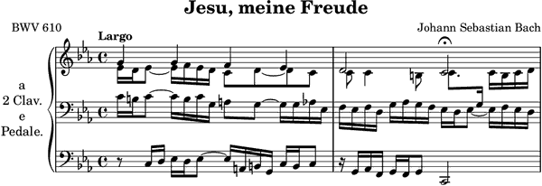
(cliqueu per veure una imatge més gran)
Notació complexa
Aquest exemple procedent de les Goyescas de l’Enric Granados mostra algunes de les possibilitat més avançades de la composició tipogràfica, com ara les barres en angle, vírgules de pentagrama creuat i línies de seguiment de veus.

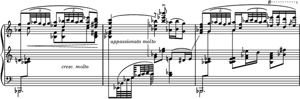
(cliqueu per veure una imatge més gran)
Música antiga
El LilyPond també permet diferents tipus de notació antiga, com ara aquest passatge de cant gregorià.

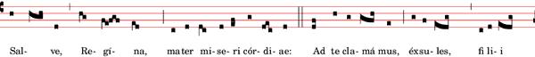
(cliqueu per veure una imatge més gran)
Música moderna
Els compositors contemporanis troben que el LilyPond és adequat per a la impressió de notació inusual. Heus aquí un extracte de l’obra Čáry, del Trevor Bača, per a flauta baixa sola.

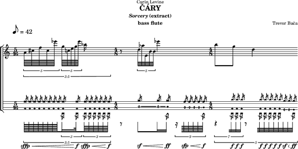
(cliqueu per veure una imatge més gran)
Creació flexible i eficient de material d’interpretació
Es poden crear diferents materials de lectura a partir del mateix codi font. Heus aquí un extracte de la realització del Nicolas Sceaux de Giulio Cesare del Haendel, en partitura completa, reducció per a piano y veu, i una particel·la de violí.


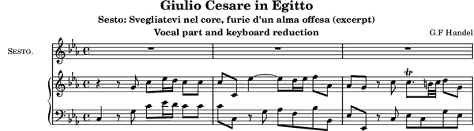
(cliqueu per veure una imatge més gran)

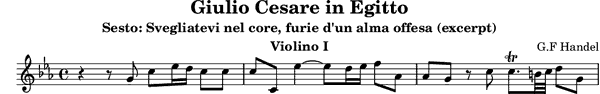
(cliqueu per veure una imatge més gran)
Tabulatura
El LilyPond contempla la notació de xifra per a guitarra, que es pot personalitzar per adaptar-la a qualsevol instrument que llegeixi de tabulatura. La pauta de tabulatura es genera automàticament a partir de les notes que s’escriuen al pentagrama normal.

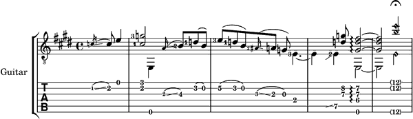
(cliqueu per veure una imatge més gran)
Música vocal
El LilyPond és excel·lent per a tot tipus de música vocal, des d’himnes de música sacra fins a òperes. A continuació presentem un motet medieval amb uns requisits lleugerament inusuals. La veu de tenor està escrita en un compàs diferent a les altres però s’ha d’alinear com si estigués al mateix compàs. El LilyPond tracta aquesta situació amb molta elegància. Observeu també els incípit amb les claus a l’estil de l’edició vaticana, les vírgules barrades que indiquen notes repetides, i els parèntesis de lligadura per sobre de certs grups de notes.

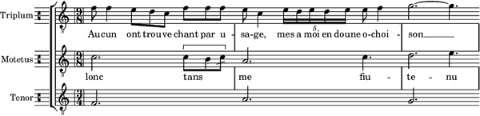
(cliqueu per veure una imatge més gran)
Música pop
És senzill crear fulls guia d’acords en xifrat americà per a música pop amb melodia, lletra, noms d’acords i diagrames de posicions d’acord. En aquest exemple veiem alguns dels diagrames de posicions predefinides, però es poden personalitzar profundament per complir amb gairebé qualsevol situació.

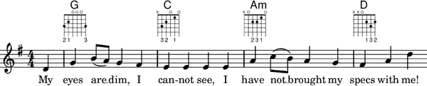
(cliqueu per veure una imatge més gran)
Aplicacions per a l’educació
El LilyPond és molt indicat també per a aplicacions educatives. Heus aquí un exemple d’un senzill exercici de contrapunt.

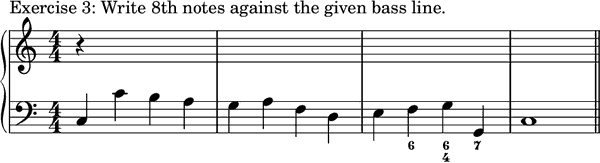
(cliqueu per veure una imatge més gran)
Projectes grans
El LilyPond és excel·lent per a projectes grans com ara òperes o també obres per a orquestra simfònica. A més a més, l’entrada basada en text proporciona una major accessibilitat (aquest exemple ha estat aportat per Hu Haipeng, un compositor cec).

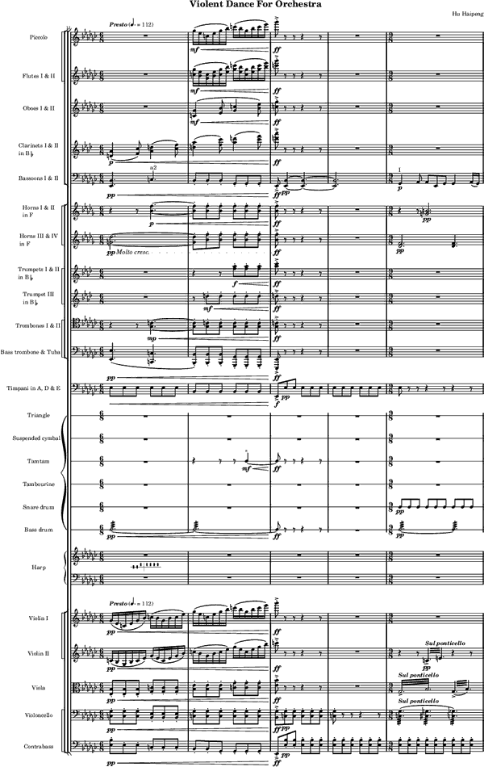
(cliqueu per veure una imatge més gran)
Sortida personalitzada
Un petit fragment de la Klavierstück II de Stockhausen, per demostrar la capacitat del LilyPond d’oferir una sortida personalitzada.

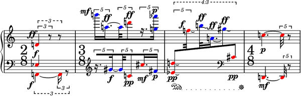
(cliqueu per veure una imatge més gran)
Diagrames de Schenker
La sortida estàndard es pot modificar de forma molt profunda. Heus aquí una impressionant anàlisi schenkeriana creada pel Kris Schaffer, per a un article a la revista Linux Journal. S’han afegit alguns colors per millorar la visibilitat.

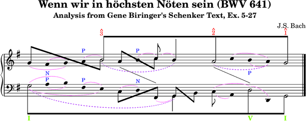
(cliqueu per veure una imatge més gran)
Ara què?
Encara no us convenç el LilyPond? El LilyPond és programari lliure, us concedeix, com a usuari, la Llibertat. Si ja voleu provar el LilyPond, llegiu primer el que tenim a dir-vos sobre la Entrada de text.
Llibertat
Software lliure
GNU El LilyPond està escrit i mantingut per una comunitat d’entusiastes. Està publicat sota la Llicència General Pública de GNU i la Llicència de Documentació Lliure de GNU, donant a tothom la llibertat d’arreglar, modificar i ampliar el programa. La creació de música bella no hauria de requerir centenars d’euros en programari!
Quins són els beneficis per als usuaris?
- Sense cost: descarregueu-lo i proveu-lo! Que podeu perdre?
- Es pot compartir: si us agrada el programa passeu una còpia a les vostres amistats, professors i professores, alumnes i col·legues!
- Disponibilitat del codi font: si teniu curiositat sobre com el LilyPond crea algun tipus de notació musical, podeu veure exactament com està feta.
- Ampliable: podeu afegir noves funcionalitats, corregir errors i canviar el
funcionament. Si no sabeu programar, podeu contractar a alguna persona
programadora perquè faci aquestes tasques.
Això pot semblar poc atractiu per a músics ocasionals, però la capacitat d’expandir el programari pot ser molt valuosa per a les persones que es dediquen a la composició, per a empreses i per a aplicacions acadèmiques.
- Seguretat per al futur: si una empresa comercial fa fallida, que passa amb qualsevol música electrònica que depengui dels seus productes? Això no és un problema amb el LilyPond; fins i tot si tot l’equip de desenvolupament l’abandonés (cosa extremadament improbable), el programa encara seguiria estant disponible de forma legal per a la seva còpia, modificació i distribució.
Perquè “regalen” els desenvolupadors del LilyPond la seva feina sense demanar res a canvi?
Gairebé tots nosaltres veiem el desenvolupament del LilyPond com un hobby o un treball voluntari. Això doncs, la pregunta és realment “perquè les persones es presten voluntàries?”
- Per diversió: el treball a la recerca d’una meta pot ser divertit, especialment quan treballes en equip!
- Metes comunes: tots nosaltres volem partitures amb bon aspecte, però són pocs els que tenen experiència (i cap té temps) per crear un programa que pugui fer front a totes les situacions. Treballant en equips (una persona millora el codi que traça les barres de corxera, una altra millora la forma de les lligadures i una tercera escriu documentació explicant com utilitzar aquestes possibilitats) podem assolir la nostra meta amb tan sols una fracció de l’esforç individual.
- La “cultura del regal”: el moviment del programari lliure ha creat molts projectes genials de programari, com ara GNU/Linux, Mozilla Firefox i el joc Battle for Wesnoth. Després d’haver-se vist beneficiats per aquests projectes, alguns desenvolupadores desitgen “retornar” alguna cosa a la comunitat.
- Experiència laboral: les contribucions a projectes de programari lliure són una magnífica forma de practicar la programació, l’escripture de documentació, la traducció de documentació o el disseny. Aquesta experiència ha ajudat a molts programadors a trobar feina a empreses o a universitats.
I ara què?
Encara no us convenç el LilyPond? Llegiu el nostre estens assaig sobre la nostra filosofia de gravar a Rerefons. Si ja voleu provar el LilyPond, en primer lloc llegiu el que hem escrit sobre la Entrada de text.
Rerefons
Monografia sobre el rerefons
Tenim una àmplia monografia que descriu l’estètica computacional: l’art de crear bellesa amb un ordinador.
És una lectura interessant si voleu profunditzar en la discussió de les nostres idees fonamentals. A causa del seu volum, s’ofereix com un «manual». Si voleu llegir-lo ara, continueu cap a Monografia. Si, en canvi, sols voleu llegir una introducció ràpida al LilyPond, de moment us ho podeu saltar.
I ara què?
Encara no us convenç el LilyPond? Llegiu quelcom sobre les Produccions i partitures d’alguns dels nostres usuaris. Si ja voleu provar el LilyPond, en primer lloc llegiu alguna cosa sobre la nostra Entrada de text.
Produccions
Produccions que usen el LilyPond
Aquí podeu informar-vos sobre les persones que usen efectivament el LilyPond en les seves produccions, ja sigui per interpretacions en viu de la seva música o com a partitures publicades. La llista està limitada a treballs que s’han publicat al domini públic o amb llicències obertes.
Actuacions i concerts
La música gravada amb el LilyPond s’ha utilitzat en interpretacions i actuacions per tot el mon. Alguns titulars:
- Marc Hohl va escriure partitures musicals per a nens i adolescents. S’han gravat amb el LilyPond (amb el LaTeX) i estan disponibles de manera gratuïta, en alemany, a https://www.singspielschmiede.de/. Tota la música s’ha interpretat a l’escenari a l’escola on treballa el Marc.
- Aurélien Bello va arreglar
una versió del Der Rosenkavalier de Richard Strauss per a
quatre cantants i orquestra de cambra composta per a trenta
instrumentistes. La producció va ser encarregada per l’Orquestra
Filarmònica de Berlin, els membres d la qual van ser els
intèrprets el
2
i el 7 d’abril a la Festspielhaus de Baden-Baden, i el
26
d’abril a la Philharmonie (großer Saal) de Berlín. Ens
encanta veure músics de alta reputació tocant a partir de
partitures fetes amb el LilyPond (i segons sembla estan molt
contents amb elles).
Aurélien també ha reorquestrat Der Ring des Nibelungen del Richard Wagner a una per a nens de 100 minuts de durada. Està escrita per a orquestra simfònica estàndard però amb una plantilla reduïda de cantants, i va ser interpretada per la Radio-Sinfonieorchester Berlin a l’abril de 2014 a l’Atze Musiktheater de Berlín. El director va ser el Heiko Matthias Förster.
L’Aurélien ha reorquestrat a més els Quadres a una exposició d’en Mussorgsky, i a més ho va dirigir per a la Junge Philharmonie Brandenburg el 2011 i un altre cop al 2012.
- El Joe Smeets va crear partitures per al llibre infantil Zing
Mee (Canta amb mi) de l’Annie M.G. publicat per Querido
(ISBN 9789045106205):
www.queridokinderenjeugdboeken.nl; partitures d’assaig de cor
per a la traducció holandesa del Saint Nicolas del Benjamin
Britten realitzat per Muziektheater Hollands Diep el 2011,
www.muziektheaterhollandsdiep.nl. També va treballar en
la partitura general i particel·les d’un arranjament del
Boris Godunov del Mussorgsky per a quartet de vent,
piano i percussió. Es va interpretar el 2014, de nou per part de
Muziektheater Hollands Diep.
El Joe també va crear les partitures per als assajos dec cor de la traducció al neerlandès del Saint Nicolas d’en Benjamin Britten. Es va interpretar el 2011 per Muziektheater Hollands Diep vegeu www.muziektheaterhollandsdiep.nl.
- Una edició crítica de la sèrie d’òperes Enea nel Lazio (1760), del Tommaso Traetta, amb llibret del Vittorio Amedeo Cigna-Santi, en quatre parts: Primera part Segona part Tercera part Quarta part Creada pel Luca Rossetto Casel per a la seva tesi de doctorat.
- Kieren MacMillan, compositor i director musical. Entre les seves nombroses obres recents estan Go Thy Way, interpretada pel cor Salt Lake Choral Artists al març de 2012; la Just Out of Reach Suite interpretada pel Duo Chrysalis ; thrafsmata interpretada al juliol de 2011 pel Pittsburgh New Music Ensemble.
- Anonymous Student Compliment or Complaint, del
Mike Solomon, guanyador d’entre 172
participants procedents de 22 països del
concurs de composició
Left Coast de 2011.
Entre altres obres estan: Norman (age 1) per a clarinet sol, interpretada al festival de música electroacústica (FEMF) de la Universitat de Florida a l’octubre de 2010.
- Una edició moderna de la Serenata Erminia de l’Alessandro Scarlatti, editada pel musicòleg Thomas Griffin, (Roma, Itàlia). Interpretada el 22 d’octubre de 2010 a la Galleria del Palazzo Zevallos Stigliano de Nàpols. Alessandro Scarlatti 2010, durant les commemoracions dels 350 anys del naixement del compositor.
- La interpretació de
Mercury Baroque de
Armide de Lully, 15 i 16 de maig de 2009, a Houston, Texas
(tipografia del Nicolas Sceaux).
El Nicolas també va gravar extractes instrumentals de Hippolyte et Aricie del Rameau, interpretades a l’església de St. James a Manhattan el 8 de maig de 2009, pel Frederick Renz i el seu conjunt Early Music New York (realització tipogràfica de Nicolas Sceaux).
- Affaire Étrangère, òpera del Valentin Villenave, amb llibret en francès del Lewis Trondheim, estrenada l’1 de febrer de 2009 a L’Opéra National de Montpellier, a França.
Partitures publicades
Llibreries de partitures
- Mutopia Project, amb més de 2000 peces en partitures de música clàssica amb descàrrega gratuïta, és el principal aparador de partitures fetes amb el LilyPond. Cada peça ve amb el seu fitxer de codi font LilyPond, cosa que us permet aprendre d’altres tipògrafs i també fer les vostres edicions.
- baroquemusic.it, va començar
el 2005, recull més de 1300 partitures de música barroca. L’arxiu
inclou partitures, parts separades i fitxers midi, distribuïts
sota una llicència Creative Commons i disponible sols sota subscripció.
[Aquest lloc es tancarà al final del 2025 perquè recentment el seu mantenidor va morir.]
- Partitura Organum és una col·lecció creixent de peces d’orgue al domini públic, escrites amb el LilyPond i distribuïdes sota la llicència Creative Commons.
- Bayanguru proveeix partitures seleccionades de música per al Bayan (un acordió cromàtic de botons), sota la llicència GPLv3.
- Clairnote ofereix partitures de música de manera gratuïta en notació Clairnote. Clairnote és un sistema alternatiu de notació que té l’objectiu de fer més fàcil d’entendre la lectura y escriptura de música. Les partitures al lloc web estan agafades de Mutopia i altres recursos en línia i es converteixen després a la notació pròpia Clairnote.
Dipòsits de codi font de partitures
- dipòsit del Mutopia Project: fitxers de codi font de totes les peces de la lllbreria Mutopia.
- exemples de la pàgina web del Lilypond: fitxers de codi font de la galeria d’exemples que es mostren a Exemples.
- Nicolas Sceaux: partitures de música barroca escrites amb el LilyPond per un dels seus desenvolupadors.
- Bayanguru: fitxers de codi font per a la llibreria Bayanguru de partitures de música.
Si coneixeu qualssevol altres concerts o partitures que mereixin aparèixer relacionats aquí, us preguem que ens ho feu saber escrivint un missatge a la llista de correu bug-lilypond. Si no esteu subscrit a la llista, encara ho podeu fer a la página informativa.
I ara què?
Encara no us convenç el LilyPond? Llegiu algunes de les Ressenyes dels nostres usuaris. Si ja voleu provar el LilyPond, en primer lloc informeu-vos sobre la nostra Entrada de text.
Ressenyes
Que diu la gent sobre el LilyPond?
Articles publicats
- Abril de 2011
Linux Magazine publica un article titulat Projects on the Move. És un article introductori sobre el MuseScore, el LilyPond i el Chordii. L’autora Carla Schroeder diu que “LilyPond es treballa des de la línia d’ordres, però que la manca d’una interfície gràfica no ha d’atemorir l’usuari; el LilyPond és amigable i fàcil d’aprendre”, i aporta un exemple fàcil d’abordar.
- Maig de 2010
Peter Kirn, al lloc web Create Digital Music website, publica una revisió del LilyPond. Aporta una mirada equilibrada sobre la utilització, lloa la notació d’alta qualitat del LilyPond i suggereix als lectors que el provin.
- Setembre de 2009
La revista LinuxUser alemanya va publicar un article sobre el LilyPond.
- Agost de 2009
Ann Drinan, a la pàgina Polyphonic.org, presenta alguns comentaris de dos arxivers d’orquestra que xerren sobre l’ús de programari per al manteniment de les seves biblioteques.
- Juny de 2009
A un article publicat a la revista anual de la Associació Nacional de Pares d’Alumnes de Conservatoris de França, el compositor i membre del projecte LilyPond, Valentin Villenave, explica com les llicències lliures, i concretament les partitures escrites amb el LilyPond, participen de l’objectiu d’aconseguir que la música escrita sigui accessible per a tots.
- Febrer de 2008
A articles en la seva pàgina personal, l’Andrew Hawryluk compara al Finale amb el LilyPond en termes generals, i avalua en detall les possibilitats de gravat musical dels dos programes. El segon article és una instructiva anàlisi de l’edició del Preludi per a piano número 6 del Rachmaninoff, incloent-hi comparacions amb una edició de referència gravada a mà.
- Juny de 2006
DistroWatch premia al LilyPond k escriu “Dames i cavallers, ens complau anunciar que, basant-nos en la demanda dels lectors, la donació de DistroWatch de maig de 2006 ha estat concedida al LilyPond (190,00 €) i a Lua (US$250,00).”
- Desembre de 2005
Linux Journal publica un article titulat Elaboreu fantàstics diagrames de Schenker amb el GNU LilyPond. És un article destacat, profund però pràctic amb atractius gràfics de LilyPond. L’autor, Kris Shaffer, destaca: “El Gnu LilyPond genera uns gràfics preciosos que a les alternatives comercials semblar de segona fila.”
- 20 d’agost de 2005
El diari belga De Standaard investiga què empeny als autors de programari lliure en un article titulat Delen van KENNIS zonder WINSTBEJAG (Compartir el coneixement sense ànim de lucre) al seu ‘DS2 bijlage’. El LilyPond s’usa com a exemple i l’article està esquitxat de cites procedents d’una entrevista per email amb Jan Nieuwenhuizen. Això marca la primera aparició del LilyPond a la premsa escrita d’importància.
- Juny de 2005
Un article en francès sobre el llançament del LilyPond 2.6 va aparèixer en linuxfr.org.
- Octubre de 2004
Els editor de Computer!Totaal, una revista holandesa d’informàtica, descriuen al LilyPond en l’edició d’octubre de 2004 com: “Meravellós programari lliure (de codi obert) (…) Les partitures produïdes pel LilyPond son excepcionalment boniques (…) un sistema molt potent que pot fer gairebé qualsevol cosa.”
- Juliol/agost de 2004
Dave Phillips va escriure un article introductori per a Linux Journal At the Sounding edge: Lilypond, primera i segona part.
- Març de 2004
Chris Cannam va entrevistar a Han-Wen Nienhuys i a Jan Nieuwenhuizen a linuxmusician.com (una pàgina ara desapareguda). Aquesta entrevistat es va ressenyar també a una història de slashdot.
- Febrer de 2004
El cantant de jazz Gail Selkirk escriu sobre Submergir-se a l’estany dels nenúfars (Lily Pond). “… pot fer fulls guia d’acords o parts orquestrals completes, i el resultat pot ser increïble.” Computer Music Special, número CMS06.

Ressenyes dels usuaris
Carter Brey, primer violoncel de la Filharmònica de Nova York
“… He escrit un parell de peces per a violoncel solista que he imprès amb el LilyPond i que enviaré a Schirmer per a la seva publicació. Puc apostar que el seu gravat no serà ni la meitat de bo que el meu!”
Orm Finnendahl, professor de composició, Conservatori Superior de Friburg
“Tot i que no domino el [LilyPond] encara, estic molt impressionat. Vaig usar el programa per digitalitzar un motet del Josquin Desprez en notació mensural i no hi ha dubte que LilyPond derrota a altres programes de notació en quant a velocitat, facilitat d’ús i aparença dels resultats!”
Darius Blasband, compositor (Brussel·les, Bèlgica)
“[...després de primer assaig orquestral] vaig obtenir nombrosos complits sobre la qualitat de les partitures. El que és encara més important: mentre que el LilyPond proporciona nombroses formes de millorar l’aparença de les partitures, el que vaig lliurar a l’orquestra és bàsicament la impressió en brut, sense retocar.”
Kieren MacMillan, compositor (Toronto, Canadà)
“Gràcies i enhorabona a l’equip de desenvolupament pel seu increïble treball. Mai no he vist quelcom que s’apropi al resultat que obtinc amb el LilyPond; confio plenament en què les meves necessitats de publicació musical seran satisfetes més enllà de tota expectativa usant aquesta genial aplicació. (…) bàsicament, la impressió del LilyPond sense retocar (…) es veu millor que la majoria de les publicacions "professionals" més recents amb les quals l’he comparat (per exemple pràcticament qualsevol partitura de Warner Bros, i fins i tot moltes de les més recents de ‘les editores antigues’). (…)” “Supera això, Finale/Sibelius/Igor/el que sigui!!!”
Chris Cannam, programador principal del projecte RoseGarden
“LilyPond és, obviament, el King Kong [de la tipografia musical] en gran.”
Chris Snyder, Adoro Music Publishing
“La forma en què s’introdueix la música per a LilyPond em fa pensar d’una manera més musical – hi ha hagut molts cops que m’he bloquejat sobre com dir-li al Lily que imprimeixi alguna cosa, sols per adonar-me que fins i tot si fes exactament el que el compositor volia, la música seria confusa de llegir. El LilyPond m’ho posa molt més fàcil en treballar en el meu doble paper d’editor i copista.”
“Porto utilitzant exclusivament el LilyPond per al meu negoci de publicació acabat d’inaugurar. Pràcticament sense excepció, tots els compositors s’han quedat bocabadats per la qualitat del gravat que se’l presentava amb les proves de la seva música prèvia a la publicació. Em reservo part del mèrit d’això (ocupo molt temps a alterar els resultats, especialment les lligadures, sobretot als acords), però el LilyPond em dóna un excel·lent punt de partida, una interfície molt intuïtiva, i la capacitat de modificar absolutament qualsevol cosa si el vull dedicar el temps necessari. Estic convençut que cap producte comercial se li apropa ni de lluny.”
David Bobroff, trombó baix, Orquestra Simfònica d’Islàndia
“Crec que el LilyPond és genial (…) quant més aprenc del LilyPond, més m’agrada!”
Vaylor Trucks, intèrpret de guitarra elèctrica (sí, parent de...)
“Estic súper-impressionat amb el LilyPond (…)”
“¡¡¡EL MILLOR PROGRAMA DE LA HISTÒRIA!!!”
“Moltíssimes gràcies a tots pel vostre dur treball i dedicació!”
Nicolas Sceaux, col·laborador de Mutopia
“Tenia una espècie de relació passió-odi amb el LilyPond. Passió perquè la primera partitura que vaig veure era tan increïble! La descripció del LilyPond es fonamenta en la bellesa. Això és massa modèstia! (…) a mesura que el LilyPond millora contínuament i observo com es fan les coses amb el Scheme, tinc cada cop menys frustracions. De totes maneres el que vull dir és: gràcies per donar-nos el Lilypond, és realment bo.”
Werner Lemberg, director d’orquestra al Teatre de Koblenz,
Alemanya, i destacat hacker del GNU
“De qualsevol manera, el LilyPond fa un treball sensacional!”
Paul Davis, desenvolupador del JACK i Ardour
“Crec que el [LilyPond] és un programa increïble, i produeix un resultat realment meravellós. Després d’haver llegit una ressenya sobre ell l’any passat, vaig estar donant la pallissa a diversos amics meus parlant-los del seu potencial.”
El DrlMika Kuuskankare, investigador de la Sibelius Academy de Finlàndia, compositor i autor de l’Expressive Notation Package (ENP)
“Sento el més profund respecte cap al LilyPond i els seus creadors i mantenidors degut a què sé per la meva experiència personal el difícil que pot ser aquest tipus de programari.”
David Cameron, Músic, tipògraf musical professional i usuari experimentat de SCORE
“EL meu agraïment de tot cor a tot aquell que contribueix a aquest projecte. Jo vaig ser usuari intensiu del SCORE per a cases grans d’edició musical, allà pels anys 90, però ara sento que el LilyPond, per fi, em permet aconseguir exactament el que vull fer sobre la pàgina, especialment quan no es tracta de la pràctica "estàndard".”
Si coneixeu qualssevol altres articles de notícies o testimonis que mereixin aparèixer relacionats aquí, us preguem que ens ho feu saber escrivint un missatge a la llista de correu bug-lilypond. Si no esteu subscrit a la llista, encara ho podeu fer a la página informativa.
Y ara ¿què?
Llegiu el que tenim que dir-vos sobre la nostra Entrada de text.
Entrada de text
“Compilar” la música

(cliqueu per veure imatge més gran)
El LilyPond és un sistema compilat: s’executa sobre un arxiu de text que descriu la música. El resultat es pot veure a la pantalla o imprimir-se. De certa manera, el LilyPond se sembla més a un llenguatge de programació que als programes d’edició gràfica de partitures.
No escrivim la música pel procediment d’agafar les notes d’una barra d’eines gràfica i arrossegar-les a una partitura que es refresca de forma dinàmica; escrivim la música teclejant un text. Aquest text és interpretat (o “compilat”) per part del LilyPond, que al seu torn produeix una bella música impresa.
És possible que les persones acostumades a interfícies gràfiques d’usuari hagin d’aprendre una forma de treball nova, però els resultats, sense cap mena de dubte, mereixen la pena!
Nota: Presentem aquí una panoràmica del nostre paradigma d’entrada de tex: no és tan complicat com sona! No us amoïneu ara per comprendre tots i cadascú dels detalls d’aquests exemples; la nostra documentació per a principiants s’ocupa de tot això a un ritme molt més progressiu.
L’ela amb l’ela, "La"
Les notes es codifiquen mitjançant lletres i números. Les instruccions especials s’introdueixen mitjançant barres invertides.
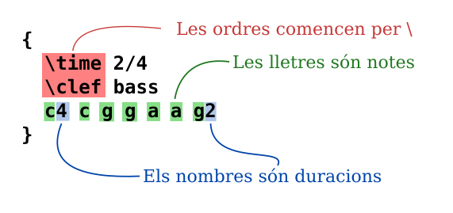

Les alteracions es fan amb noms diferents: afegiu -is
per obtenir un sostingut, i -es per a un bemoll (són els
noms de les notes en holandès, però estan disponibles en altres
idiomes). El LilyPond esbrina on s’han d’imprimir les alteracions.
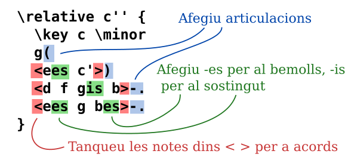

Música pop
Aplegueu acords i lletra per obtenir un full guia d’acords:
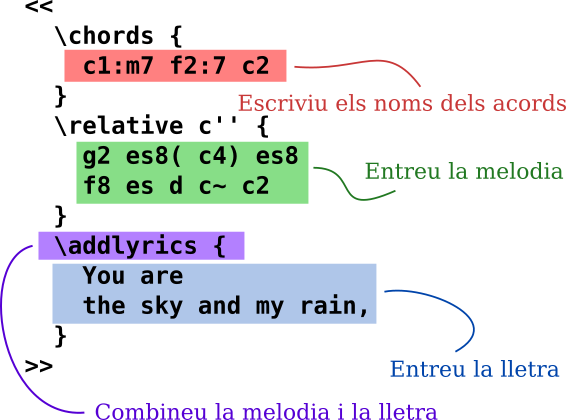

Particel·les d’orquestra
El fitxer d’entrada conté les notes d’una peça musical La partitura i les particel·les es poden fer a partir d’un sol fitxer d’entrada, de manera que un canvi en una nota sempre afecta tant a les particel·les com a la partitura general. Per poder incloure la mateixa música en diversos llocs, assignem la música a una “variable” (un nom):
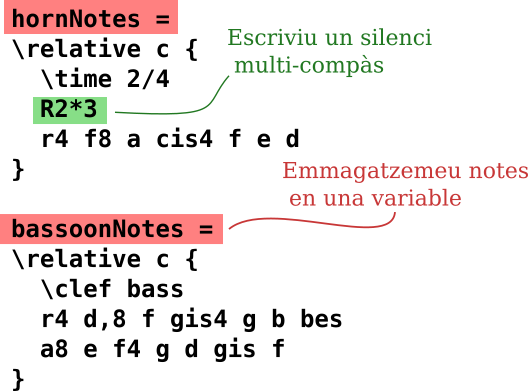
Aquesta variable s’usa aleshores a una sola part instrumental (aquí transportada, amb els silencis de diversos compassos agrupats):
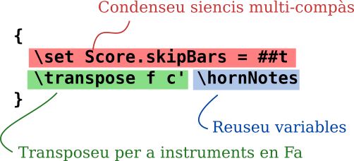

La mateixa variable s’utilitza a la partitura general (aquí en to de concert):
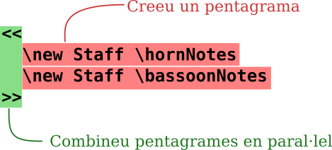

Documentació per al principiant
Ens adonem que molts usuaris veuen una mica estranya aquesta forma d’introduir la música. Per aquest motiu, hem escrit una àmplia documentació d’ajuda als nous usuaris, començant amb Aprenentage. El manual d’aprenentatge és el millor per començar, perquè allí es responen moltes preguntes abans que es formulin.
Us preguem que llegeixi el Manual d’Aprenentatge abans de queixar-vos de possibles fallades del programa! Amb freqüència, els usuaris novells creuen que el LilyPond no funciona, quan de fet està funcionant exactament tal i com està dissenyat per fer-lo.
Teniu a la vostra disposició una documentació molt més profunda a la secció Manuals.
Ben Lemon, usuari del LilyPond, ha creat i publicat una col·lecció de tutorials en vídeo al seu blog, dirigits a nous usuaris.
Entorns d’edició facilitats

(cliqueu per veure una imatge més gran)
L’èmfasi del LilyPond està en primer lloc en la producció de música escrita amb la màxima qualitat; la creació d’una interfície gràfica d’usuari (un GUI) ens hauria distret d’aquesta meta. Malgrat això, hi ha altres projectes els propòsits dels quals és fer més fàcil la creació de fitxers d’entrada del LilyPond.
Alguns entorns d’edició inclouen el acolorit sintàctic, compleció automàtica d’instruccions i plantilles pre-elaborades. D’altres programes ofereixen realment un GUI que permet la manipulació directa d’una partitura gràfica. Per veure més informació, consulteu Entorns millorats.
I ara què?
Ja teniu la preparació per Descarregar el LilyPond. Encara no esteu convençut? Llegiu quelcom sobre els entorns d’edició a Entorns millorats.
Entorns millorats
Nota: Els següents programes i paquets es desenvolupen fora del
nucli del LilyPond, per part d’usuaris entusiastes que han cregut
necessari o han trobat una manera d’afegir el LilyPond al seu
propi flux de treball. Això vol dir que aquests paquets poden no
reflectir la sintaxi actual del LilyPond, tot i que la seva
sortida es pot actualitzar usant convert-ly.
Aplicacions amb interfície gràfica
Frescobaldi

(cliqueu per veure una imatge més gran)
https://www.frescobaldi.org El Frescobaldi és un editor de música i text lleuger tot i que potent, amb moltes funcions creades especialment per al LilyPond. Entre les seves principals possibilitats estan els enllaços per d’apuntar i clicar amb el ratolí entre el codi i la vista prèvia de la música, detallats assistents de partitura, un navegador incorporat per a la documentació del Lilypond, sintaxi amb colors i completat automàtic de les paraules clau. El Frescobaldi està escrit amb Python amb el PyQt5 per a la interfície d’usuari, i funciona als principals sistemes operatius (GNU/Linux, Mac OS X i Windows).
Denemo

(cliqueu per veure una imatge més gran)
El Denemo és un editor gràfic que genera codi font del LilyPond, i també permet la reproducció sonora de la música. Permet els usuaris veure el codi d’entrada de LilyPond en paral·lel amb la visualització gràfica. Es poden aplicar a les notes, acords, etc., ajustament addicionals del LilyPond i es desen amb el document del Denemo, de forma que els usuaris poden continuar editant-lo de manera gràfica.
En moure el cursor pel text del LilyPond es mou també a la presentació gràfica, i els errors de sintaxi dels ajustaments al LilyPond es destaquen a la finestra de text quan s’imprimeixen des del programa.
Spontini-Editor

(click to enlarge)
https://github.com/paopre/Spontini
Spontini-Editor és un editor de música que combina text i gràfics i permet agilitzar la creació i ajustament gràfic precís de partitures complexes editades amb el Lilypond mitjançant dues característiques bàsiques:
is a text-combined-with-graphic music editor that speeds up the creation and fine graphic tuning of complex scores edited with LilyPond through two main features:
- Permet el posicionament d’objectes musicals (articulacions, textos, pedals, corbes, parèntesis, etc.) amb el ratolí. Un cop es fa el posicionament de manera gràfica, l’editor de text informa sobre el canvis corresponents al fitxer d’entrada.
- Dóna ajuda a la creació de música de piano mitjançant la inserció de notes en forma tabular i formatada i proveeix eines ràpides per a la notació entre pentagrames.
Funciona tant com una aplicació separada o com un servidor de web més un sistema multi-client.
Editors basats en navegador web
Hacklily

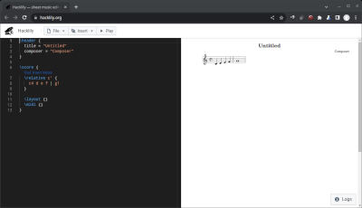
(feu clic per ampliar)
Un editor i eina de publicació en línia de partitures impulsat pel LilyPond, amb funcionalitats addicionals com ara la compleció automàtica i l’ajuda contextual. El codi font d’allotjament web està disponible sota la llicència AGPL, a la seva pròpia pàgina de desenvolupament. EL Hacklify fa servir el LilyPond 2.18.2, i tot que hi ha una incidència oberta per actualizar-ho a la versió 2.24, no s’ha actualitzat des del 2022.
www.omet.ca

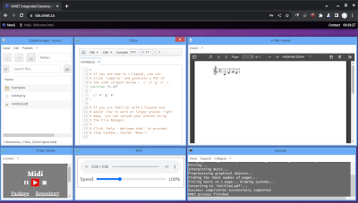
(cliqueu per ampliar)
Des de 2010, Online Music Editing Tools (OMET) ofereix un servei LilyPond disponible per usar amb una interfície web ajustada específicament. Es requereix registrar-se però és gratuït.
Connector per a processadors de text
OOoLilyPond
https://extensions.services.openoffice.org/en/project/OOoLilyPond
Una extensió de l’OpenOffice.org que converteix fitxers LilyPond en imatges dins de documents OpenOffice.org.
Complements d’IDE
Elysium
https://github.com/thSoft/elysium
Un entorn complet per editar partitures per al LilyPond amb Eclipse, oferint una caixa amb moltes eines per a una gestió convenient del Lilypond.
Editors de text
Emacs
https://www.gnu.org/software/emacs/ L’Emacs és un editor de text amb funcionalitats avançades per a molts llenguatges de programació. L’Emacs és un editor que es pot expandir àmpliament i es pot usar com un entorn integrat de desenvolupament. Hi ha un ‘mode del LilyPond’ que ofereix les definicions del llenguatge per treballar amb fitxers font del LilyPond. Un desenvolupador ha escrit lyqi, un mode principal de l’Emacs.
Si no esteu familiaritzat prèviament amb l’Emacs, potser preferireu usar un editor diferent per a l’escriptura de fitxers del LilyPond.
Hi ha més informació sobre la configuració de l’Emacs a Text editor support.
Vim
https://www.vim.org El Vim és un editor de text minimalista
que és una estensió de l’antic editor vi de l’Unix.
També és es pot expandir i configurar.
Si no esteu familiaritzat prèviament amb el Vim, probablement preferireu utilitzar un editor diferent per escriure fitxers d’entrada del LilyPond.
Hi ha més informació sobre la configuració de l’Emacs i del Vim a Text editor support.
TeXShop
http://www.uoregon.edu/~koch/texshop
L’editor TeXShop per a MacOS X es pot estendre perquè executi
el LilyPond lilypond-book i convert-ly des de
dins de l’editor, utilitzant les extensions que estan disponibles a:
Altres programes capaços d’exportar codi del LilyPond
Editors de partitura, tablatura i MIDI:
- bwwtolily intenta
convertir un fixer
.bwwo.bmwal LilyPond. Tot i que no tots els ornaments es converteixen adequadament (el que és cert especialment amb piobaireachd), el programa imprimeix una llista d’ells. - Canorus, un editor de partitures, també pot exportar al LilyPond, però encara és un programa en fase beta, s’agraeixen les provatures per part dels usuaris.
- Enc2ly és un programa per a GNU/Linux que converteix una partitura musical d’Encore en una del LilyPond.
- go-enc2ly és una eina de GO que converteix fitxers de Encore al LilyPond. Es va crear utilitzant la recerca i la enginyeria inversa per mitjà de la modificació puntual de fitxers .enc i carregant-los a la versió de demostració 4.55.
- NW2LY és un programa en C# que converteix una cançó del NoteWorthy Composer al LilyPond.
- Ripple és un programa que ajuda en la creació de partitures i particel·les, i que inclou un mode per barrejar diferents obres musicals a una sola partitura o particel·la.
- Rosegarden, un seqüenciador MIDI i d’àudio, que té també un editor de partitura per a edició d’un sol pentagrama.
Generadors de codi algorítmics
- Abjad, una API de Python per al control formalitzat de partitures, dissenyat per ajudar als compositors a construir fragments complexos de notació del LilyPond d’una forma iterativa i incremental.
- FOMUS, (FOrmat MUSic) és una eina de notació musical per a compositors de música per ordinador. Està escrit en al llenguatge Lisp, i s’ha provat amb diversos intèrprets. També hi ha disponible una versió traduïda al llenguatge C++.
- Strasheela, un entorn construït sobre el llenguatge de restriccions Mozart/Oz.
Altres programes sense desenvolupament actiu actualment
- LilyPondTool va ser creat amb una extensió per a l’editor de text jEdit.
- LilyKDE s’ha substituït per Frescobaldi, i existeix com a LilyKDE3 per a KDE 3.5 i com a lilypond-KDE4 per a KDE 4.1 solament.
- LilyComp és un programa gràfic d’introducció de notes, que actua com un teclat numèric que produeix notes del LilyPond.
- MuseScore, un editor de partitures. L’exportació de codi del LilyPond es va descartar en la versió 2.0, però encara estan disponible versions més antigues per a descarregar a Sourceforge.
- NoteEdit, que importava MusicXML, s’ha escindit a NtEd i Canorus.
- OOoLilyPond, una extensió de l’OpenOffice.org que converteix fitxers del LilyPond a imatge dins de documents de l’OpenOffice .org. Tot i que ja no s’està desenvolupant de forma activa, encara sembla funciona amb la versió 4.
- Rumor, un convertidor monofònic de MIDI al LilyPond en temps real.
- TuxGuitar, un editor i reproductor multipista de tabulatura, que inclou un visor de partitura i pot exportar al LilyPond.
I ara què?
Ja teniu la preparació per Descarregar el LilyPond.
Encara no us convenç? Molts compositors, músics i directors d’orquestra han après a escriure música en el nostre format d’entrada. Els usuaris amb experiència fins i tot que poden introduir una partitura completa al LilyPond més ràpid que amb un teclat de piano o amb el ratolí i un GUI! Possiblement us agradi donar una ullada a les Possibilitats, Exemples o a la Llibertat i Ressenyes dels nostres usuaris. A més a més, el nostre enfoc de l’estètica computacional del gravat musical clàssic ve explicat en el nostre tractat sobre el Rerefons.
Formalitats legals
Es reconeix el copyright de tots els logotips i imatges de marca de productes.
Tux, el pingüí del Linux, és obra de lewing@isc.tamu.edu feta amb el Programa de Manipulació de Imatges del GNU.
El logotip del FreeBSD és una marca registrada de The FreeBSD Foundation.
La “imatge de la X” no és una marca registrada. És obra de Nihonjoe i CyberSkull, i es va posar sota la llicència de Documentació Lliure del GNU versió 1.2 o posterior. Trobem aquesta imatge a aquesta pàgina de la Wikimedia Commons.

La “imatge dels quatre rectangles de colors” no és una marca registrada. És obra de Rohitbd i està posada sota la llicència de Documentació Lliure del GNU, versió 1.2. Trobem aquesta imatge a aquesta pàgina de la Wikimedia Commons.
Descàrregues
Descàrregues del LilyPond 2.26.0
Enllaços essencials
Per als usuaris novells
Entrada de text: El Lilypond és un gravador de música basat en text; és més semblant a un llenguatge de programació que a un programa gràfic d’edició de partitures. Llegiu això per entendre el flux de treball bàsic del LilyPond.
Manual d’aprenentatge: Aquesta introducció amable al LilyPond mostra com instal·lar el programa i us guia als vostres primers passos amb el programa.
Per a usuaris que fan una actualització des d’una versió anterior
Novetats: Què hi ha de nou al LilyPond 2.26.0.
Utilització:
Explica com executar convert-ly per actualitzar amb
facilitat fitxers d’entrada escrits per a versions més antigues.
Aprenentatge: El mètode d’instal·lació que es mostra al tutorial permet instal·lar diverses versions del LilyPond en paral·lel sense problemes.
GNU/Linux
Paquets genèrics o paquets específics de distribució?
Moltes distribucions inclouen el LilyPond dins dels seus dipòsits normals de paquets. Aquests paquets dels depòsits, però, poden ser significativament més antics que la versió estable actual. Si aquest és el vostre cas, us recomanem molt que utilitzeu els nostres paquets genèrics.
Descàrregues de paquets genèrics
Windows
Descàrregues per a paquets genèrics
Aquests fitxers binaris funcionen sota les versions Windows actuals (Windows 7 i Windows 8 no tenen suport).
macOS
Descàrregues per a paquets genèrics
Aquests paquets binaris funcionen a macOS 10.15 (Catalina) o superior. Per a versions de macOS més antigues, si us plau feu servir MacPorts.
Utilització de un gestor de paquets
- MacPorts, un gestor de paquets per a macOS, té una adaptació del LilyPond.
- Homebrew, un altre gestor de paquets per a macOS, té una fórmula del LilyPond.
Per a desenvolupadors
Font: per a empaquetadors
Descàrregues de versions antigues: versions anteriors
Desenvolupament: última versió inestable
Llicència del programari
El LilyPond es publica sota la Llicència pública general de GNU.
Legalitats
Tots el logos i les imatges de producte tenen copyright i reconeixement de marca.
Tux, el pingüí del Linux, és obra de lewing@isc.tamu.edu feta amb el Programa de Manipulació de Imatges del GNU.
La “imatge de la X” no és una marca registrada. És obra de Nihonjoe i CyberSkull, i es va posar sota la llicència de Documentació Lliure del GNU versió 1.2 o posterior. Trobem aquesta imatge a aquesta pàgina de la Wikimedia Commons.
La “imatge dels quatre rectangles de colors” no és una marca registrada. És obra de Rohitbd i està posada sota la llicència de Documentació Lliure del GNU, versió 1.2. Trobem aquesta imatge a aquesta pàgina de la Wikimedia Commons.
| Font | ||
| Descàrregues de versions antigues | ||
| GPL |
Font
Nota: Us recomanem que no intenteu compilar el LilyPond; pràcticament totes les necessitats d’usuari es cobreixen millor amb les versions ja compilades.
Arxiu tar del codi font
Source: lilypond-2.26.0.tar.gz
A Compiling es poden trobar les instruccions de compilació.
Descàrregues de versions antigues
Totes les versions
Per obtenir el codi font i els fitxers binaris de qualsevol llançament, visiteu la nostra GitLab pàgina de llançaments per a totes les versions fina a la 2.23.6, o el lloc de descàrregues anterior per a versions més antigues.
GPL
Llicència de programari
El GNU LilyPond es publica sota la Llicència Pública General GNU. A Llibertat es pot trobar una introducció a aquesta llicència, i les raons per les quals la vam escollir.
Llicència Pública General GNU
Copyright © 2007 Free Software Foundation, Inc. https://fsf.org/ Everyone is permitted to copy and distribute verbatim copies of this license document, but changing it is not allowed.
Preamble
The GNU General Public License is a free, copyleft license for software and other kinds of works.
The licenses for most software and other practical works are designed to take away your freedom to share and change the works. By contrast, the GNU General Public License is intended to guarantee your freedom to share and change all versions of a program—to make sure it remains free software for all its users. We, the Free Software Foundation, use the GNU General Public License for most of our software; it applies also to any other work released this way by its authors. You can apply it to your programs, too.
When we speak of free software, we are referring to freedom, not price. Our General Public Licenses are designed to make sure that you have the freedom to distribute copies of free software (and charge for them if you wish), that you receive source code or can get it if you want it, that you can change the software or use pieces of it in new free programs, and that you know you can do these things.
To protect your rights, we need to prevent others from denying you these rights or asking you to surrender the rights. Therefore, you have certain responsibilities if you distribute copies of the software, or if you modify it: responsibilities to respect the freedom of others.
For example, if you distribute copies of such a program, whether gratis or for a fee, you must pass on to the recipients the same freedoms that you received. You must make sure that they, too, receive or can get the source code. And you must show them these terms so they know their rights.
Developers that use the GNU GPL protect your rights with two steps: (1) assert copyright on the software, and (2) offer you this License giving you legal permission to copy, distribute and/or modify it.
For the developers’ and authors’ protection, the GPL clearly explains that there is no warranty for this free software. For both users’ and authors’ sake, the GPL requires that modified versions be marked as changed, so that their problems will not be attributed erroneously to authors of previous versions.
Some devices are designed to deny users access to install or run modified versions of the software inside them, although the manufacturer can do so. This is fundamentally incompatible with the aim of protecting users’ freedom to change the software. The systematic pattern of such abuse occurs in the area of products for individuals to use, which is precisely where it is most unacceptable. Therefore, we have designed this version of the GPL to prohibit the practice for those products. If such problems arise substantially in other domains, we stand ready to extend this provision to those domains in future versions of the GPL, as needed to protect the freedom of users.
Finally, every program is threatened constantly by software patents. States should not allow patents to restrict development and use of software on general-purpose computers, but in those that do, we wish to avoid the special danger that patents applied to a free program could make it effectively proprietary. To prevent this, the GPL assures that patents cannot be used to render the program non-free.
The precise terms and conditions for copying, distribution and modification follow.
TERMS AND CONDITIONS
- Definitions.
“This License” refers to version 3 of the GNU General Public License.
“Copyright” also means copyright-like laws that apply to other kinds of works, such as semiconductor masks.
“The Program” refers to any copyrightable work licensed under this License. Each licensee is addressed as “you”. “Licensees” and “recipients” may be individuals or organizations.
To “modify” a work means to copy from or adapt all or part of the work in a fashion requiring copyright permission, other than the making of an exact copy. The resulting work is called a “modified version” of the earlier work or a work “based on” the earlier work.
A “covered work” means either the unmodified Program or a work based on the Program.
To “propagate” a work means to do anything with it that, without permission, would make you directly or secondarily liable for infringement under applicable copyright law, except executing it on a computer or modifying a private copy. Propagation includes copying, distribution (with or without modification), making available to the public, and in some countries other activities as well.
To “convey” a work means any kind of propagation that enables other parties to make or receive copies. Mere interaction with a user through a computer network, with no transfer of a copy, is not conveying.
An interactive user interface displays “Appropriate Legal Notices” to the extent that it includes a convenient and prominently visible feature that (1) displays an appropriate copyright notice, and (2) tells the user that there is no warranty for the work (except to the extent that warranties are provided), that licensees may convey the work under this License, and how to view a copy of this License. If the interface presents a list of user commands or options, such as a menu, a prominent item in the list meets this criterion.
- Source Code.
The “source code” for a work means the preferred form of the work for making modifications to it. “Object code” means any non-source form of a work.
A “Standard Interface” means an interface that either is an official standard defined by a recognized standards body, or, in the case of interfaces specified for a particular programming language, one that is widely used among developers working in that language.
The “System Libraries” of an executable work include anything, other than the work as a whole, that (a) is included in the normal form of packaging a Major Component, but which is not part of that Major Component, and (b) serves only to enable use of the work with that Major Component, or to implement a Standard Interface for which an implementation is available to the public in source code form. A “Major Component”, in this context, means a major essential component (kernel, window system, and so on) of the specific operating system (if any) on which the executable work runs, or a compiler used to produce the work, or an object code interpreter used to run it.
The “Corresponding Source” for a work in object code form means all the source code needed to generate, install, and (for an executable work) run the object code and to modify the work, including scripts to control those activities. However, it does not include the work’s System Libraries, or general-purpose tools or generally available free programs which are used unmodified in performing those activities but which are not part of the work. For example, Corresponding Source includes interface definition files associated with source files for the work, and the source code for shared libraries and dynamically linked subprograms that the work is specifically designed to require, such as by intimate data communication or control flow between those subprograms and other parts of the work.
The Corresponding Source need not include anything that users can regenerate automatically from other parts of the Corresponding Source.
The Corresponding Source for a work in source code form is that same work.
- Basic Permissions.
All rights granted under this License are granted for the term of copyright on the Program, and are irrevocable provided the stated conditions are met. This License explicitly affirms your unlimited permission to run the unmodified Program. The output from running a covered work is covered by this License only if the output, given its content, constitutes a covered work. This License acknowledges your rights of fair use or other equivalent, as provided by copyright law.
You may make, run and propagate covered works that you do not convey, without conditions so long as your license otherwise remains in force. You may convey covered works to others for the sole purpose of having them make modifications exclusively for you, or provide you with facilities for running those works, provided that you comply with the terms of this License in conveying all material for which you do not control copyright. Those thus making or running the covered works for you must do so exclusively on your behalf, under your direction and control, on terms that prohibit them from making any copies of your copyrighted material outside their relationship with you.
Conveying under any other circumstances is permitted solely under the conditions stated below. Sublicensing is not allowed; section 10 makes it unnecessary.
- Protecting Users’ Legal Rights From Anti-Circumvention Law.
No covered work shall be deemed part of an effective technological measure under any applicable law fulfilling obligations under article 11 of the WIPO copyright treaty adopted on 20 December 1996, or similar laws prohibiting or restricting circumvention of such measures.
When you convey a covered work, you waive any legal power to forbid circumvention of technological measures to the extent such circumvention is effected by exercising rights under this License with respect to the covered work, and you disclaim any intention to limit operation or modification of the work as a means of enforcing, against the work’s users, your or third parties’ legal rights to forbid circumvention of technological measures.
- Conveying Verbatim Copies.
You may convey verbatim copies of the Program’s source code as you receive it, in any medium, provided that you conspicuously and appropriately publish on each copy an appropriate copyright notice; keep intact all notices stating that this License and any non-permissive terms added in accord with section 7 apply to the code; keep intact all notices of the absence of any warranty; and give all recipients a copy of this License along with the Program.
You may charge any price or no price for each copy that you convey, and you may offer support or warranty protection for a fee.
- Conveying Modified Source Versions.
You may convey a work based on the Program, or the modifications to produce it from the Program, in the form of source code under the terms of section 4, provided that you also meet all of these conditions:
- The work must carry prominent notices stating that you modified it, and giving a relevant date.
- The work must carry prominent notices stating that it is released under this License and any conditions added under section 7. This requirement modifies the requirement in section 4 to “keep intact all notices”.
- You must license the entire work, as a whole, under this License to anyone who comes into possession of a copy. This License will therefore apply, along with any applicable section 7 additional terms, to the whole of the work, and all its parts, regardless of how they are packaged. This License gives no permission to license the work in any other way, but it does not invalidate such permission if you have separately received it.
- If the work has interactive user interfaces, each must display Appropriate Legal Notices; however, if the Program has interactive interfaces that do not display Appropriate Legal Notices, your work need not make them do so.
A compilation of a covered work with other separate and independent works, which are not by their nature extensions of the covered work, and which are not combined with it such as to form a larger program, in or on a volume of a storage or distribution medium, is called an “aggregate” if the compilation and its resulting copyright are not used to limit the access or legal rights of the compilation’s users beyond what the individual works permit. Inclusion of a covered work in an aggregate does not cause this License to apply to the other parts of the aggregate.
- Conveying Non-Source Forms.
You may convey a covered work in object code form under the terms of sections 4 and 5, provided that you also convey the machine-readable Corresponding Source under the terms of this License, in one of these ways:
- Convey the object code in, or embodied in, a physical product (including a physical distribution medium), accompanied by the Corresponding Source fixed on a durable physical medium customarily used for software interchange.
- Convey the object code in, or embodied in, a physical product (including a physical distribution medium), accompanied by a written offer, valid for at least three years and valid for as long as you offer spare parts or customer support for that product model, to give anyone who possesses the object code either (1) a copy of the Corresponding Source for all the software in the product that is covered by this License, on a durable physical medium customarily used for software interchange, for a price no more than your reasonable cost of physically performing this conveying of source, or (2) access to copy the Corresponding Source from a network server at no charge.
- Convey individual copies of the object code with a copy of the written offer to provide the Corresponding Source. This alternative is allowed only occasionally and noncommercially, and only if you received the object code with such an offer, in accord with subsection 6b.
- Convey the object code by offering access from a designated place (gratis or for a charge), and offer equivalent access to the Corresponding Source in the same way through the same place at no further charge. You need not require recipients to copy the Corresponding Source along with the object code. If the place to copy the object code is a network server, the Corresponding Source may be on a different server (operated by you or a third party) that supports equivalent copying facilities, provided you maintain clear directions next to the object code saying where to find the Corresponding Source. Regardless of what server hosts the Corresponding Source, you remain obligated to ensure that it is available for as long as needed to satisfy these requirements.
- Convey the object code using peer-to-peer transmission, provided you inform other peers where the object code and Corresponding Source of the work are being offered to the general public at no charge under subsection 6d.
A separable portion of the object code, whose source code is excluded from the Corresponding Source as a System Library, need not be included in conveying the object code work.
A “User Product” is either (1) a “consumer product”, which means any tangible personal property which is normally used for personal, family, or household purposes, or (2) anything designed or sold for incorporation into a dwelling. In determining whether a product is a consumer product, doubtful cases shall be resolved in favor of coverage. For a particular product received by a particular user, “normally used” refers to a typical or common use of that class of product, regardless of the status of the particular user or of the way in which the particular user actually uses, or expects or is expected to use, the product. A product is a consumer product regardless of whether the product has substantial commercial, industrial or non-consumer uses, unless such uses represent the only significant mode of use of the product.
“Installation Information” for a User Product means any methods, procedures, authorization keys, or other information required to install and execute modified versions of a covered work in that User Product from a modified version of its Corresponding Source. The information must suffice to ensure that the continued functioning of the modified object code is in no case prevented or interfered with solely because modification has been made.
If you convey an object code work under this section in, or with, or specifically for use in, a User Product, and the conveying occurs as part of a transaction in which the right of possession and use of the User Product is transferred to the recipient in perpetuity or for a fixed term (regardless of how the transaction is characterized), the Corresponding Source conveyed under this section must be accompanied by the Installation Information. But this requirement does not apply if neither you nor any third party retains the ability to install modified object code on the User Product (for example, the work has been installed in ROM).
The requirement to provide Installation Information does not include a requirement to continue to provide support service, warranty, or updates for a work that has been modified or installed by the recipient, or for the User Product in which it has been modified or installed. Access to a network may be denied when the modification itself materially and adversely affects the operation of the network or violates the rules and protocols for communication across the network.
Corresponding Source conveyed, and Installation Information provided, in accord with this section must be in a format that is publicly documented (and with an implementation available to the public in source code form), and must require no special password or key for unpacking, reading or copying.
- Additional Terms.
“Additional permissions” are terms that supplement the terms of this License by making exceptions from one or more of its conditions. Additional permissions that are applicable to the entire Program shall be treated as though they were included in this License, to the extent that they are valid under applicable law. If additional permissions apply only to part of the Program, that part may be used separately under those permissions, but the entire Program remains governed by this License without regard to the additional permissions.
When you convey a copy of a covered work, you may at your option remove any additional permissions from that copy, or from any part of it. (Additional permissions may be written to require their own removal in certain cases when you modify the work.) You may place additional permissions on material, added by you to a covered work, for which you have or can give appropriate copyright permission.
Notwithstanding any other provision of this License, for material you add to a covered work, you may (if authorized by the copyright holders of that material) supplement the terms of this License with terms:
- Disclaiming warranty or limiting liability differently from the terms of sections 15 and 16 of this License; or
- Requiring preservation of specified reasonable legal notices or author attributions in that material or in the Appropriate Legal Notices displayed by works containing it; or
- Prohibiting misrepresentation of the origin of that material, or requiring that modified versions of such material be marked in reasonable ways as different from the original version; or
- Limiting the use for publicity purposes of names of licensors or authors of the material; or
- Declining to grant rights under trademark law for use of some trade names, trademarks, or service marks; or
- Requiring indemnification of licensors and authors of that material by anyone who conveys the material (or modified versions of it) with contractual assumptions of liability to the recipient, for any liability that these contractual assumptions directly impose on those licensors and authors.
All other non-permissive additional terms are considered “further restrictions” within the meaning of section 10. If the Program as you received it, or any part of it, contains a notice stating that it is governed by this License along with a term that is a further restriction, you may remove that term. If a license document contains a further restriction but permits relicensing or conveying under this License, you may add to a covered work material governed by the terms of that license document, provided that the further restriction does not survive such relicensing or conveying.
If you add terms to a covered work in accord with this section, you must place, in the relevant source files, a statement of the additional terms that apply to those files, or a notice indicating where to find the applicable terms.
Additional terms, permissive or non-permissive, may be stated in the form of a separately written license, or stated as exceptions; the above requirements apply either way.
- Termination.
You may not propagate or modify a covered work except as expressly provided under this License. Any attempt otherwise to propagate or modify it is void, and will automatically terminate your rights under this License (including any patent licenses granted under the third paragraph of section 11).
However, if you cease all violation of this License, then your license from a particular copyright holder is reinstated (a) provisionally, unless and until the copyright holder explicitly and finally terminates your license, and (b) permanently, if the copyright holder fails to notify you of the violation by some reasonable means prior to 60 days after the cessation.
Moreover, your license from a particular copyright holder is reinstated permanently if the copyright holder notifies you of the violation by some reasonable means, this is the first time you have received notice of violation of this License (for any work) from that copyright holder, and you cure the violation prior to 30 days after your receipt of the notice.
Termination of your rights under this section does not terminate the licenses of parties who have received copies or rights from you under this License. If your rights have been terminated and not permanently reinstated, you do not qualify to receive new licenses for the same material under section 10.
- Acceptance Not Required for Having Copies.
You are not required to accept this License in order to receive or run a copy of the Program. Ancillary propagation of a covered work occurring solely as a consequence of using peer-to-peer transmission to receive a copy likewise does not require acceptance. However, nothing other than this License grants you permission to propagate or modify any covered work. These actions infringe copyright if you do not accept this License. Therefore, by modifying or propagating a covered work, you indicate your acceptance of this License to do so.
- Automatic Licensing of Downstream Recipients.
Each time you convey a covered work, the recipient automatically receives a license from the original licensors, to run, modify and propagate that work, subject to this License. You are not responsible for enforcing compliance by third parties with this License.
An “entity transaction” is a transaction transferring control of an organization, or substantially all assets of one, or subdividing an organization, or merging organizations. If propagation of a covered work results from an entity transaction, each party to that transaction who receives a copy of the work also receives whatever licenses to the work the party’s predecessor in interest had or could give under the previous paragraph, plus a right to possession of the Corresponding Source of the work from the predecessor in interest, if the predecessor has it or can get it with reasonable efforts.
You may not impose any further restrictions on the exercise of the rights granted or affirmed under this License. For example, you may not impose a license fee, royalty, or other charge for exercise of rights granted under this License, and you may not initiate litigation (including a cross-claim or counterclaim in a lawsuit) alleging that any patent claim is infringed by making, using, selling, offering for sale, or importing the Program or any portion of it.
- Patents.
A “contributor” is a copyright holder who authorizes use under this License of the Program or a work on which the Program is based. The work thus licensed is called the contributor’s “contributor version”.
A contributor’s “essential patent claims” are all patent claims owned or controlled by the contributor, whether already acquired or hereafter acquired, that would be infringed by some manner, permitted by this License, of making, using, or selling its contributor version, but do not include claims that would be infringed only as a consequence of further modification of the contributor version. For purposes of this definition, “control” includes the right to grant patent sublicenses in a manner consistent with the requirements of this License.
Each contributor grants you a non-exclusive, worldwide, royalty-free patent license under the contributor’s essential patent claims, to make, use, sell, offer for sale, import and otherwise run, modify and propagate the contents of its contributor version.
In the following three paragraphs, a “patent license” is any express agreement or commitment, however denominated, not to enforce a patent (such as an express permission to practice a patent or covenant not to sue for patent infringement). To “grant” such a patent license to a party means to make such an agreement or commitment not to enforce a patent against the party.
If you convey a covered work, knowingly relying on a patent license, and the Corresponding Source of the work is not available for anyone to copy, free of charge and under the terms of this License, through a publicly available network server or other readily accessible means, then you must either (1) cause the Corresponding Source to be so available, or (2) arrange to deprive yourself of the benefit of the patent license for this particular work, or (3) arrange, in a manner consistent with the requirements of this License, to extend the patent license to downstream recipients. “Knowingly relying” means you have actual knowledge that, but for the patent license, your conveying the covered work in a country, or your recipient’s use of the covered work in a country, would infringe one or more identifiable patents in that country that you have reason to believe are valid.
If, pursuant to or in connection with a single transaction or arrangement, you convey, or propagate by procuring conveyance of, a covered work, and grant a patent license to some of the parties receiving the covered work authorizing them to use, propagate, modify or convey a specific copy of the covered work, then the patent license you grant is automatically extended to all recipients of the covered work and works based on it.
A patent license is “discriminatory” if it does not include within the scope of its coverage, prohibits the exercise of, or is conditioned on the non-exercise of one or more of the rights that are specifically granted under this License. You may not convey a covered work if you are a party to an arrangement with a third party that is in the business of distributing software, under which you make payment to the third party based on the extent of your activity of conveying the work, and under which the third party grants, to any of the parties who would receive the covered work from you, a discriminatory patent license (a) in connection with copies of the covered work conveyed by you (or copies made from those copies), or (b) primarily for and in connection with specific products or compilations that contain the covered work, unless you entered into that arrangement, or that patent license was granted, prior to 28 March 2007.
Nothing in this License shall be construed as excluding or limiting any implied license or other defenses to infringement that may otherwise be available to you under applicable patent law.
- No Surrender of Others’ Freedom.
If conditions are imposed on you (whether by court order, agreement or otherwise) that contradict the conditions of this License, they do not excuse you from the conditions of this License. If you cannot convey a covered work so as to satisfy simultaneously your obligations under this License and any other pertinent obligations, then as a consequence you may not convey it at all. For example, if you agree to terms that obligate you to collect a royalty for further conveying from those to whom you convey the Program, the only way you could satisfy both those terms and this License would be to refrain entirely from conveying the Program.
- Use with the GNU Affero General Public License.
Notwithstanding any other provision of this License, you have permission to link or combine any covered work with a work licensed under version 3 of the GNU Affero General Public License into a single combined work, and to convey the resulting work. The terms of this License will continue to apply to the part which is the covered work, but the special requirements of the GNU Affero General Public License, section 13, concerning interaction through a network will apply to the combination as such.
- Revised Versions of this License.
The Free Software Foundation may publish revised and/or new versions of the GNU General Public License from time to time. Such new versions will be similar in spirit to the present version, but may differ in detail to address new problems or concerns.
Each version is given a distinguishing version number. If the Program specifies that a certain numbered version of the GNU General Public License “or any later version” applies to it, you have the option of following the terms and conditions either of that numbered version or of any later version published by the Free Software Foundation. If the Program does not specify a version number of the GNU General Public License, you may choose any version ever published by the Free Software Foundation.
If the Program specifies that a proxy can decide which future versions of the GNU General Public License can be used, that proxy’s public statement of acceptance of a version permanently authorizes you to choose that version for the Program.
Later license versions may give you additional or different permissions. However, no additional obligations are imposed on any author or copyright holder as a result of your choosing to follow a later version.
- Disclaimer of Warranty.
THERE IS NO WARRANTY FOR THE PROGRAM, TO THE EXTENT PERMITTED BY APPLICABLE LAW. EXCEPT WHEN OTHERWISE STATED IN WRITING THE COPYRIGHT HOLDERS AND/OR OTHER PARTIES PROVIDE THE PROGRAM “AS IS” WITHOUT WARRANTY OF ANY KIND, EITHER EXPRESSED OR IMPLIED, INCLUDING, BUT NOT LIMITED TO, THE IMPLIED WARRANTIES OF MERCHANTABILITY AND FITNESS FOR A PARTICULAR PURPOSE. THE ENTIRE RISK AS TO THE QUALITY AND PERFORMANCE OF THE PROGRAM IS WITH YOU. SHOULD THE PROGRAM PROVE DEFECTIVE, YOU ASSUME THE COST OF ALL NECESSARY SERVICING, REPAIR OR CORRECTION.
- Limitation of Liability.
IN NO EVENT UNLESS REQUIRED BY APPLICABLE LAW OR AGREED TO IN WRITING WILL ANY COPYRIGHT HOLDER, OR ANY OTHER PARTY WHO MODIFIES AND/OR CONVEYS THE PROGRAM AS PERMITTED ABOVE, BE LIABLE TO YOU FOR DAMAGES, INCLUDING ANY GENERAL, SPECIAL, INCIDENTAL OR CONSEQUENTIAL DAMAGES ARISING OUT OF THE USE OR INABILITY TO USE THE PROGRAM (INCLUDING BUT NOT LIMITED TO LOSS OF DATA OR DATA BEING RENDERED INACCURATE OR LOSSES SUSTAINED BY YOU OR THIRD PARTIES OR A FAILURE OF THE PROGRAM TO OPERATE WITH ANY OTHER PROGRAMS), EVEN IF SUCH HOLDER OR OTHER PARTY HAS BEEN ADVISED OF THE POSSIBILITY OF SUCH DAMAGES.
- Interpretation of Sections 15 and 16.
If the disclaimer of warranty and limitation of liability provided above cannot be given local legal effect according to their terms, reviewing courts shall apply local law that most closely approximates an absolute waiver of all civil liability in connection with the Program, unless a warranty or assumption of liability accompanies a copy of the Program in return for a fee.
END OF TERMS AND CONDITIONS
How to Apply These Terms to Your New Programs
If you develop a new program, and you want it to be of the greatest possible use to the public, the best way to achieve this is to make it free software which everyone can redistribute and change under these terms.
To do so, attach the following notices to the program. It is safest to attach them to the start of each source file to most effectively state the exclusion of warranty; and each file should have at least the “copyright” line and a pointer to where the full notice is found.
one line to give the program's name and a brief idea of what it does. Copyright (C) year name of author This program is free software: you can redistribute it and/or modify it under the terms of the GNU General Public License as published by the Free Software Foundation, either version 3 of the License, or (at your option) any later version. This program is distributed in the hope that it will be useful, but WITHOUT ANY WARRANTY; without even the implied warranty of MERCHANTABILITY or FITNESS FOR A PARTICULAR PURPOSE. See the GNU General Public License for more details. You should have received a copy of the GNU General Public License along with this program. If not, see https://www.gnu.org/licenses/.
Also add information on how to contact you by electronic and paper mail.
If the program does terminal interaction, make it output a short notice like this when it starts in an interactive mode:
program Copyright (C) year name of author This program comes with ABSOLUTELY NO WARRANTY; for details type ‘show w’. This is free software, and you are welcome to redistribute it under certain conditions; type ‘show c’ for details.
The hypothetical commands ‘show w’ and ‘show c’ should show the appropriate parts of the General Public License. Of course, your program’s commands might be different; for a GUI interface, you would use an “about box”.
You should also get your employer (if you work as a programmer) or school, if any, to sign a “copyright disclaimer” for the program, if necessary. For more information on this, and how to apply and follow the GNU GPL, see https://www.gnu.org/licenses/.
The GNU General Public License does not permit incorporating your program into proprietary programs. If your program is a subroutine library, you may consider it more useful to permit linking proprietary applications with the library. If this is what you want to do, use the GNU Lesser General Public License instead of this License. But first, please read https://www.gnu.org/licenses/why-not-lgpl.html.
Manuals
Manuals del LilyPond 2.26.0
Introducció
- Entrada de text: El LilyPond és un sistema de gravat musical basat en text. Llegiu això primer!
- Aprenentatge: una introducció al LilyPond amable i “imprescindible”. (detalls de Aprenentatge)
- Glossari: (lectura opcional) termes musicals i traduccions. (detalls de Glossari)
- Monografia: (lectura opcional) la informació de rerefons sobre gravat musical (detalls de Monografia)
Ús freqüent
- Notació: referència de la sintaxi. (detalls de Notació)
- Utilizació: com executar els programes. (detalls de Utilització)
- Fragments: trucs i consells curts. (detalls de Fragments)
Ús infreqüent
- FAQ: Preguntes més freqüents (Frequently Asked Questions).
- Web: aquest document. (detalls de Web)
- Canvis: que hi ha de nou? (detalls de Canvis)
- Extensió: trucs interessants. (detalls de Extensió)
- Funcionament intern: referències sobre com fer trucs. (detalls de Funcionament intern)
Altres materials
- Tots: Versions estables anteriors i versió actual com un fitxer comprimit.
- LilyPond Snippet Repository (el magatzem de fragments de codi del LilyPond): exemples, consells, i trucs creats pels usuaris.
- Video Tutorials: Ben Lemon, usuari del LilyPond, ha creat i publicat un cert nombre de tutorials de vídeo al seu blog que són adequats per a usuaris nous.
- Desenvolupament: manuals per a la versió de desenvolupament.
- FDL: aquests manuals estan publicats sota la Llicència de Documentació Lliure de GNU.
Formats dels manuals
En general, els manuals del LilyPond es presenten en tres formats:
HTML seccionat, HTML monolític i PDF. L’HTML seccionat és adequat
per a la lectura en línia. L’HTML monolític (alguns d’aquests
fitxers poden ser molt grans) conté tot el manual a una sola
pàgina. El PDF està disponible per a la seva descàrrega i per
usar-lo fora de línia. Per obtenir cada un dels tres formats,
seguiu els enllaços amb el text detalls de i a continuació
el nom del manual.
| Aprenentage | Aprenentatge. | |
| Glossari | Glossari. | |
| Monografia | Monografia. | |
| Notació | Referència. | |
| Utilització | Utilització. | |
| Fragments | Fragments de codi. | |
| FAQ | Preguntes freqüents. | |
| Web | Web. | |
| Canvis | Notícies. | |
| Extensió | Programació. | |
| Funcionament intern | Funcionament intern. | |
| Tots | Tots els manuals. | |
| FDL | Llicència. |
Aprenentage
Manual d’aprenentatge
Aquest llibre explica com començar a aprendre el LilyPond, així com alguns conceptes clau en termes senzills. Hauríeu de llegir aquests capítols en seqüència lineal.
Al final de totes les seccions hi ha un paràgraf Vegeu també que conté referències creuades a altres seccions: no hauríeu de seguir les referències creuades la primera vegada que llegiu el manual. Quan hàgiu llegir tot el manual, us convindrà llegir de nou algunes seccions i seguir aquestes referències creuades per obtenir més informació.
Léalo
- Aprenentatge (HTML seccionat) −
el manual està dividit en moltes pàgines HTML.
(una descàrrega petita per cada pàgina) - Aprenentatge (HTML monolític) −
llegiu aquest manual com una sola pàgina HTML enorme.
(una sola descàrrega gran, 1.6M) - learning.pdf −
descarregueu-lo com un fitxer en format PDF.
(una sola descàrrega gran, 1.7M)
Glossari
Glossari
El glossari explica termes musicals i inclou traduccions a diversos idiomes. Si no teniu familiaritat amb la notació o a terminologia musicals (en especial si no sou parlant nadiu de l’anglès), es recomana ferventment que consulteu el glossari.
Léalo
- Glossari musical (HTML seccionat) −
el manual està dividit en moltes pàgines HTML.
(una descàrrega petita per cada pàgina) - Glossari musical (HTML monolític) −
llegiu aquest manual com una sola pàgina HTML enorme.
(una sola descàrrega gran, 648K) - music-glossary.pdf −
descarregueu-lo com un fitxer en format PDF.
(una sola descàrrega gran, 572K)
Monografia
Monografia
Aquest llibre ofereix una història breu de la tipografia musical, seguida d’un examen de les tècniques de gravat musical del LilyPond. Es fa una comparació entre el LilyPond i d’altres sistemes de tipografia musical.
Nota: Els exemples tipogràfics detallats s’analitzen millor a la versió en format PDF a causa de la seva major resolució.
Léalo
- Monografia (HTML seccionat) −
el manual està dividit en moltes pàgines HTML.
(una descàrrega petita per cada pàgina) - Monografia (HTML monolític) −
llegiu aquest manual com una sola pàgina HTML enorme.
(una sola descàrrega gran, 160K) - essay.pdf −
descarregueu-lo com un fitxer en format PDF.
(una sola descàrrega gran, 1.4M)
Notació
Referència de la notació
Aquest llibre explica totes les instruccions del LilyPond que produeixen notació musical.
Nota: La Referència de la Notació suposa que el lector coneix el material bàsic que apareix al Manual d’Aprenentatge i té familiaritat amb els termes musicals anglesos que es presenten al Glossari Musical.
Léalo
- Notació (HTML seccionat) −
el manual està dividit en moltes pàgines HTML.
(una descàrrega petita per cada pàgina) - Notació (HTML monolític) −
llegiu aquest manual com una sola pàgina HTML enorme.
(una sola descàrrega gran, 5.7M) - notation.pdf −
descarregueu-lo com un fitxer en format PDF.
(una sola descàrrega gran, 6.8M)
Utilització
Manual d’utilització del programa
Aquest llibre explica com executar els programes, com integrar la notació del LilyPond amb altres programes, i suggereix “bones pràctiques” per a un ús eficient d’aquestes eines. Es recomana la seva lectura abans d’afrontar projectes grans.
Léalo
- Utilització (HTML seccionat) −
el manual està dividit en moltes pàgines HTML.
(una descàrrega petita per cada pàgina) - Utilització (HTML monolític) −
llegiu aquest manual com una sola pàgina HTML enorme.
(una sola descàrrega gran, 340K) - usage.pdf −
descarregueu-lo com un fitxer en format PDF.
(una sola descàrrega gran, 468K)
Fragments
Fragments
Aquest manual presenta un conjunt seleccionat de fragments de codi del LilyPond extrets del Repositori de fragments de codi del LilyPond (LSR). Tots els fragments es troben al domini públic.
Observeu que aquest document no és un subconjunt estricte del LSR. L’LSR executa una versió estable del LilyPond per la qual cosa qualsevol fragment de codi que mostri funcionalitats noves d’una versió de desenvolupament s’ha d’afegir per separat. Estan emmagatzemats dins de input/new/ a l’arbre de codi font del LilyPond.
La llista de fragments de codi per a cada subsecció del manual de Notació estan enllaçats també a partir de la secció Vegeu també.
Léalo
- Fragments (HTML seccionat) −
el manual està dividit en moltes pàgines HTML.
(una descàrrega petita per cada pàgina) - Fragments (HTML monolític) −
llegiu aquest manual com una sola pàgina HTML enorme.
(una sola descàrrega gran, 5.3M) - snippets.pdf −
descarregueu-lo com un fitxer en format PDF.
(una sola descàrrega gran, 4.9M)
FAQ
Preguntes preliminars
On és la interfície gràfica, els menús i les barres d’eines?
El LilyPond requereix que escrivim la música coma text. Informeu-vos d’això llegint la nostra Entrada de text.
Hi ha un munt de documentació! He de llegir-la?
Heu de llegir el manual de Aprenentage. Respecte a la resta de la documentació, sols heu de llegir les seccions que tracten de la notació que vulgueu crear.
Això és encara molta cosa a llegir! Paga la pena?
Decidiu per vos mateix; les raons per les quals voldríeu utilitzar el LilyPond es poden trobar a la Introducció.
Qüestions sobre la utilització
Quelcom no funciona! Com ho arreglo?
S’explica a Solució de problemes.
Perquè canvien la sintaxi i el llenguatge?
S’explica a Perquè canvia la sintaxi?.
Web
Web
Aquest manual dóna una informació general sobre el LilyPond. També conté informació sobre diversos fòrums de la comunitat, maneres d’informar de les fallades, i desenvolupament.
Llegiu-lo
Últims manuals
Manual web en 2.25.81
- Web (HTML seccionat) −
el manual està dividit en moltes pàgines HTML.
(una descàrrega petita per cada pàgina) - Web (HTML monolític) −
llegiu aquest manual com una sola pàgina HTML enorme.
(una sola descàrrega gran, 576K) - web.pdf −
descarregueu-lo com un fitxer en format PDF.
(una sola descàrrega gran, 2.5M)
Canvis
Canvis
Això és un resum dels canvis més importants i noves funcionalitats produïdes al LilyPond a partir de la versió estable anterior.
Léalo
- Canvis (HTML seccionat) −
el manual està dividit en moltes pàgines HTML.
(una descàrrega petita per cada pàgina) - Canvis (HTML monolític) −
llegiu aquest manual com una sola pàgina HTML enorme.
(una sola descàrrega gran, 144K) - changes.pdf −
descarregueu-lo com un fitxer en format PDF.
(una sola descàrrega gran, 280K)
Extensió
Extensió del LilyPond
Aquest manual explica com escriure extensions del LilyPond.
Léalo
- Extensió (HTML seccionat) −
el manual està dividit en moltes pàgines HTML.
(una descàrrega petita per cada pàgina) - Extensió (HTML monolític) −
llegiu aquest manual com una sola pàgina HTML enorme.
(una sola descàrrega gran, 324K) - extending.pdf −
descarregueu-lo com un fitxer en format PDF.
(una sola descàrrega gran, 400K)
Funcionament intern
Referència del funcionament intern
Aquest és un conjunt de pàgines ple de referències creuades que constitueixen la documentació de tots els detalls de cada una de les classes, objectes i funcions del LilyPond. Es produeix directament a partir de les definicions de format del codi font.
Gairebé tota la funcionalitat de format que s’utilitza internament està disponible per a l’usuari directament. Per exemple, gairebé totes les variables que controlen els valors de gruix, les distàncies, etc., es poden modificar als fitxers d’entrada. Hi ha un nombre molt gran d’opcions de format, i totes ells es descriuen en aquest document. Cadascuna de les seccions de la Referència de la Notació té una subsecció Vegeu també, que es refereix a la documentació generada.
Léalo
- Funcionament intern (HTML seccionat) −
el manual està dividit en moltes pàgines HTML.
(una descàrrega petita per cada pàgina) - Funcionament intern (HTML monolític) −
llegiu aquest manual com una sola pàgina HTML enorme.
(una sola descàrrega gran, 4.9M) - internals.pdf −
descarregueu-lo com un fitxer en format PDF.
(una sola descàrrega gran, 5.6M)
Tots
Versions per descarregar
Els tarballs per descarregar sols estan disponibles a https://lilypond.org
Versions estables anteriors
- Documentación de LilyPond 2.16
- Documentación de LilyPond 2.14
- Documentación de LilyPond 2.12
- Documentación de LilyPond 2.10
- Documentación de LilyPond 2.8
- Documentación de LilyPond 2.6
- Documentación de LilyPond 2.4
- Documentación de LilyPond 2.2
- Documentación de LilyPond 2.0
- Documentación de LilyPond 1.8
- Documentación de LilyPond 1.6
FDL
Llicència de la documentació
La documentació del GNU LilyPond està publicada sota la Llicència de Documentació Lliure de GNU. Hi ha una introducció a aquesta llicència i a els nostres motius per haver-la escollit, a Llibertat.
GNU Free Documentation License 1.3
Copyright © 2000, 2001, 2002, 2007, 2008 Free Software Foundation, Inc. https://fsf.org/ Everyone is permitted to copy and distribute verbatim copies of this license document, but changing it is not allowed.
- PREAMBLE
The purpose of this License is to make a manual, textbook, or other functional and useful document free in the sense of freedom: to assure everyone the effective freedom to copy and redistribute it, with or without modifying it, either commercially or noncommercially. Secondarily, this License preserves for the author and publisher a way to get credit for their work, while not being considered responsible for modifications made by others.
This License is a kind of “copyleft”, which means that derivative works of the document must themselves be free in the same sense. It complements the GNU General Public License, which is a copyleft license designed for free software.
We have designed this License in order to use it for manuals for free software, because free software needs free documentation: a free program should come with manuals providing the same freedoms that the software does. But this License is not limited to software manuals; it can be used for any textual work, regardless of subject matter or whether it is published as a printed book. We recommend this License principally for works whose purpose is instruction or reference.
- APPLICABILITY AND DEFINITIONS
This License applies to any manual or other work, in any medium, that contains a notice placed by the copyright holder saying it can be distributed under the terms of this License. Such a notice grants a world-wide, royalty-free license, unlimited in duration, to use that work under the conditions stated herein. The “Document”, below, refers to any such manual or work. Any member of the public is a licensee, and is addressed as “you”. You accept the license if you copy, modify or distribute the work in a way requiring permission under copyright law.
A “Modified Version” of the Document means any work containing the Document or a portion of it, either copied verbatim, or with modifications and/or translated into another language.
A “Secondary Section” is a named appendix or a front-matter section of the Document that deals exclusively with the relationship of the publishers or authors of the Document to the Document’s overall subject (or to related matters) and contains nothing that could fall directly within that overall subject. (Thus, if the Document is in part a textbook of mathematics, a Secondary Section may not explain any mathematics.) The relationship could be a matter of historical connection with the subject or with related matters, or of legal, commercial, philosophical, ethical or political position regarding them.
The “Invariant Sections” are certain Secondary Sections whose titles are designated, as being those of Invariant Sections, in the notice that says that the Document is released under this License. If a section does not fit the above definition of Secondary then it is not allowed to be designated as Invariant. The Document may contain zero Invariant Sections. If the Document does not identify any Invariant Sections then there are none.
The “Cover Texts” are certain short passages of text that are listed, as Front-Cover Texts or Back-Cover Texts, in the notice that says that the Document is released under this License. A Front-Cover Text may be at most 5 words, and a Back-Cover Text may be at most 25 words.
A “Transparent” copy of the Document means a machine-readable copy, represented in a format whose specification is available to the general public, that is suitable for revising the document straightforwardly with generic text editors or (for images composed of pixels) generic paint programs or (for drawings) some widely available drawing editor, and that is suitable for input to text formatters or for automatic translation to a variety of formats suitable for input to text formatters. A copy made in an otherwise Transparent file format whose markup, or absence of markup, has been arranged to thwart or discourage subsequent modification by readers is not Transparent. An image format is not Transparent if used for any substantial amount of text. A copy that is not “Transparent” is called “Opaque”.
Examples of suitable formats for Transparent copies include plain ASCII without markup, Texinfo input format, LaTeX input format, SGML or XML using a publicly available DTD, and standard-conforming simple HTML, PostScript or PDF designed for human modification. Examples of transparent image formats include PNG, XCF and JPG. Opaque formats include proprietary formats that can be read and edited only by proprietary word processors, SGML or XML for which the DTD and/or processing tools are not generally available, and the machine-generated HTML, PostScript or PDF produced by some word processors for output purposes only.
The “Title Page” means, for a printed book, the title page itself, plus such following pages as are needed to hold, legibly, the material this License requires to appear in the title page. For works in formats which do not have any title page as such, “Title Page” means the text near the most prominent appearance of the work’s title, preceding the beginning of the body of the text.
The “publisher” means any person or entity that distributes copies of the Document to the public.
A section “Entitled XYZ” means a named subunit of the Document whose title either is precisely XYZ or contains XYZ in parentheses following text that translates XYZ in another language. (Here XYZ stands for a specific section name mentioned below, such as “Acknowledgements”, “Dedications”, “Endorsements”, or “History”.) To “Preserve the Title” of such a section when you modify the Document means that it remains a section “Entitled XYZ” according to this definition.
The Document may include Warranty Disclaimers next to the notice which states that this License applies to the Document. These Warranty Disclaimers are considered to be included by reference in this License, but only as regards disclaiming warranties: any other implication that these Warranty Disclaimers may have is void and has no effect on the meaning of this License.
- VERBATIM COPYING
You may copy and distribute the Document in any medium, either commercially or noncommercially, provided that this License, the copyright notices, and the license notice saying this License applies to the Document are reproduced in all copies, and that you add no other conditions whatsoever to those of this License. You may not use technical measures to obstruct or control the reading or further copying of the copies you make or distribute. However, you may accept compensation in exchange for copies. If you distribute a large enough number of copies you must also follow the conditions in section 3.
You may also lend copies, under the same conditions stated above, and you may publicly display copies.
- COPYING IN QUANTITY
If you publish printed copies (or copies in media that commonly have printed covers) of the Document, numbering more than 100, and the Document’s license notice requires Cover Texts, you must enclose the copies in covers that carry, clearly and legibly, all these Cover Texts: Front-Cover Texts on the front cover, and Back-Cover Texts on the back cover. Both covers must also clearly and legibly identify you as the publisher of these copies. The front cover must present the full title with all words of the title equally prominent and visible. You may add other material on the covers in addition. Copying with changes limited to the covers, as long as they preserve the title of the Document and satisfy these conditions, can be treated as verbatim copying in other respects.
If the required texts for either cover are too voluminous to fit legibly, you should put the first ones listed (as many as fit reasonably) on the actual cover, and continue the rest onto adjacent pages.
If you publish or distribute Opaque copies of the Document numbering more than 100, you must either include a machine-readable Transparent copy along with each Opaque copy, or state in or with each Opaque copy a computer-network location from which the general network-using public has access to download using public-standard network protocols a complete Transparent copy of the Document, free of added material. If you use the latter option, you must take reasonably prudent steps, when you begin distribution of Opaque copies in quantity, to ensure that this Transparent copy will remain thus accessible at the stated location until at least one year after the last time you distribute an Opaque copy (directly or through your agents or retailers) of that edition to the public.
It is requested, but not required, that you contact the authors of the Document well before redistributing any large number of copies, to give them a chance to provide you with an updated version of the Document.
- MODIFICATIONS
You may copy and distribute a Modified Version of the Document under the conditions of sections 2 and 3 above, provided that you release the Modified Version under precisely this License, with the Modified Version filling the role of the Document, thus licensing distribution and modification of the Modified Version to whoever possesses a copy of it. In addition, you must do these things in the Modified Version:
- Use in the Title Page (and on the covers, if any) a title distinct from that of the Document, and from those of previous versions (which should, if there were any, be listed in the History section of the Document). You may use the same title as a previous version if the original publisher of that version gives permission.
- List on the Title Page, as authors, one or more persons or entities responsible for authorship of the modifications in the Modified Version, together with at least five of the principal authors of the Document (all of its principal authors, if it has fewer than five), unless they release you from this requirement.
- State on the Title page the name of the publisher of the Modified Version, as the publisher.
- Preserve all the copyright notices of the Document.
- Add an appropriate copyright notice for your modifications adjacent to the other copyright notices.
- Include, immediately after the copyright notices, a license notice giving the public permission to use the Modified Version under the terms of this License, in the form shown in the Addendum below.
- Preserve in that license notice the full lists of Invariant Sections and required Cover Texts given in the Document’s license notice.
- Include an unaltered copy of this License.
- Preserve the section Entitled “History”, Preserve its Title, and add to it an item stating at least the title, year, new authors, and publisher of the Modified Version as given on the Title Page. If there is no section Entitled “History” in the Document, create one stating the title, year, authors, and publisher of the Document as given on its Title Page, then add an item describing the Modified Version as stated in the previous sentence.
- Preserve the network location, if any, given in the Document for public access to a Transparent copy of the Document, and likewise the network locations given in the Document for previous versions it was based on. These may be placed in the “History” section. You may omit a network location for a work that was published at least four years before the Document itself, or if the original publisher of the version it refers to gives permission.
- For any section Entitled “Acknowledgements” or “Dedications”, Preserve the Title of the section, and preserve in the section all the substance and tone of each of the contributor acknowledgements and/or dedications given therein.
- Preserve all the Invariant Sections of the Document, unaltered in their text and in their titles. Section numbers or the equivalent are not considered part of the section titles.
- Delete any section Entitled “Endorsements”. Such a section may not be included in the Modified Version.
- Do not retitle any existing section to be Entitled “Endorsements” or to conflict in title with any Invariant Section.
- Preserve any Warranty Disclaimers.
If the Modified Version includes new front-matter sections or appendices that qualify as Secondary Sections and contain no material copied from the Document, you may at your option designate some or all of these sections as invariant. To do this, add their titles to the list of Invariant Sections in the Modified Version’s license notice. These titles must be distinct from any other section titles.
You may add a section Entitled “Endorsements”, provided it contains nothing but endorsements of your Modified Version by various parties—for example, statements of peer review or that the text has been approved by an organization as the authoritative definition of a standard.
You may add a passage of up to five words as a Front-Cover Text, and a passage of up to 25 words as a Back-Cover Text, to the end of the list of Cover Texts in the Modified Version. Only one passage of Front-Cover Text and one of Back-Cover Text may be added by (or through arrangements made by) any one entity. If the Document already includes a cover text for the same cover, previously added by you or by arrangement made by the same entity you are acting on behalf of, you may not add another; but you may replace the old one, on explicit permission from the previous publisher that added the old one.
The author(s) and publisher(s) of the Document do not by this License give permission to use their names for publicity for or to assert or imply endorsement of any Modified Version.
- COMBINING DOCUMENTS
You may combine the Document with other documents released under this License, under the terms defined in section 4 above for modified versions, provided that you include in the combination all of the Invariant Sections of all of the original documents, unmodified, and list them all as Invariant Sections of your combined work in its license notice, and that you preserve all their Warranty Disclaimers.
The combined work need only contain one copy of this License, and multiple identical Invariant Sections may be replaced with a single copy. If there are multiple Invariant Sections with the same name but different contents, make the title of each such section unique by adding at the end of it, in parentheses, the name of the original author or publisher of that section if known, or else a unique number. Make the same adjustment to the section titles in the list of Invariant Sections in the license notice of the combined work.
In the combination, you must combine any sections Entitled “History” in the various original documents, forming one section Entitled “History”; likewise combine any sections Entitled “Acknowledgements”, and any sections Entitled “Dedications”. You must delete all sections Entitled “Endorsements.”
- COLLECTIONS OF DOCUMENTS
You may make a collection consisting of the Document and other documents released under this License, and replace the individual copies of this License in the various documents with a single copy that is included in the collection, provided that you follow the rules of this License for verbatim copying of each of the documents in all other respects.
You may extract a single document from such a collection, and distribute it individually under this License, provided you insert a copy of this License into the extracted document, and follow this License in all other respects regarding verbatim copying of that document.
- AGGREGATION WITH INDEPENDENT WORKS
A compilation of the Document or its derivatives with other separate and independent documents or works, in or on a volume of a storage or distribution medium, is called an “aggregate” if the copyright resulting from the compilation is not used to limit the legal rights of the compilation’s users beyond what the individual works permit. When the Document is included in an aggregate, this License does not apply to the other works in the aggregate which are not themselves derivative works of the Document.
If the Cover Text requirement of section 3 is applicable to these copies of the Document, then if the Document is less than one half of the entire aggregate, the Document’s Cover Texts may be placed on covers that bracket the Document within the aggregate, or the electronic equivalent of covers if the Document is in electronic form. Otherwise they must appear on printed covers that bracket the whole aggregate.
- TRANSLATION
Translation is considered a kind of modification, so you may distribute translations of the Document under the terms of section 4. Replacing Invariant Sections with translations requires special permission from their copyright holders, but you may include translations of some or all Invariant Sections in addition to the original versions of these Invariant Sections. You may include a translation of this License, and all the license notices in the Document, and any Warranty Disclaimers, provided that you also include the original English version of this License and the original versions of those notices and disclaimers. In case of a disagreement between the translation and the original version of this License or a notice or disclaimer, the original version will prevail.
If a section in the Document is Entitled “Acknowledgements”, “Dedications”, or “History”, the requirement (section 4) to Preserve its Title (section 1) will typically require changing the actual title.
- TERMINATION
You may not copy, modify, sublicense, or distribute the Document except as expressly provided under this License. Any attempt otherwise to copy, modify, sublicense, or distribute it is void, and will automatically terminate your rights under this License.
However, if you cease all violation of this License, then your license from a particular copyright holder is reinstated (a) provisionally, unless and until the copyright holder explicitly and finally terminates your license, and (b) permanently, if the copyright holder fails to notify you of the violation by some reasonable means prior to 60 days after the cessation.
Moreover, your license from a particular copyright holder is reinstated permanently if the copyright holder notifies you of the violation by some reasonable means, this is the first time you have received notice of violation of this License (for any work) from that copyright holder, and you cure the violation prior to 30 days after your receipt of the notice.
Termination of your rights under this section does not terminate the licenses of parties who have received copies or rights from you under this License. If your rights have been terminated and not permanently reinstated, receipt of a copy of some or all of the same material does not give you any rights to use it.
- FUTURE REVISIONS OF THIS LICENSE
The Free Software Foundation may publish new, revised versions of the GNU Free Documentation License from time to time. Such new versions will be similar in spirit to the present version, but may differ in detail to address new problems or concerns. See https://www.gnu.org/licenses/.
Each version of the License is given a distinguishing version number. If the Document specifies that a particular numbered version of this License “or any later version” applies to it, you have the option of following the terms and conditions either of that specified version or of any later version that has been published (not as a draft) by the Free Software Foundation. If the Document does not specify a version number of this License, you may choose any version ever published (not as a draft) by the Free Software Foundation. If the Document specifies that a proxy can decide which future versions of this License can be used, that proxy’s public statement of acceptance of a version permanently authorizes you to choose that version for the Document.
- RELICENSING
“Massive Multiauthor Collaboration Site” (or “MMC Site”) means any World Wide Web server that publishes copyrightable works and also provides prominent facilities for anybody to edit those works. A public wiki that anybody can edit is an example of such a server. A “Massive Multiauthor Collaboration” (or “MMC”) contained in the site means any set of copyrightable works thus published on the MMC site.
“CC-BY-SA” means the Creative Commons Attribution-Share Alike 3.0 license published by Creative Commons Corporation, a not-for-profit corporation with a principal place of business in San Francisco, California, as well as future copyleft versions of that license published by that same organization.
“Incorporate” means to publish or republish a Document, in whole or in part, as part of another Document.
An MMC is “eligible for relicensing” if it is licensed under this License, and if all works that were first published under this License somewhere other than this MMC, and subsequently incorporated in whole or in part into the MMC, (1) had no cover texts or invariant sections, and (2) were thus incorporated prior to November 1, 2008.
The operator of an MMC Site may republish an MMC contained in the site under CC-BY-SA on the same site at any time before August 1, 2009, provided the MMC is eligible for relicensing.
ADDENDUM: How to use this License for your documents
To use this License in a document you have written, include a copy of the License in the document and put the following copyright and license notices just after the title page:
Copyright (C) year your name. Permission is granted to copy, distribute and/or modify this document under the terms of the GNU Free Documentation License, Version 1.3 or any later version published by the Free Software Foundation; with no Invariant Sections, no Front-Cover Texts, and no Back-Cover Texts. A copy of the license is included in the section entitled ``GNU Free Documentation License''.
If you have Invariant Sections, Front-Cover Texts and Back-Cover Texts, replace the “with…Texts.” line with this:
with the Invariant Sections being list their titles, with
the Front-Cover Texts being list, and with the Back-Cover Texts
being list.
If you have Invariant Sections without Cover Texts, or some other combination of the three, merge those two alternatives to suit the situation.
If your document contains nontrivial examples of program code, we recommend releasing these examples in parallel under your choice of free software license, such as the GNU General Public License, to permit their use in free software.
Comunitat
Interactuar amb la comunitat
- Contacte: obtenir ajuda, xatejar i, mantenir-se en contacte!
- Exemples mínims: són molt recomanables quan es parla del LilyPond.
- Informes de fallades: alguna cosa ha anat malament.
Millorar el LilyPond
- Presteu la vostra ajuda: se sol·licita la vostra col·laboració.
- Patrocini: contribucions financeres.
- Desenvolupament: per a col·laboradors i pilots de prova.
- GSoC 2012: les nostres idees per a l’edició 2012 del «Google Summer of Code» (Estiu de Codi del Google).
- Autors: les persones que han fet el LilyPond el que és.
Miscel·lània
- Publicacions: què hem escrit, i que han escrit sobre nosaltres.
- Notícies antigues: l’arxiu.
- Golfes: anuncis i registres de canvis de versions antigues.
| Contacte | ||
| Exemples mínims | ||
| Informes de fallades | ||
| Presteu la vostra ajuda | ||
| Patrocini | ||
| Desenvolupament | ||
| GSoC 2012 | ||
| Autors | ||
| Publicacions | ||
| Notícies antigues | ||
| Golfes |
Contacte
Discussió i ajuda entre persones usuàries
Llista de distribució d’usuaris: lilypond-user@gnu.org
Aquesta llista de distribució de correu (en anglès) és el lloc principal que tenen els usuaris per discutir i prestar-se ajuda mútua.
Nota: En formular preguntes, si us plau, utilitzeu Exemples mínims!
El dipòsit de fragments de codi del LilyPond
El dipòsit de fragments de codi del LilyPond és una gran col·lecció d’exemple enviats pels usuaris, que es poden copiar i usar lliurement en les seves pròpies obres. Vegeu les coses que han escrit els altres, i afegiu les vostres pròpies!
Els exemples del LSR que són especialment instructius s’inclouen a la nostra documentació oficial, a Fragments.
IRC
Hi existeix un cert grau de suport mitjançant el nostre canal d’IRC,
Aquest canal no té arxius públics, per la qual cosa qualsevol qüestió que pogués ser d’utilitat per als altres usuaris s’hauria d’enviar preferentment a una de les llistes de correu.
Altres idiomes
Esteu sempre informat
LilyPond Report (l’Informe LilyPond)
La manera més fàcil d’estar en contacte és llegir el butlletí de la nostra comunitat, l’Informe LilyPond:
Llista de correu de llançaments: info-lilypond@gnu.org
Aquesta llista de distribució de correu és una llista de sols lectura i baix tràfic, que envia notificacions dels últims llançaments.
Discussió entre desenvolupadors
La llista de distribució de desenvolupadors: lilypond-devel@gnu.org
Quasi tota la discussió entre desenvolupadors té lloc en aquesta llista. El pegats s’han d’enviar aquí.
Llista de fallades: bug-lilypond@gnu.org
La discussió específica sobre fallades es produeix aquí.
Nota: Abans d’enviar un missatge a la llista de fallades, llegiu les nostres indicacions per elaborar Informes de fallades.
Correus delicats
Els assumptes privats s’han d’enviar a Graham Percival (gestor del projecte), que els discutirà amb les persones pertinents.
Exemples mínims
¿Qué són els “exemples mínims”?
Un exemple mínim és un exemple del que no es pot eliminar res
¿Perquè crear-los?
- Quant més simple és l’exemple, més ràpidament poden els desenvolupadors entendre’l i ajudar-vos.
- Un exemple mínim demostra que us heu esforçat en resoldre el problema per vos mateix. Quan algú envia blocs grans de codi d’entrada, dóna la impressió que no li importa que l’ajudem o que no ho vol.
- La creació d’un exemple mínim us ajuda a entendre el que esta passant. Molts informes falsos de problemes es podrien evitar intentant crear un exemple mínim; si no pot reproduir una “fallada” en un exemple mínim, probablement el problema era una compressió insuficient sobre el LilyPond, no una veritable fallada!
Com es fan?
- Inclou el número de versió en una instrucció
\version. - Feu-lo petit! Els exemples relacionats amb l’espaiat o la disposició de les pàgines poden requerir molts compassos, però gairebé tots els problemes es poden reproduir mitjançant un sols compàs o menys.
- Quan intenti crear un exemple, provi a convertir en comentaris
(
%o%{ … %}) diferents seccions del fitxer. Si podeu convertir un bloc en un comentari i encara mostrar la idea principal, aleshores elimineu aquest bloc. - Eviteu la utilització de notes, tonalitats o compassos molt complicats, a no ser que la fallada estigui relacionada amb el comportament d’aquests elements.
- No utilitzeu instruccions
\overrideni\seta no ser que la fallada es refereixi a aquestes instruccions en concret. - De forma opcional, adjunteu una imatge que mostri el resultat gràfic que desitgeu.
Quant de petit ha de ser?
El codi que segueix, és un exemple mínim?
\version "2.14.1"
\include "catalan.ly"
\score {
\new Staff {
\key re \major
\numericTimeSignature
\time 2/4
<dos' re'' si''>16 <dos' re'' si''>8.
%% Aquí: la lligadura d'unió sobre els Re tenen un aspecte graciós
%% Massa alta? El punt final de la mà esquerra no s'alinea
%% amb la lligadura del Si?
~
<dos' re'' si''>8 [ <si re'' la''> ]
}
}
Bé, no és molt gran, però vet ací un exemple veritablement mínim:
\version "2.14.1"
{
% la lligadura intermèdia té un aspecte graciós aquí:
<c' d'' b''>8. ~ <c' d'' b''>8
}
Molts pocs exemples mínims superen les 10 línies de codi: el més corrent és que hi hagi prou amb 4 línies per mostrar el problema!
Informes de fallades
Si té un codi d’entrada que produeix una terminació abrupta o una sortida defectuosa, això és una fallada.
Pas 1: fallades conegudes
Probablement ja coneixem aquesta fallada. Comproveu-ho aquí:
Nota: Us preguem que NO afegeixi informes de fallades directament al sistema de seguiment. Un cop que un problema s’ha afegit al sistema, ja podeu afegir lliurement més informació a aquest informe.
Pas 2: creació d’un informe de fallada
Si heu descobert una fallada que no estigui a la llista, ajudeu-nos elaborant un informe de fallada.
Nota: Sols acceptem informes en forma de Exemples mínims. Disposem de recursos molt limitats, per la qual cosa qualsevol exemple que no sigui mínim serà rebutjats. Gairebé totes les fallades es poden demostrar amb quatre notes o menys!
Vet ací un exemple d’un bon informe de fallada:
% Accidentals should be printed for only
% the first note in a tie, but this version
% prints flats on both notes.
\version "2.10.1"
\relative c'' {
bes1 ~
bes1
}
Pas 3: enviar l’informe de fallada
Un copo que heu verificat que el problema no és conegut ja, i heu creat l’informe, podeu enviar-nos-el!
- Si esteu subscrit a la llista de correu bug-lilypond@gnu.org, envieu un missatge de la forma habitual.
Pas 4: Esperar resposta
Un cop que el vostre informe de fallada s’ha enviat a la llista, el nostre esquadró de fallades l’examinarà. Potser us demanin més informació. Se us avisarà quen l’informe s’afegeixi al sistema de seguiment de fallades. Doneu-los un temps de uns 4 dies, ja que disposem d’un nombre limitat de voluntaris per a aquesta tasca.
Un cop que la fallada s’ha afegit al sistema de seguiment, podeu comentar-lo per afegir-li més informació. Podeu marcar la fallada amb una estrella de forma que rebeu missatges automàticament quan es produeix cap activitat sobre ella. Això requereix que disposeu un compte del Google.
Ajuda opcional: mostrar el resultat desitjat
Un cop que el problema s’ha afegit al sistema de seguiment, pot ser de molta ajuda que veiem la sortida desitjada. Amb tota llibertat afegiu codi d’entrada i/o imatges (creades possiblement amb altres eines) que mostrin l’aspecte que creieu que ha de tenir!
Presteu la vostra ajuda
We need you!
Thank you for your interest in helping us – we would love to see you get involved! Your contribution will help a large group of users make beautifully typeset music.
Even working on small tasks can have a big impact: taking care of them allows experienced developers to work on advanced tasks instead of spending time on those simple tasks.
For a multi-faceted project like LilyPond, sometimes it’s tough to know
where to begin. In addition to the avenues proposed below, you can send
an e-mail to the
lilypond-devel@gnu.org
mailing list, and we’ll help you to get started.
Simple tasks
No programming skills required!
- Mailing list support: answer questions from fellow users. (This may entail helping them navigate the online documentation; in such cases it may sometimes be appropriate to point them to version-agnostic URL paths such as ‘latest’ or ‘stable’, which are automatically redirected.)
- Bug reporting: help users create proper Informes de fallades, and/or join the Bug Squad to organize Issues.
- Documentation: small changes can be proposed by following the guidelines for Documentation suggestions.
- LilyPond Wiki: create and fix snippets following the guidelines in Adding and editing snippets.
- Discussions, reviews, and testing: the developers often ask for feedback about new documentation, potential syntax changes, and testing new features. Please contribute to these discussions!
Advanced tasks
These jobs generally require that you have the source code and can compile LilyPond.
Nota: We suggest that contributors using Windows or macOS do not attempt to set up their own development environment; instead, use Lilydev as discussed in Quick start.
Contributors using Linux or FreeBSD may also use Lilydev, but if they prefer their own development environment, they should read Working with source code, and Compiling.
Begin by reading Summary for experienced developers.
- Documentation: for large changes, see Documentation work.
- Website: the website is built from the normal documentation source. See the info about documentation, and also Website work.
- Translations: see Translating the documentation, and Translating the website.
- Bugfixes or new features: read Programming work.
Patrocini
Recompenses
Anteriorment,
- alguns usuaris han pagat a canvi de noves funcionalitats
- alguns desenvolupadors han estat contractats per funcionalitats noves
El projecte LilyPond no organitza aquesta tasques; ni ratifiquem ni dissuadim acords d’aquest tipus. Tot contracte privat entre persones individuals és un assumpte d’aquestes persones, no nostre.
Pautes
Tot usuari que vulgui oferir diners a canvi d’una feina, hauria de tenir en compte els següents punts:
- Els desenvolupadors del LilyPond poden anunciar els seus serveis a les llistes de correu del LilyPond de tant en tant.
- Tot acord entre persones individuals hauria d’incloure les precaucions normals quen es fan negocis: qui paga, quant paga, quin mètode s’utilitzarà per pagar, i sobre quin paquet de condicions. Suggerim que cap ambigüitat o incertesa en aquest tipus de qüestions es resolguin abans que comenci qualsevol feina.
Desenvolupament
Materials de desenvolupament per al LilyPond 2.25.81
Nota: Aquestes són les versionns inestables de desenvolupment. Si teniu el més lleuger dubte en torn a com usar o instal·lar el LilyPond, us comminem a utilitzar la descàrrega estable, i llegeixi els manuals estables.
Números de versió
Hi ha dos conjunts de llançaments per al LilyPond: llançaments estables, i llançament inestables de desenvolupament. Les versions estables tenen un número de versió ‘menor’ parell (per exemple 2.8, 2.10, 2.12). Les versions de desenvolupament tenen un número ‘menor’ de versió imparell (per exemple 2.7, 2.9, 2.11).
Descàrrega
Les instruccions de Git i per a la compilació estan a la Guia del Col·laborador.
En general els redactors de la documentació i els pilots de proves voldran descarregar l’últim fitxer binari:
GNU/Linux x86_64: LilyPond 2.25.81
macOS x86_64: LilyPond 2.25.81
Guia del col·laborador
El desenvolupament del LilyPond és un assumpte força complicat. El LilyPond és un projecte gran i (més o menys) estable. Per poder ajudar als nous col·laboradors, i per mantenir tot el sistema (més o menys) estable, hem escrit un manual per als col·laboradors.
- Guia del col·laborador (HTML seccionat) −
el manual està dividit en moltes pàgines HTML.
(una descàrrega petita per cada pàgina) - Guia del col·laborador (HTML monolític) −
llegiu aquest manual com una sola pàgina HTML enorme.
(una sola descàrrega gran, 740K) - contributor.pdf −
descarregueu-lo com un fitxer en format PDF.
(una sola descàrrega gran, 832K)
Proves de regressió
- Proves de regressió: Proves del llançament actual. (versió PDF)
- Proves de regressió del MusicXML: les proves del MusicXML de la versió actual. (versió PDF).
- proves de l’abc2ly: Les proves de l’abc2ly d’aquesta versió. (versió en PDF)
Manuals
Nota: Aquests manuals són per al LilyPond 2.26.0; els manuals més recents estan a https://lilypond.org
GSoC 2012
Què és el Google Summer of Code (Estiu del Codi del Google)?
És un programa global portar a terme pel Google que ofereix a estudiants una ajuda perquè treballin en projectes de programari de codi obert durant les vacances d’estiu.
L’equip del LilyPond va decidir que aquesta era una oportunitat excel·lent per trobar col·laboradors nous i animar els estudiants que ja participen en el desenvolupament del LilyPond a què s’impliquin encara més. Un dels nostre col·laboradors ha estat seleccionat per a l’edició del program com a part del project GNU; esperem poder participar també a edicions futures.
La nostra llista d’idees per al 2012
Més a baix hi apareix una llista dels projectes que hem suggerit per als estudiants del GSoC 2012. Tot i que ha finalitzat el plaç de sol·licituds, hem decidit mantenir visible aquesta pàgina com inspiració per a qualsevol persona interessada en el desenvolupament del LilyPond. Alguns membres de l’equip de desenvolupament estan disposats a prestar la seva ajuda a aquells que vulguin implicar-se en aquests projectes.
Per descomptat, hi ha moltes més coses a millorar al LilyPond, entre elles algunes de molt petites. Hi ha una llista completa aquí.
Notes de adorn
Arreglar problemes amb la sincronització de les notes d’adorn, junt a tota l’arquitectura subjacent (vegeu el problema número 34 del nostre sistema de seguiment). Les notes d’adorn confonen el sistema de comptabilització de temps del LilyPond perquè són com anar cap a darrere en el temps. Això causa efectes estranys, en especial quan un pentagrama té una nota d’adorn que un altre no té.
Dificultat: mitjana
Requisits: C++, MIDI
Recomanat: familiaritat amb el funcionament intern del LilyPond
Mentor(s): Mike Solomon, Carl Sorensen
MusicXML
Afegir exportació completa del MusicXML i millora de la importació, junt amb les proves de comprovació que funciona. Depenent del temps disponible, implementar alguns a tots els següents:
- Manipulació de l’exportació del contingut musical bàsic com ara l’exportació MIDI (és a dir, ús de classes exportadores dedicades, derivades de la classe translator)
- Construir l’arbre XMDL del contingut musical bàsic, i una connexió des de l’esdeveniment musical a l’etiqueta XML
- Fer que tots els gravadors del LilyPond facin la seva feina
- Afegir la possibilitat d’enllaçar cada objecte de presentació (bàsicament cada segell o grup de segells) a la causa musical (així com a l’etiqueta XML dins de l’arbre XML)
- Afegir un ‘rerefons’ de sortida XML, que pot després afegir la informació de disposició per a cadascú dels objectes de sortida a les etiquetes del XML
L’objectiu es considerarà aconseguit quan una partitura (prèviament seleccionada) pugui importar-se des del MusicXML i exportada de nou sense cap pèrdua de dades no intencionada.
Dificultat: mitjana
Requisits: MusicXML, Python, coneixement bàsic del LilyPond
Mentor(s): Reinhold Kainhofer, Mike Solomon
Seria un element al vostre favor la familiaritat amb altres editors de partitures per poder fer proves creuades.
Millora de les lligadures d’unió i d’expressió
Sovint la forma predeterminada de les corbes de lligadura no és
satisfactòria. No estan contemplades les lligadures d’unió entre
notes enharmòniques { dos' - reb' }, les lligadores
"trencades" per una clau o un canvi de pauta no estan ben
contemplades. El projecte inclou la recol·lecció i ordenació
d’exemples de sortida defectuosa, decidir sobre la sortida que es
desitja tenir i escriure el codi corresponent.
Dificultat: alta
Requisits: C++, experiència amb heurística de l’escriptura
Coneixements recomanats: LilyPond, sentit estètic
Mentor(s): Mike Solomon
Afegir una variant especial dels caràcters gràfics de font tipogràfica
Afegir variants per a alguns caràcters gràfics, como ara els signes d’alteració, per a línies sobre la pauta, entre pautes, escurçades i estretes, així com una infraestructura genèrica per incorporar-los. Un exemple és el cap de la breu d’una notació antiga, que ve en dues variants, amb l’orifici petit i gran.
Dificultat: fàcil
Requisits: MetaFont, C++, bon ull per als detalls
Coneixements recomanats: coneixements bàsics del LilyPond
Mentor(s): Werner Lemberg
Millora del barrat
Hauria de millorar-se el posicionament predeterminat de les barres de corxera (i figures menors) normals, de pentagrama creuat, interrompudes i en angle. El barrat hauria de dependre del context i de les notes veïnes (vegeu la secció 2.2). Si és possible, reduir el temps de càlcul del barrat.
Dificultat: mitjana
Requisits: C++, experiència amb heurística de l’escriptura
Coneixements recomanats: sentit estètic
Mentor(s): Mike Solomon, Carl Sorensen
Neteja de diversos advertiments de compilació
Neteja dels advertiments de compilació, anàlisi estàtica del codi,
i advertiments del valgrind. Les eines d’anàlisi automàtica del
codi (advertiments de g++ i clang) i eines d’anàlisi
com ara la detecció de filtracions de memòria dels perfiladors de
codi valgrind i callgrind aporten informació valuosa sobre
possibles problemes en el codi de C++. La neteja d’aquests
advertiments ens permetria rebutjar automàticament qualsevol pegat
que introduís més advertiments dels que hi ha actualment.
Dificultat: mitjana
Requisits: C++
Mentor(s): Joe Neeman, Reinhold Kainhofer
Autors
Equip de desenvolupament actual
- Colin Campbell: cpkc.music@shaw.ca, Patch Meister
- Dan Eble: nine.fierce.ballads@gmail.com, Core developer
- Jonas Hahnfeld: hahnjo@hahnjo.de https://www.hahnjo.de/ Core developer, release unbreaker, GitLab manager
- Phil Holmes: mail@philholmes.net http://www.philholmes.net Build unentangler, Bug squad member
- David Kastrup: dak@gnu.org, hard core developer, user and programming interfaces, bug squashing and swamp drainage.
- Werner Lemberg: wl@gnu.org, Fonts, bug squasher
- Han-Wen Nienhuys: hanwen@xs4all.nl, https://www.xs4all.nl/~hanwen/, Main author
- Francisco Vila: Translation Meister
Càrrecs de l’equip del desenvolupament anterior
- Jean Abou Samra: jean@abou-samra.fr, https://jean.abou-samra.fr, Factotum
- Mats Bengtsson: mats.bengtsson@ee.kth.se, https://www.kth.se/profile/matben/, Support guru
- Bertrand Bordage: bordage.bertrand@gmail.com, Core developer, font designer
- Trevor Daniels: t.daniels@treda.co.uk, Assistant documentation editor
- Colin Hall: Bug Meister
- Ian Hulin: Core developer
- Reinhold Kainhofer: reinhold@kainhofer.com, https://reinhold.kainhofer.com, Core developer, Music2xml wrangler
- Pedro Kroeger: Build Meister
- Jonathan Kulp: Assistant documentation editor
- James Lowe: Documentation, Patch Meister
- Joe Neeman: Core developer
- Jan Nieuwenhuizen: janneke@gnu.org, https://JoyofSource.com, https://AvatarAcademy.nl, Main author
- John Mandereau: john.mandereau@free.fr, Translation Meister
- Patrick McCarty: SVG guru, bug squad member, bug squasher, text handling
- Graham Percival: https://percival-music.ca, Bug Meister, Grand Documentation Project leader
- Mark Polesky: Documentation, Code cleanup
- Neil Puttock: Core developer
- Jürgen Reuter: reuter_j@web.de, https://www.juergen-reuter.de, Ancient notation
- Mike Solomon: mike@mikesolomon.org, Core developer, Frog Meister
- Erik Sandberg: Bug Meister
- Nicolas Sceaux: Core developer, Schemer extraordinaire
- Carl Sorensen: c_sorensen@byu.edu, Core developer
- Valentin Villenave: Core developer
- Janek Warchoł: janek.lilypond@gmail.com, Core developer
Col·laboradors actuals
Programació
Joram Berger, Martín Rincón Botero, Peter Chubb, Amir Czwink, Jiří Hon, Masamichi Hosoda, Nicolas Joyard, Michael Käppler, Mark Knoop, Thomas Morley, Lukas-Fabian Moser, Stefan Mueller, Benkő Pál, Mark Polesky, Alen Šiljak, Kim Shrier, Saul James Tobin, Christoph Wagner, John Wheeler, Éric Würbel, Jason Yip, David Zelinsky, Yiyu Zhou
Font tipogràfica
Documentació
Simon Albrecht, Alexander Brock, Federico Bruni, Amir Czwink, Patrice Dumas, Derek Erdmann, Luise Flesch, Felix Janda, Thomas Morley, Paolo Prete, Furkan Şimşekli, David Zelinsky
Traducció
Walter Garcia-Fontes, Jean-Charles Malahieude, Begüm Önal, Gon Solo
Col·laboradors anteriors
Programació
Erlend Aasland, Maximilian Albert, Aleksandr Andreev, Guido Amoruso, Don Armstrong, Guido Aulisi, Joe Austin, Sven Axelsson, Kevin Barry, Robin Bannister, Kristof Bastiaensen, Étienne Beaulé, Davide Bonetti, Martín Rincón Botero, Frédéric Bron, Federico Bruni, Tim Burgess, Nathan Chou, Juliusz Chroboczek, Peter Chubb, Angelo Contardi, Thibaut Cuvelier, Vicente Solsona Della, Hajo Dezelski, Michael Welsh Duggan, Hassan Elfatihi, Jefferson Felix, David Feuer, Bertalan Fodor, Richard Gay, Mathieu Giraud, Frederic Gohier, Lisa Opus Goldstein, Adam Good, John Gourlay, David Stephen Grant, Torsten Hämmerle, Yuval Harel, Andrew Hawryluk, Jordan Henderson, Karlin High, Christian Hitz, Karin Hoethker, Rutger Hofmann, Marc Hohl, Masamichi Hosoda, Bernard Hurley, Yoshinobu Ishizaki, Chris Jackson, Felix Janda, David Jedlinsky, Nihal Jere, Martin Joerg, Heikki Junes, Michael Käppler, Doug Kearns, Thomas Klausner, Marek Klein, Mark Knoop, Michael Krause, Tobias Kretschmar, Jean-Baptiste Lamy, John Lemcke, Patrice Levesque, Vincent Le Ligeour, Jonatan Liljedahl, Urs Liska, Peter Lutek, Kieren MacMillan, Andrew Main, John Mandereau, Hendrik Maryns, Malte Meyn, Thomas Morgan, Thomas Morley, Paul Morris, Lukas-Fabian Moser, Alexander Myltsev, David Nalesnik, Matthias Neeracher, Martin Neubauer, Joram Noeck, Keith OHara, Justin Ohmie, Tatsuya Ono, Antonio Ospite, Benkő Pál, Benjamin Peterson, Knut Petersen, Valentin Petzel, Matthew Peveler, Guy Gascoigne-Piggford, Anders Pilegaard, Henning Hraban Ramm, Nathan Reed, Julien Rioux, Johannes Rohrer, Ben Rudiak-Gould, Stan Sanderson, Andreas Scherer, Johannes Schindelin, Patrick Schmidt, Devon Schudy, Boris Shingarov, Kim Shrier, Pete Siddall, Alen Šiljak, Edward Sanford Sutton, Adam Spiers, Tim Starling, David Svoboda, Samuel Tam, Simon Tatham, Heikki Taurainen, Timofey, Piers Titus van der Torren, Owen Tuz, Sebastiano Vigna, Jan-Peter Voigt, Arno Waschk, Nathan Whetsell, Bernhard M. Wiedemann, John Williams, Andrew Wilson, Jaap de Wolff, Milan Zamazal, Rune Zedeler, Boris-Chengbiao Zhou, Rodolfo Zitellini
Font tipogràfica
Jay Anderson, Tom Cato Amundsen, Johannes Feulner, David Stephen Grant, Torsten Hämmerle, Marc Hohl, Masamichi Hosoda, Chris Jackson, Alexander Kobel, Owen Lamb, Daniel Benjamin Miller, Abraham Lee, Keith OHara, Carsten Steger, Arno Waschk, Rune Zedeler
Documentació
Erlend Aasland, Simon Albrecht, Trevor Bača, Kevin Barry, Bernhard Bloechl, Alard de Boer, Frédéric Bron, Federico Bruni, Torsten Hämmerle, Jay Hamilton, Joseph Harfouch, Andrew Hawryluk, Karlin High, Cameron Horsburgh, Geoff Horton, Masamichi Hosoda, Heikki Junes, Michael Käppler, Kurtis Kroon, Daniel Tobias Johansen Langhoff, Davide Liessi, Urs Liska, Dave Luttinen, Kieren MacMillan, Jean-Charles Malahieude, Malte Meyn, Christian Mondrup, Mike Moral, Thomas Morley, Paul Morris, Eyolf Østrem, Ralph Palmer, Pierre Perol-Schneider, François Pinard, Noam Postavsky, David Pounder, Michael Rasmussen, Till Rettig, Pavel Roskin, Patrick Schmidt, Andrej Shadura, Alberto Simoes, Fr. Samuel Springuel, Guy Stalnaker, Greg Swinford, Martin Tarenskeen, Arnold Theresius, Anh Hai Trinh, Eduardo Vieira, Stefan Weil, John Wheeler, Rune Zedeler, Rodolfo Zitellini
Esquadró de fallades
Simon Albrecht, James E. Bailey, Federico Bruni, Eluze, Phil Holmes, Derek Klinge, Marek Klein, Urs Liska, Kieren MacMillan, Ralph Palmer, Dmytro O. Redchuk
Suport
Simon Albrecht, Eluze, Anthony Fok, Christian Hitz, Marc Hohl, Phil Holmes, Chris Jackson, Heikki Junes, Marek Klein, Urs Liska, Alex Loomis, Kieren MacMillan, Tim McNamara, Thomas Morley, Paul Morris, David Nalesnik, Ralph Palmer, Pierre Perol-Schneider, Neil Puttock, David Svoboda, Tao
Traducció
Caio Barros, Alard de Boer, Federico Bruni, Luca Rossetto Casel, Felipe Castro, Abel Cheung, Frédéric Chiasson, Simon Dahlbacka, Orm Finnendahl, Rafael Fontenelle, Pavel Fric, Hiroshi Fukuhara, Walter Garcia-Fontes, David González, Tommaso Gordini, Nicolas Grandclaude, Erika Griechisch, Guyutongxue, Dénes Harmath, Damien Heurtebise, Masamichi Hosoda, Bjoern Jacke, Matthieu Jacquot, Neil Jerram, Heikki Junes, Nicolas Klutchnikoff, Chengrui Li, Jean-Charles Malahieude, Adrian Mariano, Christian Mondrup, Tineke de Munnik, Steven Michael Murphy, Till Paala, Benkő Pál, François Pinard, Gauvain Pocentek, Till Rettig, Ludovic Sardain, Yoshiki Sawada, Thomas Scharkowski, Clytie Siddall, August S. Sigov, Roland Stigge, Tomohiro Tatejima, Paco Tomillo, Risto Vääräniemi, Andrea Valle, Ralf Wildenhues, Olcay Yıldırım
Publicacions
El que nosaltres hem escrit sobre el LilyPond
- Server Acim. GNU/LilyPond Özgür Bir Nota Yazma Programı. 2013. (PDF 2.2MB, in Turkish).
- Graham Percival. Sustainability in F/OSS: developers as a non-renewable resource. In Rencontres Mondiales du Logiciel Libre 2010 (RMLL2010), 2010. (PDF 333kB).
- Han Wen Nienhuys and Jan Nieuwenhuizen. LilyPond, a system for automated music engraving. In Colloquium on Musical Informatics (XIV CIM 2003), May 2003. (PDF 95kB).
- Han Wen Nienhuys. LilyPond, Automated music formatting and The Art of Shipping. In Forum Internacional Software Livre 2006 (FISL7.0), 2006. (PDF 1095kB).
- Margarethe Maierhofer Lischka & Florian Hollerweger. Lilypond: ... music notation for everyone!. In Linux Audio Conference 2013 (LAC2013), 2013. (PDF 890kB).
- Reinhold Kainhofer. OrchestralLily: A Package for Professional Music Publishing with LilyPond and LaTeX. In The Linux Audio Conference 2010 (LAC2010), 2010. (PDF 767kB).
- Erik Sandberg. Separating input language and formatter in GNU Lilypond. Master’s thesis, Uppsala University, Department of Information Technology, March 2006. (PDF 750kB).
- Francisco Vila Doncel. Tipografía musical para la educación y análisis de la dinámica del software libre. PhD thesis, Universidad de Extremadura, 2015. (PDF 18.4MB, in Spanish).
El que uns altres han fet amb el LilyPond
- Kevin C. Baird. Real-time Generation of Music Notation via Audience Interaction Using Python and GNU Lilypond. In New Interfaces for Music Expression, May 2005. (PDF 180kB).
- Andrew A. Cashner. Lilypond Music-Notation Software in the Digital-Humanities Toolbox. Digital Humanities Quarterly, 18(2), 2024. (HTML).
- Alexandre Tachard Passos, Marcos Sampaio, Pedro Kröger, and Givaldo de Cidra. Functional Harmonic Analysis and Computational Musicology in Rameau. In Proceedings of the 12th Brazilian Symposium on Computer Music, pages 207–210, 2009. (PDF 97kB).
- Graham Percival, Torsten Anders, and George Tzanetakis. Generating Targeted Rhythmic Exercises for Music Students with Constraint Satisfaction Programming. In International Computer Music Conference, 2008. (PDF 196kB).
- Alberto Simões, Anália Lourenço, and José João Almeida. (J. Neves et al., editor). Using Text Mining Techniques for Classical Music Scores Analysis. In New Trends in Artificial Intelligence, 2007. (PDF 107kB).
Si coneixeu qualssevol altres articles acadèmics que mereixin aparèixer relacionats aquí, us preguem que ens ho feu saber escrivint un missatge a la llista de correu bug-lilypond. Si no esteu subscrit a la llista, encara ho podeu fer a la página informativa.
Notícies antigues
Nota: Hi ha molts anuncis i registres de canvi antics a les Golfes
LilyPond 2.26.0 released! April 21, 2026
We are proud to announce the release of GNU LilyPond 2.26.0. LilyPond is a music engraving program devoted to producing the highest-quality sheet music possible. It brings the aesthetics of traditionally engraved music to computer printouts.
This version includes improvements and fixes since the branching of the previous stable release in October 2022. A list of added features and other user-visible changes can be found at https://lilypond.org/doc/v2.26/Documentation/changes/.
We dedicate this release to Urs Liska, who passed away in December 2024. Urs was an accomplished pianist, a scholar and award-winning editor, a prolific advocate of real-world use of LilyPond, a contributor to the Frescobaldi project, and one of the initiators of OpenLilyLib. In 2020, he co-organized a Music Engraving Conference at the Mozarteum University in Salzburg, as well as a LilyPond meeting which brought together developers and the wider community. Urs will be remembered as a kind contributor whose enthusiasm for beautiful music engraving inspired others.
LilyPond 2.25.81 released April 4, 2026
We are happy to announce the release of LilyPond 2.25.81. This is the second release candidate towards the next stable version 2.26.0 expected later in April. Please test your scores with this version and report back the experience as well as any problems you encounter.
Golfes
Anuncis
Anuncis i notícies per versió: v2.16, v2.14, v2.12, v2.10, v2.8, v2.6, v2.4, v2.2, v2.0, v1.2, v1.0, v0.1
Llista descriptiva dels canvis per versió: v2.16, v2.14, v2.12, v2.10, v2.8, v2.6, v2.4, v2.2, v2.0, v1.8, v1.6, v1.4, v1.2
Agraïments
Gràcies als desenvolupadors, col·laboradors, i caçadors de fallades i aportadors de suggeriments per v2.16, v2.14, v2.12, v2.10, v2.8, v2.6, v2.4, v2.2, v2.0, v1.8
Registres de canvis
Registres de canvis dels desenvolupadors, per versió: v2.10, v2.3, v2.1, v1.5 (1), v1.5 (2), v1.4, v1.3, v1.2, v1.1, v1.0, v0.1, v0.0
LilyPond 2.25.80 released March 22, 2026
We are happy to announce the release of LilyPond 2.25.80. This is the first release candidate towards the next stable version 2.26.0 expected in April. Please test your scores with this version and report back the experience as well as any problems you encounter.
LilyPond 2.25.35 released March 7, 2026
We are happy to announce the release of LilyPond 2.25.35. This is termed a development release, but these are usually reliable for testing new features and recent bug fixes. However, if you require stability, we recommend using version 2.24.4, the current stable release.
LilyPond 2.25.34 released February 21, 2026
We are happy to announce the release of LilyPond 2.25.34. This is termed a development release, but these are usually reliable for testing new features and recent bug fixes. However, if you require stability, we recommend using version 2.24.4, the current stable release.
LilyPond 2.25.33 released February 7, 2026
We are happy to announce the release of LilyPond 2.25.33. This is termed a development release, but these are usually reliable for testing new features and recent bug fixes. However, if you require stability, we recommend using version 2.24.4, the current stable release.
LilyPond 2.25.32 released January 17, 2026
We are happy to announce the release of LilyPond 2.25.32. This is termed a development release, but these are usually reliable for testing new features and recent bug fixes. However, if you require stability, we recommend using version 2.24.4, the current stable release.
LilyPond 2.25.31 released December 6, 2025
We are happy to announce the release of LilyPond 2.25.31. This is termed a development release, but these are usually reliable for testing new features and recent bug fixes. However, if you require stability, we recommend using version 2.24.4, the current stable release.
LilyPond 2.25.30 released November 2, 2025
We are happy to announce the release of LilyPond 2.25.30. This is termed a development release, but these are usually reliable for testing new features and recent bug fixes. However, if you require stability, we recommend using version 2.24.4, the current stable release.
LilyPond 2.25.29 released September 27, 2025
We are happy to announce the release of LilyPond 2.25.29. This is termed a development release, but these are usually reliable for testing new features and recent bug fixes. However, if you require stability, we recommend using version 2.24.4, the current stable release.
LilyPond 2.25.28 released August 23, 2025
We are happy to announce the release of LilyPond 2.25.28. This is termed a development release, but these are usually reliable for testing new features and recent bug fixes. However, if you require stability, we recommend using version 2.24.4, the current stable release.
LilyPond 2.25.27 released July 20, 2025
We are happy to announce the release of LilyPond 2.25.27. This is termed a development release, but these are usually reliable for testing new features and recent bug fixes. However, if you require stability, we recommend using version 2.24.4, the current stable release.
LilyPond 2.25.26 released May 3, 2025
We are happy to announce the release of LilyPond 2.25.26. This is termed a development release, but these are usually reliable for testing new features and recent bug fixes. However, if you require stability, we recommend using version 2.24.4, the current stable release.
LilyPond 2.25.25 released March 23, 2025
We are happy to announce the release of LilyPond 2.25.25. This is termed a development release, but these are usually reliable for testing new features and recent bug fixes. However, if you require stability, we recommend using version 2.24.4, the current stable release.
LilyPond 2.25.24 released February 8, 2025
We are happy to announce the release of LilyPond 2.25.24. This is termed a development release, but these are usually reliable for testing new features and recent bug fixes. However, if you require stability, we recommend using version 2.24.4, the current stable release.
LilyPond 2.25.23 released January 12, 2025
We are happy to announce the release of LilyPond 2.25.23. This is termed a development release, but these are usually reliable for testing new features and recent bug fixes. However, if you require stability, we recommend using version 2.24.4, the current stable release.
LilyPond 2.25.22 released November 30, 2024
We are happy to announce the release of LilyPond 2.25.22. This is termed a development release, but these are usually reliable for testing new features and recent bug fixes. However, if you require stability, we recommend using version 2.24.4, the current stable release.
LilyPond 2.25.21 released October 27, 2024
We are happy to announce the release of LilyPond 2.25.21. This is termed a development release, but these are usually reliable for testing new features and recent bug fixes. However, if you require stability, we recommend using version 2.24.4, the current stable release.
LilyPond 2.25.20 released September 29, 2024
We are happy to announce the release of LilyPond 2.25.20. This is termed a development release, but these are usually reliable for testing new features and recent bug fixes. However, if you require stability, we recommend using version 2.24.4, the current stable release.
LilyPond 2.25.19 released August 24, 2024
We are happy to announce the release of LilyPond 2.25.19. This is termed a development release, but these are usually reliable for testing new features and recent bug fixes. However, if you require stability, we recommend using version 2.24.4, the current stable release.
LilyPond 2.24.4 released! July 21, 2024
We are proud to announce the release of GNU LilyPond 2.24.4. LilyPond is a music engraving program devoted to producing the highest-quality sheet music possible. It brings the aesthetics of traditionally engraved music to computer printouts.
This version contains a number of fixes since the release of the previous stable version in November 2023. We recommend all users to update. Scores converted to or written for 2.24.0 will continue to work with this release. A list of added features and other user-visible changes for 2.24 can be found at https://lilypond.org/doc/v2.24/Documentation/changes/. Among others, version 2.24.0 switched to Guile 2.2 and features a completely rewritten infrastructure for creating the official packages, finally allowing us to offer 64-bit binaries for macOS and Windows.
For distributions, Guile 3.0 is officially supported since the previous LilyPond 2.24.3, even though the recommended version will remain Guile 2.2 for the LilyPond 2.24 series.
LilyPond 2.25.18 released July 14, 2024
We are happy to announce the release of LilyPond 2.25.18. This is termed a development release, but these are usually reliable for testing new features and recent bug fixes. However, if you require stability, we recommend using version 2.24.3, the current stable release.
LilyPond 2.25.17 released June 15, 2024
We are happy to announce the release of LilyPond 2.25.17. This is termed a development release, but these are usually reliable for testing new features and recent bug fixes. However, if you require stability, we recommend using version 2.24.3, the current stable release.
LilyPond 2.25.16 released May 12, 2024
We are happy to announce the release of LilyPond 2.25.16. This is termed a development release, but these are usually reliable for testing new features and recent bug fixes. However, if you require stability, we recommend using version 2.24.3, the current stable release.
LilyPond 2.25.15 released April 20, 2024
We are happy to announce the release of LilyPond 2.25.15. This is termed a development release, but these are usually reliable for testing new features and recent bug fixes. However, if you require stability, we recommend using version 2.24.3, the current stable release.
LilyPond 2.25.14 released March 23, 2024
We are happy to announce the release of LilyPond 2.25.14. This is termed a development release, but these are usually reliable for testing new features and recent bug fixes. However, if you require stability, we recommend using version 2.24.3, the current stable release.
LilyPond 2.25.13 released Feburary 10, 2024
We are happy to announce the release of LilyPond 2.25.13. This is termed a development release, but these are usually reliable for testing new features and recent bug fixes. However, if you require stability, we recommend using version 2.24.3, the current stable release.
LilyPond 2.25.12 released January 7, 2024
We are happy to announce the release of LilyPond 2.25.12. This is termed a development release, but these are usually reliable for testing new features and recent bug fixes. However, if you require stability, we recommend using version 2.24.3, the current stable release.
LilyPond 2.25.11 released December 10, 2023
We are happy to announce the release of LilyPond 2.25.11. This is termed a development release, but these are usually reliable for testing new features and recent bug fixes. However, if you require stability, we recommend using version 2.24.3, the current stable release.
LilyPond 2.24.3 released! November 19, 2023
We are proud to announce the release of GNU LilyPond 2.24.3. LilyPond is a music engraving program devoted to producing the highest-quality sheet music possible. It brings the aesthetics of traditionally engraved music to computer printouts.
This version contains a number of fixes since the release of the previous stable version in August 2023. We recommend all users to update. Scores converted to or written for 2.24.0 will continue to work with this release. A list of added features and other user-visible changes for 2.24 can be found at https://lilypond.org/doc/v2.24/Documentation/changes/. Among others, version 2.24.0 switched to Guile 2.2 and features a completely rewritten infrastructure for creating the official packages, finally allowing us to offer 64-bit binaries for macOS and Windows.
For distributions, LilyPond 2.24.3 most notably includes a fix to restore PDF conversion with the recent Ghostscript 10.02.1. Also Guile 3.0 is now officially supported, even though the recommended version will remain Guile 2.2 for the LilyPond 2.24 series.
LilyPond 2.25.10 released November 11, 2023
We are happy to announce the release of LilyPond 2.25.10. This is termed a development release, but these are usually reliable for testing new features and recent bug fixes. However, if you require stability, we recommend using version 2.24.2, the current stable release.
LilyPond 2.25.9 released October 7, 2023
We are happy to announce the release of LilyPond 2.25.9. This is termed a development release, but these are usually reliable for testing new features and recent bug fixes. However, if you require stability, we recommend using version 2.24.2, the current stable release.
LilyPond 2.25.8 released September 16, 2023
We are happy to announce the release of LilyPond 2.25.8. This is termed a development release, but these are usually reliable for testing new features and recent bug fixes. However, if you require stability, we recommend using version 2.24.2, the current stable release.
LilyPond 2.24.2 released! August 12, 2023
We are proud to announce the release of GNU LilyPond 2.24.2. LilyPond is a music engraving program devoted to producing the highest-quality sheet music possible. It brings the aesthetics of traditionally engraved music to computer printouts.
This version contains a number of fixes since the release of the previous stable version in February 2023. This includes an update of the library for garbage collection, addressing crashes when compiling very large scores (several hundreds of pages) on Windows. We recommend all users to update. Scores converted to or written for 2.24.0 will continue to work with this release. A list of added features and other user-visible changes for 2.24 can be found at https://lilypond.org/doc/v2.24/Documentation/changes/. Among others, version 2.24.0 switched to Guile 2.2 and features a completely rewritten infrastructure for creating the official packages, finally allowing us to offer 64-bit binaries for macOS and Windows.
LilyPond 2.25.7 released July 30, 2023
We are happy to announce the release of LilyPond 2.25.7. This is termed a development release, but these are usually reliable for testing new features and recent bug fixes. However, if you require stability, we recommend using version 2.24.1, the current stable release.
LilyPond 2.25.6 released June 24, 2023
We are happy to announce the release of LilyPond 2.25.6. This is termed a development release, but these are usually reliable for testing new features and recent bug fixes. However, if you require stability, we recommend using version 2.24.1, the current stable release.
LilyPond 2.25.5 released May 21, 2023
We are happy to announce the release of LilyPond 2.25.5. This is termed a development release, but these are usually reliable for testing new features and recent bug fixes. However, if you require stability, we recommend using version 2.24.1, the current stable release.
LilyPond 2.25.4 released April 22, 2023
We are happy to announce the release of LilyPond 2.25.4. This is termed a development release, but these are usually reliable for testing new features and recent bug fixes. However, if you require stability, we recommend using version 2.24.1, the current stable release.
LilyPond 2.25.3 released April 1, 2023
We are happy to announce the release of LilyPond 2.25.3. This is termed a development release, but these are usually reliable for testing new features and recent bug fixes. However, if you require stability, we recommend using version 2.24.1, the current stable release.
LilyPond 2.25.2 released February 18, 2023
We are happy to announce the release of LilyPond 2.25.2. This is termed a development release, but these are usually reliable for testing new features and recent bug fixes. However, if you require stability, we recommend using version 2.24.1, the current stable release.
LilyPond 2.24.1 released! February 12, 2023
We are proud to announce the release of GNU LilyPond 2.24.1. LilyPond is a music engraving program devoted to producing the highest-quality sheet music possible. It brings the aesthetics of traditionally engraved music to computer printouts.
This version includes a number of fixes since the release of the previous stable version in December 2022, and we recommend all users to update. Scores converted to or written for 2.24.0 will continue to work with this release. A list of added features and other user-visible changes for 2.24 can be found at https://lilypond.org/doc/v2.24/Documentation/changes/. Among others, version 2.24.0 switched to Guile 2.2 and features a completely rewritten infrastructure for creating the official packages, finally allowing us to offer 64-bit binaries for macOS and Windows.
LilyPond 2.25.1 released January 21, 2023
We are happy to announce the release of LilyPond 2.25.1. This is termed a development release, but these are usually reliable for testing new features and recent bug fixes. However, if you require stability, we recommend using version 2.24.0, the current stable release.
LilyPond 2.25.0 released December 23, 2022
We are happy to announce the release of LilyPond 2.25.0, the start of the next development cycle. This is termed a development release, but these are usually reliable for testing new features and recent bug fixes. However, if you require stability, we recommend using version 2.24.0, the current stable release.
LilyPond 2.24.0 released! December 15, 2022
We are proud to announce the release of GNU LilyPond 2.24.0. LilyPond is a music engraving program devoted to producing the highest-quality sheet music possible. It brings the aesthetics of traditionally engraved music to computer printouts.
This version includes improvements and fixes since the branching of the previous stable release in October 2020. A list of added features and other user-visible changes can be found at https://lilypond.org/doc/v2.24/Documentation/changes/. This release switches to Guile 2.2 and features a completely rewritten infrastructure for creating the official packages, finally allowing us to offer 64-bit binaries for macOS and Windows.
LilyPond 2.23.82 released November 27, 2022
We are happy to announce the release of LilyPond 2.23.82. This is the third release candidate towards the next stable version 2.24.0 expected in December. Please test your scores with this version and report back the experience as well as any problems you encounter.
LilyPond 2.23.81 released November 13, 2022
We are happy to announce the release of LilyPond 2.23.81. This is the second release candidate towards the next stable version 2.24.0 expected in December. Please test your scores with this version and report back the experience as well as any problems you encounter.
LilyPond 2.23.80 released October 22, 2022
We are happy to announce the release of LilyPond 2.23.80. This is the first release candidate towards the next stable version 2.24.0 expected in December. Please test your scores with this version and report back the experience as well as any problems you encounter.
LilyPond 2.23.14 released October 9, 2022
We are happy to announce the release of LilyPond 2.23.14. This is termed a development release, but these are usually reliable. However, if you require stability, we recommend using version 2.22.2, the current stable release.
LilyPond 2.23.13 released September 18, 2022
We are happy to announce the release of LilyPond 2.23.13. This is termed a development release, but these are usually reliable. However, if you require stability, we recommend using version 2.22.2, the current stable release.
LilyPond 2.23.12 released August 23, 2022
We are happy to announce the release of LilyPond 2.23.12. This is termed a development release, but these are usually reliable. However, if you require stability, we recommend using version 2.22.2, the current stable release.
LilyPond 2.23.11 released July 24, 2022
We are happy to announce the release of LilyPond 2.23.11. This is termed a development release, but these are usually reliable. However, if you require stability, we recommend using version 2.22.2, the current stable release.
LilyPond 2.23.10 released June 26, 2022
We are happy to announce the release of LilyPond 2.23.10. This is termed a development release, but these are usually reliable. However, if you require stability, we recommend using version 2.22.2, the current stable release.
LilyPond 2.23.9 released May 20, 2022
We are happy to announce the release of LilyPond 2.23.9. This is termed a development release, but these are usually reliable. However, if you require stability, we recommend using version 2.22.2, the current stable release.
LilyPond 2.23.8 released April 24, 2022
We are happy to announce the release of LilyPond 2.23.8. This is termed a development release, but these are usually reliable. If you want to use the current stable version of LilyPond, we recommend using the 2.22.2 version.
In this release, dropping Guile 1.8 support has finally become possible also for our sources. We’d like to dedicate this release to Ian Hulin who was one of the first systematically working on our numerous roadblocks for Guile 2 migration after tackling a few other high-level problems. In the time spans where his health permitted it, he was able to significantly reduce the amount of remaining problems for the Guile 2 migration after having started working on them in 2010, making the goal that we finally reached now more tangible for others to work on after he left us in 2015.
LilyPond 2.23.7 released March 26, 2022
We are happy to announce the release of LilyPond 2.23.7. This is termed a development release, but these are usually reliable. If you want to use the current stable version of LilyPond, we recommend using the 2.22.2 version.
LilyPond 2.22.2 released! February 22, 2022
We are proud to announce the release of GNU LilyPond 2.22.2 on 2-22-22. LilyPond is a music engraving program devoted to producing the highest-quality sheet music possible. It brings the aesthetics of traditionally engraved music to computer printouts.
This version includes improvements and fixes since the release of the previous stable release in April 2021.
LilyPond 2.23.6 released February 06, 2022
We are happy to announce the release of LilyPond 2.23.6. This is termed a development release, but these are usually reliable. If you want to use the current stable version of LilyPond, we recommend using the 2.22.1 version.
LilyPond 2.23.5 released November 28, 2021
We are happy to announce the release of LilyPond 2.23.5. This is termed a development release, but these are usually reliable. If you want to use the current stable version of LilyPond, we recommend using the 2.22.1 version.
LilyPond 2.23.4 released October 10, 2021
We are happy to announce the release of LilyPond 2.23.4. This is termed a development release, but these are usually reliable. If you want to use the current stable version of LilyPond, we recommend using the 2.22.1 version.
LilyPond 2.23.3 released July 4, 2021
We are happy to announce the release of LilyPond 2.23.3. This is termed a development release, but these are usually reliable. If you want to use the current stable version of LilyPond, we recommend using the 2.22.1 version.
LilyPond 2.22.1 released! April 25, 2021
We are proud to announce the release of GNU LilyPond 2.22.1. LilyPond is a music engraving program devoted to producing the highest-quality sheet music possible. It brings the aesthetics of traditionally engraved music to computer printouts.
This version includes improvements and fixes since the release of the previous stable release in January 2021.
LilyPond 2.23.2 released April 11, 2021
We are happy to announce the release of LilyPond 2.23.2. This is termed a development release, but these are usually reliable. If you want to use the current stable version of LilyPond, we recommend using the 2.22.0 version.
LilyPond 2.23.1 released March 23, 2021
We are happy to announce the release of LilyPond 2.23.1. This is termed a development release, but these are usually reliable. If you want to use the current stable version of LilyPond, we recommend using the 2.22.0 version.
LilyPond 2.23.0 released January 24, 2021
We are happy to announce the release of LilyPond 2.23.0. This is termed a development release, but these are usually reliable. If you want to use the current stable version of LilyPond, we recommend using the 2.22.0 version.
LilyPond 2.22.0 released! January 10, 2021
We are proud to announce the release of GNU LilyPond 2.22.0. LilyPond is a music engraving program devoted to producing the highest-quality sheet music possible. It brings the aesthetics of traditionally engraved music to computer printouts.
This version includes improvements and fixes since the branching of the previous stable release in August 2017 (even though the final 2.20.0 was only released in March 2020). A list of added features and other user-visible changes can be found at https://lilypond.org/doc/v2.22/Documentation/changes/ Behind the scenes, this release switches to Python 3 and includes a number of performance improvements that should be noticeable for larger scores.
LilyPond 2.21.82 released December 14, 2020
We are happy to announce the release of LilyPond 2.21.82. This is a further pre-release test version, but these are usually reliable. We encourage all users and developers to download this version to test it to allow us to release a new stable version. If you want to use the current stable version of LilyPond, we recommend using the 2.20.0 version.
LilyPond 2.21.81 released November 29, 2020
We are happy to announce the release of LilyPond 2.21.81. This is a further pre-release test version, but these are usually reliable. We encourage all users and developers to download this version to test it to allow us to release a new stable version. If you want to use the current stable version of LilyPond, we recommend using the 2.20.0 version.
LilyPond 2.21.80 released November 1, 2020
We are happy to announce the release of LilyPond 2.21.80. This is a pre-release test version, but these are usually reliable. We encourage all users and developers to download this version to test it. If you want to use the latest stable version of LilyPond, we recommend using the 2.20.0 version.
LilyPond 2.21.7 released October 11, 2020
We are happy to announce the release of LilyPond 2.21.7. This is a development version, but these are usually reliable. If you want to use the latest stable version of LilyPond, we recommend using the 2.20.0 version.
LilyPond 2.21.6 released September 13, 2020
We are happy to announce the release of LilyPond 2.21.6. This is a development version, but these are usually reliable. If you want to use the latest stable version of LilyPond, we recommend using the 2.20.0 version.
LilyPond 2.21.5 released August 16, 2020
We are happy to announce the release of LilyPond 2.21.5. This is a development version, but these are usually reliable. If you want to use the latest stable version of LilyPond, we recommend using the 2.20.0 version.
LilyPond 2.21.4 released July 28, 2020
We are happy to announce the release of LilyPond 2.21.4. This is a development version, but these are usually reliable. If you want to use the latest stable version of LilyPond, we recommend using the 2.20.0 version.
LilyPond 2.21.3 released July 12, 2020
We are happy to announce the release of LilyPond 2.21.3. This is a development version, but these are usually reliable. If you want to use the latest stable version of LilyPond, we recommend using the 2.20.0 version.
LilyPond 2.21.2 released June 21, 2020
We are happy to announce the release of LilyPond 2.21.2. This is a development version, but these are usually reliable. If you want to use the latest stable version of LilyPond, we recommend using the 2.20.0 version.
LilyPond 2.21.1 released April 28, 2020
We are happy to announce the release of LilyPond 2.21.1. This is a development version, but these are usually reliable. If you want to use the latest stable version of LilyPond, we recommend using the 2.20.0 version.
LilyPond 2.21.0 released April 9, 2020
We are happy to announce the release of LilyPond 2.21.0. If you want to use the latest stable version of LilyPond, we recommend using the 2.20.0 version.
LilyPond 2.20.0 released! March 1, 2020
We are proud to announce the release of GNU LilyPond 2.20.0. LilyPond is a music engraving program devoted to producing the highest-quality sheet music possible. It brings the aesthetics of traditionally engraved music to computer printouts.
This version provides a number of updates, including updated manuals. We recommend all users to upgrade to this version.
LilyPond 2.19.84 released February 4, 2020
We are happy to announce the release of LilyPond 2.19.84. This release is the final pre-release test version for the upcoming stable 2.20 release. If you require a stable version of LilyPond, we recommend using the 2.18 version.
LilyPond 2.19.83 released October 16, 2018
We are happy to announce the release of LilyPond 2.19.83. This release is a further pre-release test version for the upcoming stable 2.20 release. If you require a stable version of LilyPond, we recommend using the 2.18 version.
LilyPond 2.19.82 released June 24, 2018
We are happy to announce the release of LilyPond 2.19.82. This release is a further pre-release test version for the upcoming stable 2.20 release. If you require a stable version of LilyPond, we recommend using the 2.18 version.
LilyPond 2.19.81 released January 28, 2018
We are happy to announce the release of LilyPond 2.19.81. This release is a further pre-release test version for the upcoming stable 2.20 release. If you require a stable version of LilyPond, we recommend using the 2.18 version.
LilyPond 2.19.80 released October 14, 2017
We are happy to announce the release of LilyPond 2.19.80. This release is a pre-release test version for the upcoming stable 2.20 release. If you require a stable version of LilyPond, we recommend using the 2.18 version.
LilyPond 2.19.65 released August 06, 2017
We are happy to announce the release of LilyPond 2.19.65. This release includes a number of enhancements, and contains some work in progress. You will have access to the very latest features, but some may be incomplete, and you may encounter bugs and crashes. If you require a stable version of LilyPond, we recommend using the 2.18 version.
LilyPond 2.19.64 released July 15, 2017
We are happy to announce the release of LilyPond 2.19.64. This release includes a number of enhancements, and contains some work in progress. You will have access to the very latest features, but some may be incomplete, and you may encounter bugs and crashes. If you require a stable version of LilyPond, we recommend using the 2.18 version.
LilyPond 2.19.63 released June 28, 2017
We are happy to announce the release of LilyPond 2.19.63. This release includes a number of enhancements, and contains some work in progress. You will have access to the very latest features, but some may be incomplete, and you may encounter bugs and crashes. If you require a stable version of LilyPond, we recommend using the 2.18 version.
LilyPond 2.19.62 released June 10, 2017
We are happy to announce the release of LilyPond 2.19.62. This release includes a number of enhancements, and contains some work in progress. You will have access to the very latest features, but some may be incomplete, and you may encounter bugs and crashes. If you require a stable version of LilyPond, we recommend using the 2.18 version.
LilyPond 2.19.61 released May 21, 2017
We are happy to announce the release of LilyPond 2.19.61. This release includes a number of enhancements, and contains some work in progress. You will have access to the very latest features, but some may be incomplete, and you may encounter bugs and crashes. If you require a stable version of LilyPond, we recommend using the 2.18 version.
LilyPond 2.19.60 released May 08, 2017
We are happy to announce the release of LilyPond 2.19.60. This release includes a number of enhancements, and contains some work in progress. You will have access to the very latest features, but some may be incomplete, and you may encounter bugs and crashes. If you require a stable version of LilyPond, we recommend using the 2.18 version.
LilyPond 2.19.59 released April 09, 2017
We are happy to announce the release of LilyPond 2.19.59. This release includes a number of enhancements, and contains some work in progress. You will have access to the very latest features, but some may be incomplete, and you may encounter bugs and crashes. If you require a stable version of LilyPond, we recommend using the 2.18 version.
LilyPond 2.19.58 released March 26, 2017
We are happy to announce the release of LilyPond 2.19.58. This release includes a number of enhancements, and contains some work in progress. You will have access to the very latest features, but some may be incomplete, and you may encounter bugs and crashes. If you require a stable version of LilyPond, we recommend using the 2.18 version.
LilyPond 2.19.57 released March 12, 2017
We are happy to announce the release of LilyPond 2.19.57. This release includes a number of enhancements, and contains some work in progress. You will have access to the very latest features, but some may be incomplete, and you may encounter bugs and crashes. If you require a stable version of LilyPond, we recommend using the 2.18 version.
LilyPond 2.19.56 released February 26, 2017
We are happy to announce the release of LilyPond 2.19.56. This release includes a number of enhancements, and contains some work in progress. You will have access to the very latest features, but some may be incomplete, and you may encounter bugs and crashes. If you require a stable version of LilyPond, we recommend using the 2.18 version.
LilyPond 2.19.55 released February 12, 2017
We are happy to announce the release of LilyPond 2.19.55. This release includes a number of enhancements, and contains some work in progress. You will have access to the very latest features, but some may be incomplete, and you may encounter bugs and crashes. If you require a stable version of LilyPond, we recommend using the 2.18 version.
LilyPond 2.19.54 released January 4, 2017
We are happy to announce the release of LilyPond 2.19.54. This release includes a number of enhancements, and contains some work in progress. You will have access to the very latest features, but some may be incomplete, and you may encounter bugs and crashes. If you require a stable version of LilyPond, we recommend using the 2.18 version.
LilyPond 2.19.53 released December 17, 2016
We are happy to announce the release of LilyPond 2.19.53. This release includes a number of enhancements, and contains some work in progress. You will have access to the very latest features, but some may be incomplete, and you may encounter bugs and crashes. If you require a stable version of LilyPond, we recommend using the 2.18 version.
LilyPond 2.19.52 released December 4, 2016
We are happy to announce the release of LilyPond 2.19.52. This release includes a number of enhancements, and contains some work in progress. You will have access to the very latest features, but some may be incomplete, and you may encounter bugs and crashes. If you require a stable version of LilyPond, we recommend using the 2.18 version.
LilyPond 2.19.51 released November 20, 2016
We are happy to announce the release of LilyPond 2.19.51. This release includes a number of enhancements, and contains some work in progress. You will have access to the very latest features, but some may be incomplete, and you may encounter bugs and crashes. If you require a stable version of LilyPond, we recommend using the 2.18 version.
LilyPond 2.19.50 released November 6, 2016
We are happy to announce the release of LilyPond 2.19.50. This release includes a number of enhancements, and contains some work in progress. You will have access to the very latest features, but some may be incomplete, and you may encounter bugs and crashes. If you require a stable version of LilyPond, we recommend using the 2.18 version.
LilyPond 2.19.49 released October 16, 2016
We are happy to announce the release of LilyPond 2.19.49. This release includes a number of enhancements, and contains some work in progress. You will have access to the very latest features, but some may be incomplete, and you may encounter bugs and crashes. If you require a stable version of LilyPond, we recommend using the 2.18 version.
LilyPond 2.19.48 released September 13, 2016
We are happy to announce the release of LilyPond 2.19.48. This release includes a number of enhancements, and contains some work in progress. You will have access to the very latest features, but some may be incomplete, and you may encounter bugs and crashes. If you require a stable version of LilyPond, we recommend using the 2.18 version.
LilyPond 2.19.47 released August 31, 2016
We are happy to announce the release of LilyPond 2.19.47. This release includes a number of enhancements, and contains some work in progress. You will have access to the very latest features, but some may be incomplete, and you may encounter bugs and crashes. If you require a stable version of LilyPond, we recommend using the 2.18 version.
LilyPond 2.19.46 released July 26, 2016
We are happy to announce the release of LilyPond 2.19.46. This release includes a number of enhancements, and contains some work in progress. You will have access to the very latest features, but some may be incomplete, and you may encounter bugs and crashes. If you require a stable version of LilyPond, we recommend using the 2.18 version.
LilyPond 2.19.45 released July 09, 2016
We are happy to announce the release of LilyPond 2.19.45. This release includes a number of enhancements, and contains some work in progress. You will have access to the very latest features, but some may be incomplete, and you may encounter bugs and crashes. If you require a stable version of LilyPond, we recommend using the 2.18 version.
LilyPond 2.19.44 released June 21, 2016
We are happy to announce the release of LilyPond 2.19.44. This release includes a number of enhancements, and contains some work in progress. You will have access to the very latest features, but some may be incomplete, and you may encounter bugs and crashes. If you require a stable version of LilyPond, we recommend using the 2.18 version.
LilyPond 2.19.43 released June 8, 2016
We are happy to announce the release of LilyPond 2.19.43. This release includes a number of enhancements, and contains some work in progress. You will have access to the very latest features, but some may be incomplete, and you may encounter bugs and crashes. If you require a stable version of LilyPond, we recommend using the 2.18 version.
LilyPond 2.19.42 released May 15, 2016
We are happy to announce the release of LilyPond 2.19.42. This release includes a number of enhancements, and contains some work in progress. You will have access to the very latest features, but some may be incomplete, and you may encounter bugs and crashes. If you require a stable version of LilyPond, we recommend using the 2.18 version.
LilyPond 2.19.41 released May 1, 2016
We are happy to announce the release of LilyPond 2.19.41. This release includes a number of enhancements, and contains some work in progress. You will have access to the very latest features, but some may be incomplete, and you may encounter bugs and crashes. If you require a stable version of LilyPond, we recommend using the 2.18 version.
Two LilyPond projects in Google Summer of Code 2016 April 23, 2016
We are happy to see two students, Nathan Chou and Jeffery Shivers, working on LilyPond as participants in the Google Summer of Code this year. We hope they produce great results and stay in the developer community afterwards.
Nathan will tackle an annoying limitation, namely the unability of spanners to cross voices. His work will make a class of ugly workarounds obsolete. Jeffery will bring the ScholarLY package[1] to production quality and add a LaTeX package to it, making it possible to create beautiful critical reports from data encoded directly in the LilyPond score.
LilyPond 2.19.40 released April 17, 2016
We are happy to announce the release of LilyPond 2.19.40. This release includes a number of enhancements, and contains some work in progress. You will have access to the very latest features, but some may be incomplete, and you may encounter bugs and crashes. If you require a stable version of LilyPond, we recommend using the 2.18 version.
LilyPond 2.19.39 released March 27, 2016
We are happy to announce the release of LilyPond 2.19.39. This release includes a number of enhancements, and contains some work in progress. You will have access to the very latest features, but some may be incomplete, and you may encounter bugs and crashes. If you require a stable version of LilyPond, we recommend using the 2.18 version.
LilyPond 2.19.38 released March 13, 2016
We are happy to announce the release of LilyPond 2.19.38. This release includes a number of enhancements, and contains some work in progress. You will have access to the very latest features, but some may be incomplete, and you may encounter bugs and crashes. If you require a stable version of LilyPond, we recommend using the 2.18 version.
LilyPond 2.19.37 released February 28, 2016
We are happy to announce the release of LilyPond 2.19.37. This release includes a number of enhancements, and contains some work in progress. You will have access to the very latest features, but some may be incomplete, and you may encounter bugs and crashes. If you require a stable version of LilyPond, we recommend using the 2.18 version.
LilyPond 2.19.36 released January 31, 2016
We are happy to announce the release of LilyPond 2.19.36. This release includes a number of enhancements, and contains some work in progress. You will have access to the very latest features, but some may be incomplete, and you may encounter bugs and crashes. If you require a stable version of LilyPond, we recommend using the 2.18 version.
LilyPond 2.19.35 released January 02, 2016
We are happy to announce the release of LilyPond 2.19.35. This release includes a number of enhancements, and contains some work in progress. You will have access to the very latest features, but some may be incomplete, and you may encounter bugs and crashes. If you require a stable version of LilyPond, we recommend using the 2.18 version.
LilyPond 2.19.34 released December 22, 2015
We are happy to announce the release of LilyPond 2.19.34. This release includes a number of enhancements, and contains some work in progress. You will have access to the very latest features, but some may be incomplete, and you may encounter bugs and crashes. If you require a stable version of LilyPond, we recommend using the 2.18 version.
LilyPond 2.19.33 released December 6, 2015
We are happy to announce the release of LilyPond 2.19.33. This release includes a number of enhancements, and contains some work in progress. You will have access to the very latest features, but some may be incomplete, and you may encounter bugs and crashes. If you require a stable version of LilyPond, we recommend using the 2.18 version.
LilyPond 2.19.32 released November 22, 2015
We are happy to announce the release of LilyPond 2.19.32. This release includes a number of enhancements, and contains some work in progress. You will have access to the very latest features, but some may be incomplete, and you may encounter bugs and crashes. If you require a stable version of LilyPond, we recommend using the 2.18 version.
LilyPond 2.19.31 released November 8, 2015
We are happy to announce the release of LilyPond 2.19.31. This release includes a number of enhancements, and contains some work in progress. You will have access to the very latest features, but some may be incomplete, and you may encounter bugs and crashes. If you require a stable version of LilyPond, we recommend using the 2.18 version.
LilyPond 2.19.30 released October 25, 2015
We are happy to announce the release of LilyPond 2.19.30. This release includes a number of enhancements, and contains some work in progress. You will have access to the very latest features, but some may be incomplete, and you may encounter bugs and crashes. If you require a stable version of LilyPond, we recommend using the 2.18 version.
LilyPond 2.19.29 released October 18, 2015
We are happy to announce the release of LilyPond 2.19.29. This release includes a number of enhancements, and contains some work in progress. You will have access to the very latest features, but some may be incomplete, and you may encounter bugs and crashes. If you require a stable version of LilyPond, we recommend using the 2.18 version.
LilyPond 2.19.28 released September 27, 2015
We are happy to announce the release of LilyPond 2.19.28. This release includes a number of enhancements, and contains some work in progress. You will have access to the very latest features, but some may be incomplete, and you may encounter bugs and crashes. If you require a stable version of LilyPond, we recommend using the 2.18 version.
LilyPond 2.19.27 released September 12, 2015
We are happy to announce the release of LilyPond 2.19.27. This release includes a number of enhancements, and contains some work in progress. You will have access to the very latest features, but some may be incomplete, and you may encounter bugs and crashes. If you require a stable version of LilyPond, we recommend using the 2.18 version.
LilyPond 2.19.26 released August 27, 2015
We are happy to announce the release of LilyPond 2.19.26. This release includes a number of enhancements, and contains some work in progress. You will have access to the very latest features, but some may be incomplete, and you may encounter bugs and crashes. If you require a stable version of LilyPond, we recommend using the 2.18 version.
LilyPond 2.19.25 released August 9, 2015
We are happy to announce the release of LilyPond 2.19.25. This release includes a number of enhancements, and contains some work in progress. You will have access to the very latest features, but some may be incomplete, and you may encounter bugs and crashes. If you require a stable version of LilyPond, we recommend using the 2.18 version.
LilyPond 2.19.24 released July 26, 2015
We are happy to announce the release of LilyPond 2.19.24. This release includes a number of enhancements, and contains some work in progress. You will have access to the very latest features, but some may be incomplete, and you may encounter bugs and crashes. If you require a stable version of LilyPond, we recommend using the 2.18 version.
LilyPond 2.19.23 released July 12, 2015
We are happy to announce the release of LilyPond 2.19.23. This release includes a number of enhancements, and contains some work in progress. You will have access to the very latest features, but some may be incomplete, and you may encounter bugs and crashes. If you require a stable version of LilyPond, we recommend using the 2.18 version.
LilyPond 2.19.22 released June 28, 2015
We are happy to announce the release of LilyPond 2.19.22. This release includes a number of enhancements, and contains some work in progress. You will have access to the very latest features, but some may be incomplete, and you may encounter bugs and crashes. If you require a stable version of LilyPond, we recommend using the 2.18 version.
LilyPond 2.19.21 released May 24, 2015
We are happy to announce the release of LilyPond 2.19.21. This release includes a number of enhancements, and contains some work in progress. You will have access to the very latest features, but some may be incomplete, and you may encounter bugs and crashes. If you require a stable version of LilyPond, we recommend using the 2.18 version.
LilyPond 2.19.20 released May 10, 2015
We are happy to announce the release of LilyPond 2.19.20. This release includes a number of enhancements, and contains some work in progress. You will have access to the very latest features, but some may be incomplete, and you may encounter bugs and crashes. If you require a stable version of LilyPond, we recommend using the 2.18 version.
LilyPond 2.19.19 released April 26, 2015
We are happy to announce the release of LilyPond 2.19.19. This release includes a number of enhancements, and contains some work in progress. You will have access to the very latest features, but some may be incomplete, and you may encounter bugs and crashes. If you require a stable version of LilyPond, we recommend using the 2.18 version.
LilyPond 2.19.18 released April 5, 2015
We are happy to announce the release of LilyPond 2.19.18. This release includes a number of enhancements, and contains some work in progress. You will have access to the very latest features, but some may be incomplete, and you may encounter bugs and crashes. If you require a stable version of LilyPond, we recommend using the 2.18 version.
LilyPond 2.19.17 released March 15, 2015
We are happy to announce the release of LilyPond 2.19.17. This release includes a number of enhancements, and contains some work in progress. You will have access to the very latest features, but some may be incomplete, and you may encounter bugs and crashes. If you require a stable version of LilyPond, we recommend using the 2.18 version.
LilyPond 2.19.16 released February 28, 2015
At long last, we are very happy to announce the release of LilyPond 2.19.16. This release includes a number of enhancements, and contains some work in progress. You will have access to the very latest features, but some may be incomplete, and you may encounter bugs and crashes. If you require a stable version of LilyPond, we recommend using the 2.18 version.
We would like to acknowledge and thank Masamichi Hosoda for making this release possible with his work on updating GUB, the build tool.
LilyPond 2.19.15 released September 28, 2014
We are happy to announce the release of LilyPond 2.19.15. This release includes a number of enhancements, and contains some work in progress. You will have access to the very latest features, but some may be incomplete, and you may encounter bugs and crashes. If you require a stable version of LilyPond, we recommend using the 2.18 version.
LilyPond 2.19.14 released September 14, 2014
We are happy to announce the release of LilyPond 2.19.14. This release includes a number of enhancements, and contains some work in progress. You will have access to the very latest features, but some may be incomplete, and you may encounter bugs and crashes. If you require a stable version of LilyPond, we recommend using the 2.18 version.
LilyPond 2.19.13 released August 31, 2014
We are happy to announce the release of LilyPond 2.19.13. This release includes a number of enhancements, and contains some work in progress. You will have access to the very latest features, but some may be incomplete, and you may encounter bugs and crashes. If you require a stable version of LilyPond, we recommend using the 2.18 version.
LilyPond 2.19.12 released August 17, 2014
We are happy to announce the release of LilyPond 2.19.12. This release includes a number of enhancements, and contains some work in progress. You will have access to the very latest features, but some may be incomplete, and you may encounter bugs and crashes. If you require a stable version of LilyPond, we recommend using the 2.18 version.
LilyPond 2.19.11 released August 3, 2014
We are happy to announce the release of LilyPond 2.19.11. This release includes a number of enhancements, and contains some work in progress. You will have access to the very latest features, but some may be incomplete, and you may encounter bugs and crashes. If you require a stable version of LilyPond, we recommend using the 2.18 version.
LilyPond 2.19.10 released July 13, 2014
We are happy to announce the release of LilyPond 2.19.10. This release includes a number of enhancements, and contains some work in progress. You will have access to the very latest features, but some may be incomplete, and you may encounter bugs and crashes. If you require a stable version of LilyPond, we recommend using the 2.18 version.
LilyPond 2.19.9 released June 29, 2014
We are happy to announce the release of LilyPond 2.19.9. This release includes a number of enhancements, and contains some work in progress. You will have access to the very latest features, but some may be incomplete, and you may encounter bugs and crashes. If you require a stable version of LilyPond, we recommend using the 2.18 version.
LilyPond 2.19.8 released June 15, 2014
We are happy to announce the release of LilyPond 2.19.8. This release includes a number of enhancements, and contains some work in progress. You will have access to the very latest features, but some may be incomplete, and you may encounter bugs and crashes. If you require a stable version of LilyPond, we recommend using the 2.18 version.
LilyPond 2.19.7 released May 25, 2014
We are happy to announce the release of LilyPond 2.19.7. This release includes a number of enhancements, and contains some work in progress. You will have access to the very latest features, but some may be incomplete, and you may encounter bugs and crashes. If you require a stable version of LilyPond, we recommend using the 2.18 version.
LilyPond 2.19.6 released May 11, 2014
We are happy to announce the release of LilyPond 2.19.6. This release includes a number of enhancements, and contains some work in progress. You will have access to the very latest features, but some may be incomplete, and you may encounter bugs and crashes. If you require a stable version of LilyPond, we recommend using the 2.18 version.
LilyPond 2.19.5 released April 20, 2014
We are happy to announce the release of LilyPond 2.19.5. This release includes a number of enhancements, and contains some work in progress. You will have access to the very latest features, but some may be incomplete, and you may encounter bugs and crashes. If you require a stable version of LilyPond, we recommend using the 2.18 version.
LilyPond 2.19.4 released April 6, 2014
We are happy to announce the release of LilyPond 2.19.4. This release includes a number of enhancements, and contains some work in progress. You will have access to the very latest features, but some may be incomplete, and you may encounter bugs and crashes. If you require a stable version of LilyPond, we recommend using the 2.18 version.
LilyPond 2.18.2 released! March 23, 2014
We are proud to announce the release of GNU LilyPond 2.18.2. LilyPond is a music engraving program devoted to producing the highest-quality sheet music possible. It brings the aesthetics of traditionally engraved music to computer printouts.
This version provides a number of updates to 2.18.0, including updated manuals. We recommend all users to upgrade to this version.
LilyPond production named BEST EDITION 2014 March 11, 2014
We are thrilled that the edition of the songs of Oskar Fried (1871-1941), published recently by our fellow contributors Urs Liska and Janek Warchoł [1], received the "Musikeditionspreis BEST EDITION 2014" of the German Music Publishers’ Association [2]. The ceremony took place at the Frankfurt Musikmesse.
We congratulate Janek and Urs for gaining such public recognition of typographical and editorial excellence of their work. We are also delighted to inform you that they intend to make their work available under a Free license as soon as the publisher expenses are covered. Please support this initiative by buying the printed volume through the publisher [3].
[1] https://lilypondblog.org/category/fried-songs
[2] https://www.best-edition.de
[3] http://www.sound-rel.de
LilyPond 2.19.3 released March 2, 2014
We are happy to announce the release of LilyPond 2.19.3. This release includes a number of enhancements, and contains some work in progress. You will have access to the very latest features, but some may be incomplete, and you may encounter bugs and crashes. If you require a stable version of LilyPond, we recommend using the 2.18 version.
LilyPond 2.18.1 February 16, 2014
We have released updated manuals for LilyPond’s stable version, 2.18. The manuals are now for 2.18.1 and have a number of updates and improvements over 2.18.0. There will be a further release of 2.18 in the future (2.18.2), and this will include the updates to the manuals as well as some minor enhancements to the LilyPond core functionality.
To summarise the current situation: stable LilyPond application: 2.18.0; stable LilyPond manuals: 2.18.1; development for both: 2.19.2.
LilyPond 2.19.2 released February 2, 2014
We are happy to announce the release of LilyPond 2.19.2. This release includes a number of enhancements, and contains some work in progress. You will have access to the very latest features, but some may be incomplete, and you may encounter bugs and crashes. If you require a stable version of LilyPond, we recommend using the 2.18 version.
LilyPond 2.19.1 released January 19, 2014
We are happy to announce the release of LilyPond 2.19.1. This release includes a number of enhancements, and contains some work in progress. You will have access to the very latest features, but some may be incomplete, and you may encounter bugs and crashes. If you require a stable version of LilyPond, we recommend using the 2.18 version.
LilyPond 2.19.0 released January 5, 2014
We are happy to announce the release of LilyPond 2.19.0. This release includes a number of enhancements, and contains some work in progress. You will have access to the very latest features, but some may be incomplete, and you may encounter bugs and crashes. If you require a stable version of LilyPond, we recommend using the 2.18 version.
LilyPond 2.18.0 released! December 29, 2013
We are proud to announce the release of GNU LilyPond 2.18.0. LilyPond is a music engraving program devoted to producing the highest-quality sheet music possible. It brings the aesthetics of traditionally engraved music to computer printouts.
Among the numerous improvements and changes, the following might be most visible:
- Many items are now positioned using their actual outline rather than a rectangular bounding box. This greatly reduces the occurrence of unsightly large gaps.
- Sets and overrides can now use the syntax
\override Voice.TextSpanner.bound-details.left.text = "rit."
instead of the previous
\override Voice.TextSpanner #'(bound-details left text) = "rit."
- Triplets with a given group length can now be written as
\tuplet 3/2 4 { c8 c c c c c }instead of
\times 2/3 { c8 c c } \times 2/3 { c8 c c }
A full list of noteworthy new features is given in:
Great thanks go to the large number of LilyPond enthusiasts whose financial backing enabled one core developer, David Kastrup, to focus exclusively on LilyPond during the entire development cycle.
LilyPond 2.18 has been brought to you by
- Main Developers:
Bertrand Bordage, Trevor Daniels, Colin Hall, Phil Holmes, Ian Hulin, Reinhold Kainhofer, David Kastrup, Jonathan Kulp, Werner Lemberg, John Mandereau, Patrick McCarty, Joe Neeman, Han-Wen Nienhuys, Jan Nieuwenhuizen, Graham Percival, Mark Polesky, Neil Puttock, Mike Solomon, Carl Sorensen, Francisco Vila, Valentin Villenave, Janek Warchoł
- Core Contributors:
Aleksandr Andreev, Frédéric Bron, Torsten Hämmerle, Marc Hohl, James Lowe, Andrew Main, Thomas Morley, David Nalesnik, Keith OHara, Benkő Pál, Anders Pilegaard, Julien Rioux, Johannes Rohrer, Adam Spiers, Heikki Tauriainen
- Documentation Writers:
Frédéric Bron, Federico Bruni, Colin Campbell, Urs Liska, James Lowe, Thomas Morley, Jean-Charles Malahieude, Guy Stalnaker, Martin Tarenskeen, Arnold Theresius, Rodolfo Zitellini
- Bug Squad:
Colin Campbell, Eluze, Marc Hohl, Phil Holmes, Marek Klein, Ralph Palmer
- Support Team:
Colin Campbell, Eluze, Marc Hohl, Marek Klein, Kieren MacMillan, Urs Liska, Ralph Palmer
- Translators:
Federico Bruni, Luca Rossetto Casel, Felipe Castro, Pavel Fric, Jean-Charles Malahieude, Till Paala, Yoshiki Sawada
and numerous other contributors.
LilyPond 2.17.97 released! December 8, 2013
We are excited to announce the release of LilyPond 2.17.97 as a potential final beta release for the upcoming stable release 2.18. The developers believe this to be feature-complete, the documentation to be accurate, and no important issues to be overlooked. For upgrading the syntax of your input files to the latest version, see Updating files with convert-ly. Please test this release and report back any problems, see Bug reports.
LilyPond 2.17.96 released! November 24, 2013
We are excited to announce the release of LilyPond 2.17.96 as a further beta release for the upcoming stable release 2.18. The developers believe the release to be feature-complete, the documentation to be accurate, and no important issues to be overlooked. For upgrading the syntax of your input files to the latest version, see Updating files with convert-ly. Please test this release and report back any problems, see Bug reports.
LilyPond 2.17.95 released! November 3, 2013
We are excited to announce the release of LilyPond 2.17.95 as beta release for the upcoming stable release 2.18. The developers are still busy finding solutions for some last-minute problems, but the release is supposed to be feature-complete, the documentation to be accurate, and no important issues to be overlooked. For upgrading the syntax of your input files to the latest version, see Updating files with convert-ly. Please test this release and report back any problems, see Informes de fallades.
LilyPond 2.17.29 released! October 20, 2013
We are happy to announce the release of LilyPond 2.17.29. This release contains the usual number of bugfixes and enhancements, and contains some work in progress. You will have access to the very latest features, but some may be incomplete, and you may encounter bugs and crashes. If you require a stable version of LilyPond, we recommend using the 2.16 version.
LilyPond 2.17.28 released! October 6, 2013
We are happy to announce the release of LilyPond 2.17.28. This release contains the usual number of bugfixes and enhancements, and contains some work in progress. You will have access to the very latest features, but some may be incomplete, and you may encounter bugs and crashes. If you require a stable version of LilyPond, we recommend using the 2.16 version.
LilyPond 2.17.27 released! September 26, 2013
We are happy to announce the release of LilyPond 2.17.27. This release contains the usual number of bugfixes and enhancements, and contains some work in progress. You will have access to the very latest features, but some may be incomplete, and you may encounter bugs and crashes. If you require a stable version of LilyPond, we recommend using the 2.16 version.
LilyPond 2.17.26 released! September 8, 2013
We are happy to announce the release of LilyPond 2.17.26. This release contains the usual number of bugfixes and enhancements, and contains some work in progress. You will have access to the very latest features, but some may be incomplete, and you may encounter bugs and crashes. If you require a stable version of LilyPond, we recommend using the 2.16 version.
LilyPond 2.17.25 released! August 25, 2013
We are happy to announce the release of LilyPond 2.17.25. This release contains the usual number of bugfixes and enhancements, and contains some work in progress. You will have access to the very latest features, but some may be incomplete, and you may encounter bugs and crashes. If you require a stable version of LilyPond, we recommend using the 2.16 version.
LilyPond 2.17.24 released! August 11, 2013
We are happy to announce the release of LilyPond 2.17.24. This release contains the usual number of bugfixes and enhancements, and contains some work in progress. You will have access to the very latest features, but some may be incomplete, and you may encounter bugs and crashes. If you require a stable version of LilyPond, we recommend using the 2.16 version.
LilyPond 2.17.23 released! July 28, 2013
We are happy to announce the release of LilyPond 2.17.23. This release contains the usual number of bugfixes and enhancements, and contains some work in progress. You will have access to the very latest features, but some may be incomplete, and you may encounter bugs and crashes. If you require a stable version of LilyPond, we recommend using the 2.16 version.
LilyPond 2.17.22 released! July 14, 2013
We are happy to announce the release of LilyPond 2.17.22. This release contains the usual number of bugfixes and enhancements, and contains some work in progress. You will have access to the very latest features, but some may be incomplete, and you may encounter bugs and crashes. If you require a stable version of LilyPond, we recommend using the 2.16 version.
This update cures the issue with the Windows version crashing with a problem with positioning text.
LilyPond 2.17.21 released! June 30, 2013
We are happy to announce the release of LilyPond 2.17.21. This release contains the usual number of bugfixes and enhancements, and contains some work in progress. You will have access to the very latest features, but some may be incomplete, and you may encounter bugs and crashes. If you require a stable version of LilyPond, we recommend using the 2.16 version.
LilyPond 2.17.20 released! June 9, 2013
We are happy to announce the release of LilyPond 2.17.20. This release contains the usual number of bugfixes and enhancements, and contains some work in progress. You will have access to the very latest features, but some may be incomplete, and you may encounter bugs and crashes. If you require a stable version of LilyPond, we recommend using the 2.16 version.
LilyPond blog. June 2, 2013
Janek Warchoł has created a LilyPond blog. You can find it at lilypondblog.org!
LilyPond 2.17.19 released! May 26, 2013
We are happy to announce the release of LilyPond 2.17.19. This release contains the usual number of bugfixes and enhancements, and contains some work in progress. You will have access to the very latest features, but some may be incomplete, and you may encounter bugs and crashes. If you require a stable version of LilyPond, we recommend using the 2.16 version.
LilyPond 2.17.18 released! May 11, 2013
We are happy to announce the release of LilyPond 2.17.18. This release contains the usual number of bugfixes and enhancements, and contains some work in progress. You will have access to the very latest features, but some may be incomplete, and you may encounter bugs and crashes. If you require a stable version of LilyPond, we recommend using the 2.16 version.
LilyPond 2.17.17 released! April 27, 2013
We are happy to announce the release of LilyPond 2.17.17. This release contains the usual number of bugfixes and enhancements, and contains some work in progress. You will have access to the very latest features, but some may be incomplete, and you may encounter bugs and crashes. If you require a stable version of LilyPond, we recommend using the 2.16 version.
LilyPond 2.17.16 released! April 13, 2013
We are happy to announce the release of LilyPond 2.17.16. This release contains the usual number of bugfixes and enhancements, and contains some work in progress. You will have access to the very latest features, but some may be incomplete, and you may encounter bugs and crashes. If you require a stable version of LilyPond, we recommend using the 2.16 version.
LilyPond 2.17.15 released! March 30, 2013
We are happy to announce the release of LilyPond 2.17.15. This release contains the usual number of bugfixes and enhancements, and contains some work in progress. You will have access to the very latest features, but some may be incomplete, and you may encounter bugs and crashes. If you require a stable version of LilyPond, we recommend using the 2.16 version.
LilyPond 2.17.14 released! March 10, 2013
We are happy to announce the release of LilyPond 2.17.14. This release contains the usual number of bugfixes (including putting span bars back where they should be) and enhancements, and contains some work in progress. You will have access to the very latest features, but some may be incomplete, and you may encounter bugs and crashes. If you require a stable version of LilyPond, we recommend using the 2.16 version.
LilyPond 2.17.13 released! February 23, 2013
We are happy to announce the release of LilyPond 2.17.13. This release contains the usual number of bugfixes and enhancements, and contains some work in progress. You will have access to the very latest features, but some may be incomplete, and you may encounter bugs and crashes. If you require a stable version of LilyPond, we recommend using the 2.16 version.
LilyPond 2.17.12 released! February 8, 2013
We are happy to announce the release of LilyPond 2.17.12. This release contains the usual number of bugfixes and enhancements, and contains some work in progress. You will have access to the very latest features, but some may be incomplete, and you may encounter bugs and crashes. If you require a stable version of LilyPond, we recommend using the 2.16 version.
LilyPond 2.17.11 released! January 26, 2013
We are happy to announce the release of LilyPond 2.17.11. This release contains the usual number of bugfixes and enhancements, and contains some work in progress. You will have access to the very latest features, but some may be incomplete, and you may encounter bugs and crashes. If you require a stable version of LilyPond, we recommend using the 2.16 version.
LilyPond 2.17.10 released! January 12 2013
We are happy to announce the release of LilyPond 2.17.10. This release contains the usual number of bugfixes and enhancements, and contains some work in progress. You will have access to the very latest features, but some may be incomplete, and you may encounter bugs and crashes. If you require a stable version of LilyPond, we recommend using the 2.16 version.
LilyPond 2.16.2 released! January 4, 2013
We are happy to announce the release of LilyPond 2.16.2. This release is mainly to correct a problem with lilypond-book running on Windows. We recommend that only people requiring this functionality upgrade to this version.
LilyPond 2.17.9 released! December 15, 2012
We are happy to announce the release of LilyPond 2.17.9. This release contains the usual number of bugfixes and enhancements, and contains some work in progress. You will have access to the very latest features, but some may be incomplete, and you may encounter bugs and crashes. If you require a stable version of LilyPond, we recommend using the 2.16 version.
LilyPond 2.17.8 released! December 1, 2012
We are happy to announce the release of LilyPond 2.17.8. This release contains the usual number of bugfixes and enhancements, and contains some work in progress. You will have access to the very latest features, but some may be incomplete, and you may encounter bugs and crashes. If you require a stable version of LilyPond, we recommend using the 2.16 version.
LilyPond 2.17.7 released! November 17, 2012
We are happy to announce the release of LilyPond 2.17.7. This release contains the usual number of bugfixes and enhancements, and contains some work in progress. You will have access to the very latest features, but some may be incomplete, and you may encounter bugs and crashes. If you require a stable version of LilyPond, we recommend using the 2.16 version.
The LilyPond Report #28. November 12, 2012
The October issue of the LilyPond Report focuses on the meeting of LilyPond developers and users in Waltrop, Germany last August. Of course, there are also some musings on LilyPond triggered by the release of 2.16.0 and 2.17.0 occuring from that venue.
There are also two monthly financial reports from David Kastrup whose work on LilyPond is solely paid for by financial contributions from other developer and users (thank you!), and a report about experiences from a web-based music typesetting service using LilyPond internally.
Come read LilyPond Report 28 now; comments and contributions are warmly encouraged!
LilyPond 2.16.1 released! November 9, 2012
We are happy to announce the release of LilyPond 2.16.1. This has a number of updates to the previous stable version, and should cause no problems. We recommend that everybody upgrade to this version.
LilyPond 2.17.6 released! November 3, 2012
We are happy to announce the release of LilyPond 2.17.6. This release contains the usual number of bugfixes and enhancements, and contains some work in progress. You will have access to the very latest features, but some may be incomplete, and you may encounter bugs and crashes. If you require a stable version of LilyPond, we recommend using the 2.16 version.
LilyPond 2.17.5 released! October 20, 2012
We are happy to announce the release of LilyPond 2.17.5. This release contains the usual number of bugfixes and enhancements, and contains some work in progress. You will have access to the very latest features, but some may be incomplete, and you may encounter bugs and crashes. If you require a stable version of LilyPond, we recommend using the 2.16 version.
LilyPond 2.17.4 released! October 6, 2012
We are happy to announce the release of LilyPond 2.17.4. This release contains the usual number of bugfixes. It is strongly recommended that normal users do not use this release, and instead use the stable 2.16 version.
LilyPond 2.17.3 released! September 23, 2012
We are happy to announce the release of LilyPond 2.17.3. This release contains the usual number of bugfixes. It is strongly recommended that normal users do not use this release, and instead use the stable 2.16 version.
LilyPond 2.17.2 released! September 10, 2012
We are happy to announce the release of LilyPond 2.17.2. This release contains the usual number of bugfixes. It is strongly recommended that normal users do not use this release, and instead use the stable 2.16 version.
LilyPond 2.17.1 released! August 28, 2012
We are happy to announce the release of LilyPond 2.17.1. This release contains the usual number of bugfixes. It is strongly recommended that normal users do not use this release, and instead use the stable 2.16 version.
LilyPond 2.17.0 released! August 26, 2012
We are happy to announce the release of LilyPond 2.17.0. This release contains the usual number of bugfixes. It is strongly recommended that normal users do not use this release, and instead use the stable 2.16 version.
LilyPond 2.16.0 released! August 24, 2012
We are proud to announce the release of GNU LilyPond 2.16.0. LilyPond is a music engraving program, devoted to producing the highest-quality sheet music possible. It brings the aesthetics of traditionally engraved music to computer printouts.
Many improvements have been made in the past year since the previous main stable version. A few major improvements are:
- Support for kievan square notation
- User and programming interfaces have greatly improved
- Music functions have become quite more versatile
A full list of new features is given in:
Happy music typesetting! LilyPond 2.16 was brought to you by...
Main development team:
Bertrand Bordage, Trevor Daniels, Colin Hall, Phil Holmes, Ian Hulin, Reinhold Kainhofer, David Kastrup, Jonathan Kulp, Werner Lemberg, John Mandereau, Patrick McCarty, Joe Neeman, Han-Wen Nienhuys, Jan Nieuwenhuizen, Graham Percival, Mark Polesky, Neil Puttock, Mike Solomon, Carl Sorensen, Francisco Vila, Valentin Villenave, Jan Warchoł
Programming contributors:
Aleksandr Andreev, Sven Axelsson, Peter Chubb, Karin Hoethker, Marc Hohl, David Nalesnik, Justin Ohmie, Benkő Pál, Julien Rioux, Patrick Schmidt, Adam Spiers, Heikki Taurainen, Piers Titus van der Torren, Jan-Peter Voigt, Janek Warchol
Documentation contributors:
James Lowe, Pavel Roskin, Alberto Simoes, Stefan Weil
Bug squad:
Colin Campbell, Eluze, Phil Holmes, Marek Klein, Ralph Palmer, James Lowe
Support:
Colin Campbell, Christian Hitz, Phil Holmes
Translation contributors:
Jean-Charles Malahieude, Till Paala, Yoshiki Sawada
LilyPond 2.15.95 released! August 11, 2012
We are excited to announce the release of LilyPond 2.15.95. With this release, development on version 2.15 is frozen for the upcoming 2.16 stable release and only open to bug fixes.
All users are urged to try this version to ensure the best quality of the upcoming stable release. If you discover any problems, please send us Informes de fallades.
New features since 2.14.2 are listed in the “Changes” manual on the website section about Desenvolupament.
LilyPond 2.15.42 released! August 02, 2012
We are happy to announce the release of LilyPond 2.15.42. This release contains the usual number of bugfixes.
It is strongly recommended that normal users do not use this release, and instead use the stable 2.14 version. Please note that due to a few Critical bugs, this is not the next release candidate.
The LilyPond Report #27. August 2, 2012
The LilyPond Report is back, with some interesting insights on new Scheme-related features recently added by our community’s only paid developer David Kastrup (thanks to your continuing donations). Also to be found in this issue are an overview of some lesser-known LilyPond companion projects, and a handful of more shallow factoids.
Come read LilyPond Report 27 now; comments and contributions are warmly encouraged!
Release candidate withdrawn July 11, 2012
We have discovered a regression since 2.14.2, so lilypond 2.15.41 is no longer a candidate for the 2.16.0 release. However, please continue testing it – we would like to discover (and fix!) any more regressions as soon as possible. If you discover any problems, please send us Informes de fallades.
Release candidate 8 of 2.16 - LilyPond 2.15.41 released! July 4, 2012
LilyPond 2.15.41 is out; this is the eighth release candidate of the upcoming 2.16 stable release. All users are invited to experiment with this version. New features since 2.14.2 are listed in the “Changes” manual on the website section about Desenvolupament.
There are no known Critical issues with this release. If no Critical bugs are found, then the official 2.16.0 release will be on 18 July 2012. If you discover any problems, please send us Informes de fallades.
LilyPond 2.15.40 released! June 05, 2012
We are happy to announce the release of LilyPond 2.15.40. This release contains the usual number of bugfixes.
It is strongly recommended that normal users do not use this release, and instead use the stable 2.14 version. Please note that due to a few Critical bugs, this is not the next release candidate.
Release candidate withdrawn June 01, 2012
We have discovered a regression since 2.14.2, so lilypond 2.15.39 is no longer a candidate for the 2.16.0 release. However, please continue testing it – we would like to discover (and fix!) any more regressions as soon as possible. If you discover any problems, please send us Informes de fallades.
Release candidate 7 of 2.16 - LilyPond 2.15.39 released! May 22, 2012
LilyPond 2.15.39 is out; this is the seventh release candidate of the upcoming 2.16 stable release. All users are invited to experiment with this version. New features since 2.14.2 are listed in the “Changes” manual on the website section about Desenvolupament.
There are no known Critical issues with this release. If no Critical bugs are found, then the official 2.16.0 release will be on 05 June 2012. If you discover any problems, please send us Informes de fallades.
The LilyPond Report #26. May 22, 2012
The LilyPond Report is back, with a new editor on board - Pavel Roskin, who tells us about his adventures in strange lands of compiler bugs! There is also a detailed report about current development status, and an analysis of example LilyPond output - see for yourself how close (or how far?) are we from matching the quality of hand-engraved scores.
Come read LilyPond Report 26 now; comments and contributions are warmly encouraged!
Release candidate 6 of 2.16 - LilyPond 2.15.38 released! May 3, 2012
LilyPond 2.15.38 is out; this is the sixth release candidate of the upcoming 2.16 stable release. All users are invited to experiment with this version. New features since 2.14.2 are listed in the “Changes” manual on the website section about Desenvolupament.
Update: Due to a few Critical bugs, another release candidate will be required.
LilyPond takes part in Google Summer of Code 2012! April 25, 2012
Being a part of GNU project, we are participating in Google Summer of Code program, which offers students stipends for working on open source software.
Our contributor Janek Warchoł was accepted for 2012 edition of GSoC. He will be working on advanced lyrics positioning in LilyPond.
Release candidate 5 of 2.16 - LilyPond 2.15.37 released! April 19, 2012
LilyPond 2.15.37 is out; this is the fifth release candidate of the upcoming 2.16 stable release. All users are invited to experiment with this version. New features since 2.14.2 are listed in the “Changes” manual on the website section about Desenvolupament.
There are no known Critical issues with this release. If no Critical bugs are found, then the official 2.16.0 release will be on 03 May 2012. If you discover any problems, please send us Informes de fallades.
Release candidate 4 of 2.16 - LilyPond 2.15.36 released! April 6, 2012
LilyPond 2.15.36 is out; this is the fourth release candidate of the upcoming 2.16 stable release. All users are invited to experiment with this version. New features since 2.14.2 are listed in the “Changes” manual on the website section about Desenvolupament.
There are no known Critical issues with this release. If no Critical bugs are found, then the official 2.16.0 release will be on 20 April 2012. If you discover any problems, please send us Informes de fallades.
The LilyPond Report #25. Apr 1st, 2012
The LilyPond Report is back, with a rather unusual issue featuring our young Polish contributor Janek Warchoł! Also included in this issue are quite a few unexpected items, including (but not limited to)… a cooking recipe!
Come read LilyPond Report 25 now; comments and contributions are warmly encouraged!
LilyPond 2.15.35 released! Mar 28, 2012
We are happy to announce the release of LilyPond 2.15.35. This release contains the usual number of bugfixes.
It is strongly recommended that normal users do not use this release, and instead use the stable 2.14 version. Please note that due to a few Critical bugs, this is not the next release candidate.
LilyPond 2.15.34 released! Mar 19, 2012
We are happy to announce the release of LilyPond 2.15.34. This release contains the usual number of bugfixes.
It is strongly recommended that normal users do not use this release, and instead use the stable 2.14 version. Please note that due to a few Critical bugs, this is not the next release candidate.
LilyPond 2.15.33 released! Mar 08, 2012
We are happy to announce the release of LilyPond 2.15.33. This release contains the usual number of bugfixes.
It is strongly recommended that normal users do not use this release, and instead use the stable 2.14 version. Please note that due to a few Critical bugs, this is not the next release candidate.
The LilyPond Report #24. Mar 5, 2012
A new issue of the LilyPond Report is now available for reading; topics include a request for funding, an article about exciting new features in LilyPond grammar, and an overview of LilyPond-based web applications.
Come read LilyPond Report 24 now; comments and contributions are warmly encouraged!
LilyPond 2.15.32 released! Mar 03, 2012
We are happy to announce the release of LilyPond 2.15.32. This release contains the usual number of bugfixes.
It is strongly recommended that normal users do not use this release, and instead use the stable 2.14 version. Please note that due to a few Critical bugs, this is not the next release candidate.
LilyPond 2.15.31 released! Feb 29, 2012
We are happy to announce the release of LilyPond 2.15.31. This release contains the usual number of bugfixes.
It is strongly recommended that normal users do not use this release, and instead use the stable 2.14 version. Please note that due to a few Critical bugs, this is not the next release candidate.
Release candidate 3 of 2.16 - LilyPond 2.15.30 released! Feb 17, 2012
LilyPond 2.15.30 is out; this is the third release candidate of the upcoming 2.16 stable release. All users are invited to experiment with this version. New features since 2.14.2 are listed in the “Changes” manual on the website section about Desenvolupament.
There are no known Critical issues with this release. If no Critical bugs are found, then the official 2.16.0 release will be on 02 March 2012. If you discover any problems, please send us Informes de fallades.
LilyPond 2.15.29 released! Feb 9, 2012
We are happy to announce the release of LilyPond 2.15.29. This release contains the usual number of bugfixes.
It is strongly recommended that normal users do not use this release, and instead use the stable 2.14 version. Please note that due to a few Critical bugs, this is not the next release candidate.
LilyPond 2.15.28 released! Feb 3, 2012
We are happy to announce the release of LilyPond 2.15.28. This release contains the usual number of bugfixes.
It is strongly recommended that normal users do not use this release, and instead use the stable 2.14 version. Please note that due to a few Critical bugs, this is not the next release candidate.
LilyPond 2.15.27 released! Jan 24, 2012
We are happy to announce the release of LilyPond 2.15.27. This release contains the usual number of bugfixes.
It is strongly recommended that normal users do not use this release, and instead use the stable 2.14 version. Please note that due to a few Critical bugs, this is not the next release candidate.
The LilyPond Report #23. Jan 20, 2012
The LilyPond Report is back, with developer David Kastrup as a new editor! This issue features an exposé on some of the new, handy commands recently added to LilyPond, as well as an interview with LilyPond contributor and composer Mike Solomon.
Come read LilyPond Report 23 now; comments and contributions are warmly encouraged!
LilyPond 2.15.26 released! Jan 16, 2012
We are happy to announce the release of LilyPond 2.15.26. This release contains the usual number of bugfixes.
It is strongly recommended that normal users do not use this release, and instead use the stable 2.14 version. Please note that due to a few Critical bugs, this is not the next release candidate.
The 2.15.25 has been skipped due to build problems.
LilyPond 2.15.24 released! Jan 07, 2012
We are happy to announce the release of LilyPond 2.15.24. This release contains the usual number of bugfixes.
It is strongly recommended that normal users do not use this release, and instead use the stable 2.14 version. Please note that due to a few Critical bugs, this is not the next release candidate.
LilyPond 2.15.23 released! Dec 21, 2011
We are happy to announce the release of LilyPond 2.15.23. This release contains the usual number of bugfixes.
It is strongly recommended that normal users do not use this release, and instead use the stable 2.14 version. Please note that due to a few Critical bugs, this is not the next release candidate.
LilyPond 2.15.22 released! Dec 15, 2011
We are happy to announce the release of LilyPond 2.15.22. This release contains the usual number of bugfixes.
It is strongly recommended that normal users do not use this release, and instead use the stable 2.14 version. Please note that due to a few Critical bugs, this is not the next release candidate.
LilyPond 2.15.21 released! Dec 6, 2011
We are happy to announce the release of LilyPond 2.15.21. This release contains the usual number of bugfixes.
It is strongly recommended that normal users do not use this release, and instead use the stable 2.14 version. Please note that due to a few Critical bugs, this is not the next release candidate.
LilyPond 2.15.20 released! Nov 24, 2011
We are happy to announce the release of LilyPond 2.15.20. This release contains the usual number of bugfixes.
It is strongly recommended that normal users do not use this release, and instead use the stable 2.14 version. Please note that due to a few Critical bugs, this is not the next release candidate.
LilyPond 2.15.19 released! Nov 18, 2011
We are happy to announce the release of LilyPond 2.15.19. This release contains the usual number of bugfixes.
It is strongly recommended that normal users do not use this release, and instead use the stable 2.14 version. Please note that due to a few Critical bugs, this is not the next release candidate.
LilyPond 2.15.18 released! Nov 12, 2011
We are happy to announce the release of LilyPond 2.15.18. This release contains the usual number of bugfixes.
It is strongly recommended that normal users do not use this release, and instead use the stable 2.14 version. Please note that due to a few Critical bugs, this is not the next release candidate.
LilyPond 2.15.17 released! Nov 10, 2011
We are happy to announce the release of LilyPond 2.15.17. This release contains the usual number of bugfixes.
It is strongly recommended that normal users do not use this release, and instead use the stable 2.14 version. Please note that due to a few Critical bugs, this is not the next release candidate.
LilyPond 2.15.16 released! October 28, 2011
We are happy to announce the release of LilyPond 2.15.16. This release contains the usual number of bugfixes.
It is strongly recommended that normal users do not use this release, and instead use the stable 2.14 version. Please note that due to a few Critical bugs, this is not the next release candidate.
LilyPond 2.15.15 released! October 24, 2011
We are happy to announce the release of LilyPond 2.15.15. This release contains the usual number of bugfixes.
It is strongly recommended that normal users do not use this release, and instead use the stable 2.14 version. Please note that due to a few Critical bugs, this is not the next release candidate.
LilyPond 2.15.14 released! October 7, 2011
We are happy to announce the release of LilyPond 2.15.14. This release contains the usual number of bugfixes.
It is strongly recommended that normal users do not use this release, and instead use the stable 2.14 version. Please note that due to a few Critical bugs, this is not the next release candidate.
LilyPond 2.15.13 released! September 27, 2011
We are happy to announce the release of LilyPond 2.15.13. This release contains the usual number of bugfixes.
It is strongly recommended that normal users do not use this release, and instead use the stable 2.14 version. Please note that due to a few Critical bugs, this is not the next release candidate.
Release candidate 2 cancelled Sep 23, 2011
The release countdown is cancelled due to the discovery of a Critical regression.
Release candidate 2 of 2.16 - LilyPond 2.15.12 released! Sep 20, 2011
LilyPond 2.15.12 is out; this is the second release candidate of the upcoming 2.16 stable release. All users are invited to experiment with this version. New features since 2.14.2 are listed in the “Changes” manual on the website section about Desenvolupament.
There are no known Critical issues with this release. If no Critical bugs are found, then the official 2.16.0 release will be on 27 Sep 2011. If you discover any problems, please send us Informes de fallades.
LilyPond 2.15.11 released! September 11, 2011
We are happy to announce the release of LilyPond 2.15.11. This release contains the usual number of bugfixes.
It is strongly recommended that normal users do not use this release, and instead use the stable 2.14 version. Please note that due to the possibility of a few Critical bugs, this is not the next release candidate.
LilyPond 2.15.10 released! September 6, 2011
We are happy to announce the release of LilyPond 2.15.10. This release contains the usual number of bugfixes.
It is strongly recommended that normal users do not use this release, and instead use the stable 2.14 version. Please note that due to a few outstanding Critical bugs, this is not the next release candidate.
LilyPond 2.15.9 released! August 30, 2011
We are happy to announce the release of LilyPond 2.15.9. This release contains the usual number of bugfixes, and also adds support for MacOS X 10.7.
It is strongly recommended that normal users do not use this release, and instead use the stable 2.14 version. Please note that due to a few outstanding Critical bugs, this is not the next release candidate.
Release candidate 1 of 2.16 - LilyPond 2.15.8 released! Aug 01, 2011
LilyPond 2.15.8 is out; this is the first release candidate of the upcoming 2.16 stable release. All users are invited to experiment with this version. New features since 2.14.2 are listed in the “Changes” manual on the website section about Desenvolupament.
There are no known Critical issues with this release. If no Critical bugs are found, then the official 2.16.0 release will be on 08 Aug 2011. If you discover any problems, please send us Informes de fallades.
LilyPond 2.15.7 released! July 29, 2011
We are happy to announce the release of LilyPond 2.15.7. This release contains the usual number of bugfixes.
It is strongly recommended that normal users do not use this release, and instead use the stable 2.14 version.
LilyPond 2.15.6 released! July 26, 2011
We are happy to announce the release of LilyPond 2.15.6. This release contains the usual number of bugfixes.
It is strongly recommended that normal users do not use this release, and instead use the stable 2.14 version.
LilyPond 2.14.2 released! July 25, 2011
We are happy to announce the release of LilyPond 2.14.2. This fixes a few minor bugs in the stable version, and should cause no problems. We recommend that everybody upgrade to this version.
LilyPond 2.15.5 released! July 12, 2011
We are happy to announce the release of LilyPond 2.15.5. This release contains the usual number of bugfixes.
It is strongly recommended that normal users do not use this release, and instead use the stable 2.14 version.
LilyPond 2.15.4 released! July 4, 2011
We are happy to announce the release of LilyPond 2.15.4. This release contains the usual number of bugfixes.
It is strongly recommended that normal users do not use this release, and instead use the stable 2.14 version.
LilyPond 2.15.3 released! June 27, 2011
We are happy to announce the release of LilyPond 2.15.3. This release contains the usual number of bugfixes.
It is strongly recommended that normal users do not use this release, and instead use the stable 2.14 version.
LilyPond 2.15.2 released! June 18, 2011
We are happy to announce the release of LilyPond 2.15.2. This release contains the usual number of bugfixes.
It is strongly recommended that normal users do not use this release, and instead use the stable 2.14 version.
LilyPond 2.14.1 released! June 12, 2011
We are happy to announce the release of LilyPond 2.14.1. This fixes a few minor bugs in the stable version, and should cause no problems. We recommend that everybody upgrade to this version.
LilyPond 2.15.1 released! June 11, 2011
We are happy to announce the release of LilyPond 2.15.1. This is the beginning of a new unstable development effort, and adds the usual number of bugs.
It is strongly recommended that normal users do not use this release, and instead use the stable 2.14 version.
LilyPond 2.15.0 released! June 7, 2011
We are happy to announce the release of LilyPond 2.15.0. This is the beginning of a new unstable development effort, and adds the usual number of bugs.
It is strongly recommended that normal users do not use this release, and instead use the stable 2.14 version.
LilyPond 2.14.0 released! June 6, 2011
We are proud to announce the release of GNU LilyPond 2.14. LilyPond is a music engraving program, devoted to producing the highest-quality sheet music possible. It brings the aesthetics of traditionally engraved music to computer printouts.
Many improvements have been made in the past two and a half years since the previous main stable version. A few major improvements are:
- LilyPond is now licensed under the GNU GPL v3 or higher.
- The vertical spacing engine has been drastically changed, making it much more flexible and easier to control.
- Automatic beaming is now more flexible, and beam collisions are avoided.
A full list of new features is given in:
Happy music typesetting! LilyPond 2.14 was brought to you by...
Main development team:
Trevor Daniels, Reinhold Kainhofer, David Kastrup, Jonathan Kulp, Werner Lemberg, John Mandereau, Patrick McCarty, Joe Neeman, Han-Wen Nienhuys, Jan Nieuwenhuizen, Graham Percival, Mark Polesky, Neil Puttock, Mike Solomon, Carl Sorensen, Francisco Vila, Valentin Villenave.
Programming contributors:
Sven Axelsson, Pál Benkő, Bertrand Bordage, Frédéric Bron, Peter Chubb, Hajo Dezelski, Richard Gay, Keith OHara, Andrew Hawryluk, Christian Hitz, Marc Hohl, Henning Hraban Ramm, Ian Hulin, Michael Käppler, Marek Klein, Kieren MacMillan, Thomas Morgan, Benjamin Peterson, Nathan Reed, Julien Rioux, Boris Shingarov, Patrick Schmidt, Owen Tuz, Jan Warchoł, Andrew Wilson, Rodolfo Zitellini.
Font contributors:
Keith OHara, Marc Hohl, Alexander Kobel, Carsten Steger.
Documentation contributors:
Colin Campbell, Andrew Hawryluk, James Lowe, Mike Moral, Ralph Palmer, David Pounder, Patrick Schmidt.
Bug squad:
James E. Bailey, Colin Campbell, Phil Holmes, Urs Liska, Ralph Palmer, Kieren MacMillan, Dmytro O. Redchuk.
Binaries support contributors:
Christian Hitz.
Translation contributors:
Federico Bruni, Dénes Harmath, Jean-Charles Malahieude, Tineke de Munnik, Till Paala, Ralf Wildenhues, Yoshiki Sawada.
Release candidate 7 of 2.14 - LilyPond 2.13.63 released! May 30, 2011
LilyPond 2.13.63 is out; this is the seventh release candidate of the upcoming 2.14 stable release. All users are invited to experiment with this version. New features since 2.12.3 are listed in the “Changes” manual on the website section about Desenvolupament.
There are no known Critical issues with this release. If no Critical bugs are found, then the official 2.14.0 release will be on June 6, 2011. If you discover any problems, please send us Informes de fallades.
LilyPond 2.13.62 released! May 24, 2011
We are happy to announce the release of LilyPond 2.13.62. This release contains the usual number of bugfixes.
Please note that this is not the next release candidate, due to a few remaining Critical bugs.
LilyPond 2.13.61 released! May 1, 2011
We are happy to announce the release of LilyPond 2.13.61. This release contains the usual number of bugfixes.
Please note that this is not the next release candidate, due to a few remaining Critical bugs.
LilyPond 2.13.60 released! April 16, 2011
We are happy to announce the release of LilyPond 2.13.60. This release contains the usual number of bugfixes.
Please note that this is not the next release candidate, due to a few remaining Critical bugs.
Linux Journal Magazine article - April 2011
Linux Magazine publishes an article in the May 2011 issue titled Projects on the Move. It is an introduction to MuseScore, LilyPond and Chordii. Author Carla Schroder states “LilyPond is driven from the command line, but don’t let the lack of a GUI scare you away; LilyPond is user-friendly and easy to learn”, and provides a hands-on example.
LilyPond 2.13.59 released! April 10, 2011
We are happy to announce the release of LilyPond 2.13.59. This release contains the usual number of bugfixes.
Please note that this is not the next release candidate, due to a few remaining Critical bugs.
Release candidate 6 of 2.14 - LilyPond 2.13.58 released! April 7, 2011
LilyPond 2.13.58 is out; this is the sixth release candidate of the upcoming 2.14 stable release. All users are invited to experiment with this version. New features since 2.12.3 are listed in the “Changes” manual on the website section about Desenvolupament.
There are no known Critical issues with this release. If no Critical bugs are found, then the official 2.14.0 release will be on April 14, 2011. If you discover any problems, please send us Informes de fallades.
Release candidate 5 of 2.14 - LilyPond 2.13.57 released! April 3, 2011
LilyPond 2.13.57 is out; this is the fifth release candidate of the upcoming 2.14 stable release. All users are invited to experiment with this version. New features since 2.12.3 are listed in the “Changes” manual on the website section about Desenvolupament.
There are no known Critical issues with this release. If no Critical bugs are found, then the official 2.14.0 release will be on April 10, 2011. If you discover any problems, please send us Informes de fallades.
Release candidate 4 of 2.14 - LilyPond 2.13.56 released! Mar 29, 2011
LilyPond 2.13.56 is out; this is the fourth release candidate of the upcoming 2.14 stable release. All users are invited to experiment with this version. New features since 2.12.3 are listed in the “Changes” manual on the website section about Desenvolupament.
There are no known Critical issues with this release. If no Critical bugs are found, then the official 2.14.0 release will be on April 5, 2011. If you discover any problems, please send us Informes de fallades.
LilyPond 2.13.55 released! Mar 22, 2011
We are happy to announce the release of LilyPond 2.13.55. This release contains the usual number of bugfixes.
Please note that this is not the fourth release candidate, due to a few remaining Critical bugs.
Release candidate 3 withdrawn Mar 15, 2011
We have discovered a regression since 2.12.3, so lilypond 2.13.54 is no longer a candidate for the 2.14.0 release. However, please continue testing it – we would like to discover (and fix!) any more regressions as soon as possible. If you discover any problems, please send us Informes de fallades.
Release candidate 3 of 2.14 - LilyPond 2.13.54 released! Mar 13, 2011
LilyPond 2.13.54 is out; this is the third release candidate of the upcoming 2.14 stable release. All users are invited to experiment with this version. New features since 2.12.3 are listed in the “Changes” manual on the website section about Desenvolupament.
There are no known Critical issues with this release. If no Critical bugs are found, then the official 2.14.0 release will be on March 27, 2011. If you discover any problems, please send us Informes de fallades.
LilyPond 2.13.53 released! Mar 6, 2011
We are happy to announce the release of LilyPond 2.13.53. This release contains the usual number of bugfixes.
Please note that this is not the third release candidate, due to a few remaining Critical bugs.
LilyPond 2.13.52 released! Mar 1, 2011
We are happy to announce the release of LilyPond 2.13.52. This release contains the usual number of bugfixes.
Please note that this is not the third release candidate, due to a few remaining Critical bugs.
LilyPond 2.13.51 released! Feb 22, 2011
We are happy to announce the release of LilyPond 2.13.51. This release contains the usual number of bugfixes.
Please note that this is not the third release candidate, due to a few remaining Critical bugs.
LilyPond 2.13.50 released! Feb 13, 2011
We are happy to announce the release of LilyPond 2.13.50. This release contains the usual number of bugfixes.
Please note that this is not the third release candidate. Due to a number of untested changes to our build process, we cannot be at all confident about the quality of this release.
New Chinese and Czech translations of the web page! Feb 11,2011
Two new languages are added to our web page: Chinese by Ben Luo, and Czech by Pavel Fric. It is a work in progress but they are fully functional. That makes ten languages to choose from!
Release candidate 2 of 2.14 - LilyPond 2.13.49 released! Feb 9, 2011
LilyPond 2.13.49 is out; this is the second release candidate of the upcoming 2.14 stable release. All users are invited to experiment with this version. New features since 2.12.3 are listed in the “Changes” manual on the website section about Desenvolupament.
There are no known Critical issues with this release. If no Critical bugs are found, then the official 2.14.0 release will be on Feb 23, 2011. If you discover any problems, please send us Informes de fallades.
LilyPond 2.13.48 released! Feb 5, 2011
We are happy to announce the release of LilyPond 2.13.48. This release contains the usual number of bugfixes. However, a number of critical issues still remain, so this release is intended for developers only.
LilyPond 2.13.47 released! Jan 28, 2011
We are happy to announce the release of LilyPond 2.13.47. This release contains the usual number of bugfixes. However, a number of critical issues still remain, so this release is intended for developers only.
Release candidate 1 withdrawn Jan 13, 2011
We have discovered a regression since 2.12.3, so lilypond 2.13.46 is no longer a candidate for the 2.14.0 release. However, please continue testing it – we would like to discover (and fix!) any more regressions as soon as possible. If you discover any problems, please send us Informes de fallades.
Release candidate 1 of 2.14 - LilyPond 2.13.46 released! Jan 12, 2011
LilyPond 2.13.46 is out; this is the first release candidate of the upcoming 2.14 stable release. All users are invited to experiment with this version. New features since 2.12.3 are listed in the “Changes” manual on the website section about Desenvolupament.
There are no known Critical issues with this release. If no Critical bugs are found, then the official 2.14.0 release will be on 26 Jan 2011. If you discover any problems, please send us Informes de fallades.
LilyPond 2.13.45 released! Jan 3, 2011
We are happy to announce the release of LilyPond 2.13.45. This release contains the usual number of bugfixes. However, a number of critical issues still remain, so this release is intended for developers only.
Beta test three of 2.14 – LilyPond 2.13.44 released! Dec 25, 2010
LilyPond 2.13.44 is out; this is the third beta test of the upcoming 2.14 stable release. Users are invited to experiment with this version. New features since 2.12.3 are listed in the “Changes” manual on the website section about Desenvolupament.
There is still one Critical problem with this release: in one case, the vertical spacing is much too compressed. If you decide to test this version, do not be surprised to discover problems; just send us polite Informes de fallades.
Beta test two of 2.14 – LilyPond 2.13.43 released! Dec 14, 2010
LilyPond 2.13.43 is out; this is the second beta test of the upcoming 2.14 stable release. Users are invited to experiment with this version. New features since 2.12.3 are listed in the “Changes” manual on the website section about Desenvolupament.
There is still one Critical problem with this release: in one case, the vertical spacing is much too compressed. If you decide to test this version, do not be surprised to discover problems; just send us polite Informes de fallades.
LilyPond 2.13.42 released! Dec 8, 2010
We are happy to announce the release of LilyPond 2.13.42. This release contains the usual number of bugfixes. However, a number of critical issues still remain, so this release is intended for developers only.
Please note that this is not the second beta test. Due to a number of untested changes to our build process, we cannot be at all confident about the quality of this release.
LilyPond 2.13.41 released! Dec 4, 2010
We are happy to announce the release of LilyPond 2.13.41. This release contains the usual number of bugfixes. However, a number of critical issues still remain, so this release is intended for developers only.
Please note that this is not the second beta test. Due to a number of untested changes to our build process, we cannot be at all confident about the quality of this release.
LilyPond 2.13.40 released! Nov 21, 2010
We are happy to announce the release of LilyPond 2.13.40. This release contains the usual number of bugfixes. However, a number of critical issues still remain, so this release is intended for developers only.
Please note that this is not the second beta test. Due to a number of untested changes to our build process, we cannot be at all confident about the quality of this release.
Beta test one of 2.14 – LilyPond 2.13.39 released! Nov 15, 2010
LilyPond 2.13.39 is out; this is the first beta test of the upcoming 2.14 stable release. Users are invited to experiment with this version. New features since 2.12.3 are listed in the “Changes” manual on the website section about Desenvolupament.
There are still some Critical problems with this release: the vertical spacing is suspicious in two cases, and lilypond can crash with some odd input. If you decide to test 2.13.39, do not be surprised to discover problems; just send us polite Informes de fallades.
The LilyPond Report #22. Nov 3, 2010
The LilyPond Report is back, with some surprises and exciting news for the whole LilyPond community! To be found in this issue is an up-to-date, complete list of all LilyPond mailing lists and forums around the world. Also, for the very first time our special guest today is LilyPond’s co-founder and core developer Jan Nieuwenhuizen, who has been busy these past months – read on to find out what for!
Come read LilyPond Report 22 now; comments and contributions are warmly encouraged!
Alpha test four of 2.14 – LilyPond 2.13.38 released! Oct 31, 2010
LilyPond 2.13.38 is out; this is the fourth alpha test of the upcoming 2.14 stable release. Users are invited to experiment with this version. New features since 2.12.3 are listed in the “Changes” manual on the website section about Desenvolupament.
There are still some Critical problems with this release: the vertical spacing is suspicious in two cases, and lilypond can crash with some odd input. If you decide to test 2.13.38, do not be surprised to discover problems; just send us polite Informes de fallades.
Alpha test three of 2.14 – LilyPond 2.13.37 released! Oct 25, 2010
LilyPond 2.13.37 is out; this is the third alpha test of the upcoming 2.14 stable release. Users are invited to experiment with this version. New features since 2.12.3 are listed in the “Changes” manual on the website section about Desenvolupament.
There are still some Critical problems with this release: the vertical spacing is suspicious in two cases, and lilypond can crash with some odd input. If you decide to test 2.13.37, do not be surprised to discover problems; just send us polite Informes de fallades.
LilyPond 2.13.36 released! Oct 19, 2010
We are happy to announce the release of LilyPond 2.13.36. This release contains the usual number of bugfixes. However, a number of critical issues still remain, so this release is intended for developers only.
Please note that this is not the third alpha test. Due to a number of untested changes to our build process, we cannot be at all confident about the quality of this release.
The LilyPond Report #21. Oct 3, 2010
The LilyPond Report is back, with its two “grumpy-and-fluffy” editors! This issue mainly deals with microtonal notation in LilyPond, but does also include a how-to about running LilyPond from an USB key, not to forget the regular release news, the bug report of the Report, and some news from the frog pond!
Come read LilyPond Report 21 now; comments and contributions are warmly encouraged!
Alpha test two of 2.14 – LilyPond 2.13.35 released! Sep 29, 2010
LilyPond 2.13.35 is out; this is the second alpha test of the upcoming 2.14 stable release. Users are invited to experiment with this version. New features since 2.12.3 are listed in the “Changes” manual on the website section about Desenvolupament.
Three known regressions against 2.12.3 still exist: Issue 1173 MetronomeMarks cannot be aligned on a note if a multi-measure rest exists in another voice, and two spacing bugs: Issue 1240 and Issue 1252. If you decide to test 2.13.35, do not be surprised to discover problems; just send us polite Informes de fallades.
Alpha test of 2.14 – LilyPond 2.13.34 released! Sep 21, 2010
LilyPond 2.13.34 is out; this is the first alpha test of the upcoming 2.14 stable release. Users are invited to experiment with this version. New features since 2.12.3 are listed in the “Changes” manual on the website section about Desenvolupament.
One known regression against 2.12.3 still exist: Issue 1173 MetronomeMarks cannot be aligned on a note if a multi-measure rest exists in another voice, but we expect to find more. If you decide to test 2.13.34, do not be surprised to discover problems; just send us polite Informes de fallades.
LilyPond 2.13.33 released! Sep 10, 2010
We are happy to announce the release of LilyPond 2.13.33. This release contains the usual number of bugfixes. However, a number of critical issues still remain, so this release is intended for developers only.
LilyPond 2.13.32 released! Sep 3, 2010
We are happy to announce the release of LilyPond 2.13.32. This release contains the usual number of bugfixes. However, a number of critical issues still remain, so this release is intended for developers only.
LilyPond Report #20. Sep 2, 2010
The LilyPond Report is back, with its two “grumpy-and-fluffy” editors! This issue contains a review of an online notation editor using lilypond, along with the regular release news, snippet of the report, news from the frog pond, and the bug report of the report!
Come read LilyPond Report 20 now; comments and contributions are warmly encouraged!
LilyPond 2.13.31 released! Aug 24, 2010
We are happy to announce the release of LilyPond 2.13.31. This release contains the usual number of bugfixes. However, a number of critical issues still remain, so this release is intended for developers only.
LilyPond 2.13.30 released! Aug 13, 2010
We are happy to announce the release of LilyPond 2.13.30. This release contains the usual number of bugfixes. However, a number of critical issues still remain, so this release is intended for developers only.
LilyPond Report #19. Aug 9, 2010
The LilyPond Report is back, with its two “grumpy-and-fluffy” editors! This issue contains some conference news, along with the regular release news, snippet of the report, news from the frog pond, and the bug report of the report!
Come read LilyPond Report 19 now; comments and contributions are warmly encouraged!
LilyPond 2.13.29 released! Aug 4, 2010
We are happy to announce the release of LilyPond 2.13.29. This release contains the usual number of bugfixes. However, a number of critical issues still remain, so this release is intended for developers only.
This release radically changes the autobeaming rules, so use extra caution and expect breakage.
LilyPond 2.13.28 released! July 13, 2010
We are happy to announce the release of LilyPond 2.13.28. This release contains the usual number of bugfixes. However, a number of critical issues still remain, so this release is intended for developers only.
This release includes some major untested changes to the windows lilypad editor. Windows users should not be using this release because it is intended for developers only, but you ignore these warnings and try it anyway, use extra caution.
LilyPond 2.13.27 released! July 5, 2010
We are happy to announce the release of LilyPond 2.13.27. This release contains the usual number of bugfixes. However, a number of critical issues still remain, so this release is intended for developers only.
Testing our new website! June 29, 2010
We’re testing our new website! For the next 24 hours, the new website will be the default website; after that, we will switch back to the old website while we examine feedback and make improvements to the new website.
Please send feedback to lilypond-user; you can find more
information on our page about Contacte.
Nota: There are a few known problems with translations. If you are a non-English speaker, you may prefer to view the old lilypond website at: https://lilypond.org/web/
LilyPond 2.13.26 released! June 26, 2010
We are happy to announce the release of LilyPond 2.13.26. This release contains the usual number of bugfixes. However, a number of critical issues still remain, so this release is intended for developers only.
LilyPond 2.13.25 released! June 20, 2010
We are happy to announce the release of LilyPond 2.13.25. This release contains the usual number of bugfixes. However, a number of critical issues still remain, so this release is intended for developers only.
LilyPond 2.13.24 released! June 14, 2010
We are happy to announce the release of LilyPond 2.13.24. This release contains the usual number of bugfixes. However, a number of critical issues still remain, so this release is intended for developers only.
LilyPond 2.13.23 released! June 3, 2010
We are happy to announce the release of LilyPond 2.13.23. This release contains the usual number of bugfixes. However, a number of critical issues still remain, so this release is intended for developers only.
LilyPond 2.13.22 released! May 27, 2010
We are happy to announce the release of LilyPond 2.13.22. This release contains the usual number of bugfixes. However, a number of critical issues still remain, so this release is intended for developers only.
LilyPond 2.13.21 released! May 12, 2010
We are happy to announce the release of LilyPond 2.13.21. This release contains the usual number of bugfixes. However, a number of critical issues still remain, so this release is intended for developers only.
This release should be of particular interest to package maintainers: we have made a few changes to the configure script and the required libraries. Barring any urgent bug reports, this is the build system and libraries that will be used for the next stable release.
LilyPond Report #18. May 11, 2010
The LilyPond Report is back, with its two “grumpy-and-fluffy” editors! This issue will be filled with emotion and coolness, paper bags and zigzag-ending staves, plus the usual Frogs and Bugs.
Come read LilyPond Report 18 now; comments and contributions are warmly encouraged!
LilyPond 2.13.20 released! May 5, 2010
We are happy to announce the release of LilyPond 2.13.20. This release contains the usual number of bugfixes. However, a number of critical issues still remain, so this release is intended for developers only.
Minor syntax change: the undocumented \cresc and
\decresc have changed. In addition, the [options] for the
LaTeX mode of lilypond-book now comes after the
{lilypond}, following normal LaTeX practice. As always,
see the Changes document for more information.
LilyPond 2.13.19 released! April 24, 2010
We are happy to announce the release of LilyPond 2.13.19. This release contains the usual number of bugfixes. However, 11 critical issues still remain, so this release is intended for developers only.
LilyPond 2.13.18 released! April 16, 2010
We are happy to announce the release of LilyPond 2.13.18. This release contains the usual number of bugfixes, along with improved website translations. However, 14 critical issues still remain, so this release is intended for developers only.
LilyPond 2.13.17 released! April 2, 2010
We are happy to announce the release of LilyPond 2.13.17. This release includes bugfixes for 4 critical issues. However, 15 critical issues still remain, so this release is intended for developers only.
LilyPond 2.13.16 released! March 15, 2010
We are happy to announce the release of LilyPond 2.13.16. This release is intended for developers only, and includes the usual round of bugfixes.
LilyPond 2.13.15 released! March 4, 2010
We are happy to announce the release of LilyPond 2.13.15. This release is intended for developers only, and includes a few updates to the binary build process in addition to the usual round of bugfixes.
LilyPond Report #17. March 1, 2010
Yay, the Report is back, with a new team! It has been said that two heads are better than one — does it apply to newsletters as well? Read on and let us know! In this issue we’ll talk about websites and poetry, frogs and bugs, not to mention an extensive review of the Frescobaldi editor!
What are you waiting for? Come read LilyPond Report 17 now!
LilyPond 2.13.14 released! February 27, 2010
We are happy to announce the release of LilyPond 2.13.14. This release is intended for developers only, and includes a large translation update in addition to the usual round of bugfixes.
LilyPond 2.13.13 released! February 13, 2010
We are happy to announce the release of LilyPond 2.13.13. This release is intended for developers only, and fixes various problems with documentation build system as well as adding an output-preview-framework for our SVG backend. In addition, the binaries are now approximately 6 megabytes smaller.
LilyPond 2.13.12 released! February 2, 2010
We are happy to announce the release of LilyPond 2.13.12. This release is intended for developers only, and brings more stability and fewer bugs to the build system and Contributor’s Guide.
LilyPond 2.13.11 released! January 16, 2010
We are happy to announce the release of LilyPond 2.13.11. This release is intended for developers only, and brings a number of improvements to the build system, Contributor’s Guide, and fixes 4 critical regressions against earlier versions.
LilyPond 2.13.10 released! December 31, 2009
We are happy to announce the release of LilyPond 2.13.10. This release is intended for developers only, and brings a number of improvements such as predictable regression test output filenames and English names for feta filenames.
LilyPond 2.12.3 released! December 20, 2009
We are happy to announce the release of LilyPond 2.12.3. This version contains the long-awaited fix for our GUI on MacOS X 10.5 and 10.6. In addition to the GUI fixes, this version contains dozens of bugfixes backported from the unstable development version.
We recommend that all users upgrade to this version. This is the last planned release in the 2.12 stable series; development now shifts towards the upcoming 2.14 series.
LilyPond 2.13.9 released! December 12, 2009
LilyPond 2.13.9 is now out. From 2.13.9 onwards, LilyPond is licensed under the GNU GPL v3+ for code, and the GNU FDL 1.3+ for documentation. In addition to the usual round of bugfixes, this release adds a shortcut for repeated chords.
Please note that 2.13 is an unstable development branch; normal users should continue to use 2.12.
New Website! October 3, 2009
As you can see, we have a new website design. Many thanks to texi2html and CSS for being so flexible!
LilyPond Report #16. September 6, 2009
The LilyPond Report is back! This short, informal opinion column is about the LilyPond project: its team, its world, its community. Read issue 16 now!
LilyPond 2.13.3. July 2, 2009
This unstable release contains working menus in OSX 10.5; many
thanks to Christian Hitz for fixing this long-standing problem!
This release also contains numerous other bugfixes and features
such as ties with variable thickness, partially dashed slurs, and
eyeglasses.
We are planning another 2.12 release in the next week or two,
which will include the menu fixes for OSX 10.5. Normal users may
wish to wait for this release rather than using an unstable
release.
Canvis,
Desenvolupament.
A LilyPond weboldala magyarul. May 22, 2009
Elkészült a lilypond.org nagy részének magyar fordítása a LilyPond
honosítási projekt első lépéseként. A projekt célja a LilyPond
szabad kottaszedő szoftver minél széleskörűbben elérhetővé tétele
a magyar felhasználók számára a teljes weboldal és dokumentáció
lefordítása révén. A teljes dokumentáció lefordításához
közreműködőket keresünk. Ha részt vennél a honosításban, küldj egy
e-mailt a harmathdenes AT gmail.com címre!
Harmath Dénes, a LilyPond honosítási projekt
vezetője
The LilyPond Report #15. May 18, 2009
The LilyPond Report is a short, informal opinion column about the LilyPond project: its team, its world, its community. Follow this link to read the full issue...
The LilyPond Report #14. April 13, 2009
The LilyPond Report is back, on a new website! This short, informal, weekly opinion column is about the LilyPond project: its team, its world, its community. Follow this link to read the full issue...
LilyPond 2.12.2 and 2.13.0 — March 21, 2009
As a very belated announcement, the stable version of LilyPond is now 2.12.2, and the next development version has begun with 2.13.0.
LilyPond 2.12.0 “Rune” — December 27, 2008
A new stable release of LilyPond is available.
Announcement,
Canvis,
Descàrregues.
LilyPond 2.11.65 — Release Candidate. December 2, 2008
This release has improvements to MusicXML import, contributed by
Reinhold Kainhofer, and adds support for splitting a book in several
book parts, contributed by Nicolas Sceaux.
Nested contexts of the same type are now allowed with any depth, and
overriding nested properties can be done with list syntax, thanks to
Neil Puttock.
This is hopefully the last Release Candidate before stable release 2.12,
so you are welcome to test this release if you can to report new
issues.
Bugfixes,
Canvis,
Descàrregues de versions antigues.
LilyPond 2.11.64. November 18, 2008
LilyPond 2.11.64 is available. MusicXML import has been improved,
including church modes support, and a few bugs in the compilation
and documentation building processes are fixed. The three
documentation manuals are now fully translated in Spanish, thanks
to Francisco Vila. The font cache problem in Windows binaries
which used to cause excessive slowness should be fixed.
Canvis,
Descàrregues de versions antigues.
LilyPond 2.11.63. October 29, 2008
LilyPond 2.11.63 is available. This release has lots of updates to the documentation and translations. Descàrregues de versions antigues.
LilyPond 2.11.62 – Release Candidate. October 11, 2008
LilyPond 2.11.62 is available. This is is one of the last releases
before 2.12, so testing it is encouraged. In addition to a bugfix
in \tempo command, this release has lot of updates
to Spanish and German documentation translations, and the
stylesheet for HTML documentation has been improved.
Bugfixes,
Descàrregues de versions antigues.
LilyPond 2.11.61 available. October 1, 2008
LilyPond 2.11.61 has been released. It has updates to
documentation translations, and a new automatic accidentals style
(teaching) has been added.
Bugfixes,
Canvis,
Descàrregues de versions antigues.
LilyPond 2.11.60 available. September 25, 2008
LilyPond 2.11.60 has been released. A new style of double repeat
bar line has been added, and printallheaders variable in
score block has been renamed to print-all-headers.
Descàrregues de versions antigues.
LilyPond 2.11.59 available. September 20, 2008
Release 2.11.59 is out. LilyPond now uses 64 bit integers for rational numbers, which allows typesetting more complex polymetric music. This release also has updates to German and Spanish translations of the documentation. Descàrregues de versions antigues.
LilyPond 2.11.58 available. September 13, 2008
LilyPond 2.11.58 is a beta release, which means the next stable
release is expected in a few weeks. This release is also special,
as it includes code which supports more flexible automatic
accidentals rules, written several months ago by Rune Zedeler,
deceased since then. All the development team express their
condolences to his family and his friends. Besides this,
automatic beaming has been improved by Carl Sorensen, support
for creating stem flags in a new style has been contributed by
Reinhold Kainhofer, and a few bugs have been fixed.
Bugfixes,
Canvis,
Descàrregues de versions antigues.
LilyPond 2.11.57 available. August 27, 2008
LilyPond 2.11.57 is out. This release adds support for harp pedal
diagrams, contributed by Reinhold Kainhofer, and some changes in
markup command names have been made.
Canvis,
Descàrregues de versions antigues.
LilyPond 2.11.56 available. August 17, 2008
LilyPond 2.11.56 is out. This release features transposable fret
diagrams, contributed by Carl Sorensen. Translations status pages
are now available from the documentation start page. Two
predefined commands \pointAndClickOn,
\pointAndClickOff have also been added.
Canvis,
Descàrregues de versions antigues.
LilyPond 2.11.55 available. August 6, 2008
LilyPond 2.11.55 is out. This release fixes several bugs, and for octavation brackets
set-octavation has been replaced by a more user-friendly command, \ottava.
Bugfixes,
Descàrregues de versions antigues.
LilyPond 2.11.54 available. July 30, 2008
LilyPond 2.11.54 is out. This release fixes a bug in tie formatting
following a line break, and changes the behavior of short-indent
so that short instrument names are no longer indented in the margin.
Bugfixes,
Descàrregues de versions antigues.
LilyPond 2.11.53 available. July 23, 2008
LilyPond 2.11.53 is out. This release fixes a lot of bugs.
Bugfixes,
Descàrregues de versions antigues.
LilyPond 2.11.52 available. July 14, 2008
Release 2.11.52 fixes wrong offset of a bar number when it follows
a breath mark, and syntax changes made in recent development
releases are now fully listed on the News page.
Bugfixes,
Canvis,
Descàrregues de versions antigues.
LilyPond 2.11.51 available. July 8, 2008
Release 2.11.51 has a couple of bugfixes, and a lot of changes in
predefined command names. Fret diagrams formatting has been
improved by Carl Sorensen, it is now controlled
by fret-diagram-details property.
Bugfixes,
Descàrregues de versions antigues.
LilyPond 2.11.50 available. July 2, 2008
Release 2.11.50 adds support for metronome marks with text, and
backslashed numbers for figured bass, contributed by
Reinhold Kainhofer.
Bugfixes,
Descàrregues de versions antigues.
The LilyPond Report #13. June 23, 2008
This short, informal, weekly opinion column is about the LilyPond project: its team, its world, its community. Follow this link to read the full issue...
The LilyPond Report #12. June 16, 2008
This short, informal, weekly opinion column is about the LilyPond project: its team, its world, its community. Follow this link to read the full issue...
LilyPond 2.11.49 released. June 12, 2008
LilyPond 2.11.49 is out. It fixes a number of bugs, including bugs in beams formatting.
Bugfixes,
Descàrregues de versions antigues.
LilyPond 2.11.48 released. June 9, 2008
LilyPond 2.11.48 is out. This release fixes a few bugs, and
\compressMusic has been renamed
to \scaleDurations.
Bugfixes,
Descàrregues de versions antigues.
The LilyPond Report #11. June 9, 2008
This short, informal, weekly opinion column is about the LilyPond project: its team, its world, its community. Follow this link to read the full issue...
The LilyPond Report #10. June 2, 2008
Welcome to this special tenth issue of the LilyPond Report, entirely dedicated to Algorithmic Composition systems.
Follow this link to read the full issue...
LilyPond 2.11.47 released. May 28, 2008
LilyPond now allows all text context properties to be markups,
except in \lyricmode. This release also fixes
regression tests maintenance for developers.
Bugfixes,
Descàrregues de versions antigues.
LilyPond 2.11.46 available. May 22, 2008
Release 2.11.46 fixes a lot of bugs and includes a rewrite of
dynamics engravers. Support for slur-shaped arpeggios has been added.
Bugfixes,
Canvis,
Descàrregues de versions antigues.
RSS feed - May 21, 2008
A RSS feed is now available on lilypond.org. It contains all news announced on the web site start page: releases, LilyPond report, new translations of the site and publications. Feed URL. The info mailing list (see Contacte) is still used to announce releases and special events.
The LilyPond Report #9. May 05, 2008
Welcome to this ninth issue of the LilyPond Report!
This short, informal, weekly opinion column is about the LilyPond project: its team, its world, its community.
Follow this link to read the full issue...
LilyPond 2.11.45 available. April 26, 2008
Release 2.11.45 fixes a couple of bugs in the formatting
engine. lilypond-book has been improved, with better
performance, a bugfix about included files, and more flexibility
for preprocessing documents with LaTeX variants. Support for
enclosing text in a rounded box has been contributed by Valentin
Villenave.
Bugfixes,
Canvis,
Descàrregues de versions antigues.
LilyPond 2.11.44 available. April 14, 2008
Release 2.11.44 is available. Support for figured bass and chord
names has been added to the MusicXML
converter.
Bugfixes,
Descàrregues de versions antigues.
lilypond.org日本語訳 (lilypond.org Japanese translation). 2008年4月8日 (April 4, 2008)
lilypond.orgのいくつかのページの日本語訳が出来ました。
LilyPond 2.11.43 available. March 31, 2008
Release 2.11.43 has been available since March 27. It fixes a
couple of formatting bugs, and the font cache problem with
MS-Windows binaries which caused excessive slowness has been
fixed.
Bugfixes,
Descàrregues de versions antigues.
LilyPond 2.11.42 available. March 9, 2008
Release 2.11.42 is out. It fixes some formatting and spacing
bugs.
Bugfixes,
Descàrregues de versions antigues.
Comparison of music engraving with Finale and LilyPond. February 25, 2008
In three articles, Andrew Hawryluk compares Finale and LilyPond in general terms, and evaluates in detail engraving capabilities of both pieces of software. The second article is an instructive analysis of Rachmaninoff’s Piano Prelude 6 engraving, including comparisons with a reference hand-engraved edition. Read the articles.
LilyPond 2.11.41 available. February 25, 2008
Release 2.11.41 is available. It has a few bugfixes, updated
program messages in French, German, Spanish and Vietnamese, and
updates to the MusicXML converter.
Bugfixes,
Descàrregues de versions antigues.
LilyPond 2.11.37 available. January 3, 2008
Release 2.11.37 is available. It has a few bugfixes, and documentation changes. (Descàrregues de versions antigues)
LilyPond 2.11.36 available. December 13, 2007
Release 2.11.36 is now available. It has many bugfixes, updates
for MusicXML import, and it includes major documentation changes from
Grand Documentation Project.
Bugfixes,
Descàrregues de versions antigues.
LilyPond 2.10.33 and 2.11.33 available. September 20, 2007
Release 2.11.33 is now available.
Bugfixes
2.10,
Bugfixes
2.11,
Descàrregues de versions antigues.
LilyPond 2.11.32 available. September 2, 2007
Release 2.11.32 is now available.
Bugfixes,
Descàrregues de versions antigues.
LilyPond 2.11.31 available. August 31, 2007
Release 2.11.31 is now available. It has more bugfixes, updates
for MusicXML import and lots of updates for the translations.
Bugfixes,
Descàrregues de versions antigues.
LilyPond 2.11.30 available. August 20, 2007
Release 2.11.30 is now available. It has various bugfixes among
others in the new spacing code, MusicXML import and lots of updates
for the translations.
Bugfixes,
Descàrregues de versions antigues.
LilyPond 2.10.29 and 2.11.29 available. August 11, 2007
Release 2.11.29 is now available. 2.10.29 has a few small fixes.
2.11.29 has several bugfixes, among others in the new spacing code,
and lots of updates for the translations.
Bugfixes
2.10,
Bugfixes
2.11,
Descàrregues de versions antigues.
LilyPond 2.11.28 for FreeBSD x86_64. August 10, 2007
Release 2.11.28 is now available as a binary installer for FreeBSD x86_64. Download the installer and do sh lilypond-2.11.28-1.freebsd-64.sh in a command window.
LilyPond 2.11.28 available - July 25, 2007
Release 2.11.28 has several updates to the manual and its
translations, an plethora of bugfixes and a complete cleanup of the
spacing engine code.
Bugfixes,
Descàrregues de versions antigues.
LilyPond 2.11.26 available - June 8, 2007
Release 2.11.26 supports page markers, e.g., for use in
tables-of-contents. In addition, it fixes a number of bugs. Enjoy!
Bugfixes,
Descàrregues de versions antigues.
LilyPond 2.10.25 and 2.11.25 available - May 20, 2007
Release 2.11.25 has support for toplevel page breaking commands,
and page breaking as a whole has been sped up significantly. Enjoy!
Bugfixes
2.10,
Bugfixes
2.11,
Descàrregues de versions antigues.
LilyPond 2.10.23 and 2.11.23 available - May 1, 2007
This has lots of bugfixes.
Bugfixes
2.10,
Bugfixes
2.11,
Descàrregues de versions antigues.
Übersetzung der Dokumentation - 10. April 2007
Die Kapitel 1-5 (der Abschnitt für Anfänger) des LilyPond-Benutzerhandbuchs sind auf deutsch übersetzt — sie sind erhältlich für die Canvis online und Descàrregues de versions antigues.
LilyPond 2.11.22 available - April 10, 2007
This release has updates of the dot collision code.
Bugfixes,
Canvis,
Descàrregues de versions antigues.
LilyPond 2.11.21 available - March 24, 2007
This release has some documentation updates.
Bugfixes,
Canvis,
Descàrregues de versions antigues.
Traduction de la documentation en français - 25 février 2007
Les chapitres 1 à 4 et 6 du manuel de l’utilisateur sont désormais traduits, et disponibles en ligne — version 2.10, version 2.11. Les traductions sont également incluses dans la documentation téléchargeable.
LilyPond 2.10.20 and 2.11.20 available - February 25, 2007
This release fixes many bugs.
Bugfixes
2.10,
Bugfixes
2.11,
Canvis,
Descàrregues de versions antigues.
LilyPond 2.10.19 and 2.11.19 available - February 18, 2007
This release fixes many bugs.
Bugfixes
2.10,
Bugfixes
2.11,
Canvis,
Descàrregues de versions antigues.
LilyPond 2.11.18 available - February 12, 2007
This release fixes still more bugs, and included
singing support through festival contributed by Milan Zamazal.
Bugfixes,
Canvis,
Descàrregues de versions antigues.
LilyPond 2.11.17 available - February 9, 2007
This release fixes still more bugs.
Bugfixes,
Canvis,
Descàrregues de versions antigues.
LilyPond 2.10.16 and 2.11.16 available - February 4, 2007
This release fixes many bugs. (Bugfixes 2.10, Bugfixes 2.11, Canvis, Descàrregues de versions antigues)
LilyPond 2.10.15 and 2.11.15 available - February 1, 2007
This release will stretch piano staves on a
system-by-system basis and add a few glyphs: a black harmonic note
head and the slashed mirrored flat.
Bugfixes
2.10,
Bugfixes
2.11,
Canvis,
Descàrregues de versions antigues.
LilyPond 2.10.14 and 2.11.14 available - January 26, 2007
This release has a rewrite of the line-spanner code, responsible for
among other glissandi and text-crescendos, making them more flexible.
Bugfixes,
Canvis,
Descàrregues de versions antigues
LilyPond 2.10.13 and 2.11.13 available - January 17, 2007
This release fixes a few minor but irritating bugs. In addition, the
2.11 release has updates of the tutorial.
Bugfixes,
Canvis,
Descàrregues de versions antigues.
LilyPond 2.11.12 available - January 17, 2007
This release fixes lots of bugs. In particular, the tie formatting has
been further improved, and memory usage has been improved enormously.
Bugfixes,
Canvis,
Descàrregues de versions antigues.
LilyPond 2.10.12 available - January 17, 2007
This release mirrors 2.11.12. Notably, it has the same memory
usage improvements.
Bugfixes,
Canvis,
Descàrregues de versions antigues.
LilyPond 2.10.11 available - January 12, 2007
This release mostly has the same fixes as 2.11.11.
Bugfixes,
Canvis,
Descàrregues de versions antigues.
LilyPond 2.11.11 available - January 11, 2007
This release has further fixes for popular bugs. Timing of the MIDI
output won’t get confused by tuplets and grace notes anymore. Some fat
has also been trimmed of the skyline code performance.
Bugfixes,
Canvis,
Descàrregues de versions antigues.
LilyPond 2.11.10 available - January 8, 2007
LilyPond 2.11.10 has further review of the test-suite, performance and
code coverage. This brought to light several problems that were
fixed. Notably, 2.11.10 fixes lots of regressions in optical
correction spacing and MIDI dynamics. Also, this version is 20 to 50
% faster than previous 2.11 releases.
Bugfixes,
Canvis,
Descàrregues de versions antigues.
LilyPond 2.10.10 available - January 8, 2007
This release fixes several popular bugs, among others: MIDI files
that go silent after (de)crescendi, and tuplets problems with quoting
and part-combining.
Bugfixes,
Canvis,
Descàrregues de versions antigues.
LilyPond 2.11.9 and 2.10.9 available - January 3, 2007
This release has a couple of bugfixes, and —in 2.11.9—
further improvements in the regression test suite
Bugfixes,
Canvis,
Descàrregues de versions antigues.
LilyPond 2.11.8 and 2.10.8 available - January 3, 2007
New! Improved! With even more bugfixes!
Bugfixes,
Canvis,
Descàrregues de versions antigues.
lilypond.org auf deutsch - 31. Dezember 2006
Die LilyPond-Webseiten sind jetzt auch auf deutsch übersetzt!
lilypond.org en español - December 29, 2006
¡Ya está disponible la versión en español del sitio web de LilyPond!
LilyPond 2.11.7 and 2.10.7 available - January 1, 2007
New! Improved! With even more bugfixes!
Bugfixes,
Canvis,
Descàrregues de versions antigues.
LilyPond 2.11.6 available - December 30, 2006
This release supports arbitrary fractional alterations, allowing
music with different microtonal conventions to be typeset.
Bugfixes,
Canvis,
Descàrregues de versions antigues.
LilyPond 2.10.6 available - December 30, 2006
New! Improved! With even more bugfixes!
Bugfixes,
Canvis,
Descàrregues de versions antigues.
LilyPond 2.11.5 available - December 24, 2006
These releases complete the translation infrastructure for
Documentation.
Bugfixes,
Canvis,
Descàrregues de versions antigues.
LilyPond 2.10.5 available - December 24, 2006
New! Improved! With even more bugfixes!
Bugfixes,
Canvis,
Descàrregues de versions antigues.
LilyPond 2.11.4 available - December 21, 2006
The vertical spacing improvements that were introduced in 2.11.0 now work
within a system as well as between systems.
Bugfixes,
Canvis,
Descàrregues de versions antigues.
LilyPond 2.11.3 available - December 19, 2006
This release has graphical
test results and several website build improvements.
Bugfixes,
Canvis,
Descàrregues de versions antigues.
LilyPond 2.10.3 available - December 19, 2006
This release fixes several bugs.
Bugfixes,
Descàrregues de versions antigues.
LinuxPPC binaries available! - December 19, 2006
From now on, our GUB binary builds include support for Linux/PPC. (Descàrregues de versions antigues)
Traduction du tutoriel en français. December 13, 2006
Fruit du travail d’une équipe de traducteurs, le tutoriel en français est maintenant disponible en ligne. Version 2.10, Version 2.11.
LilyPond 2.11.2 available - December 12, 2006
This release supports glissandi and harmonics in tablature.
Bugfixes,
Canvis,
Descàrregues de versions antigues.
LilyPond 2.10.2 available - December 12, 2006
A new stable release of LilyPond is available.
Bugfixes,
Descàrregues de versions antigues.
LilyPond 2.11.1 available - December 4, 2006
This release has improved support for horizontal spacing.
Bugfixes,
Canvis,
Descàrregues de versions antigues.
LilyPond 2.10.1 available - December 3, 2006
A new stable release of LilyPond is available.
Bugfixes,
Descàrregues de versions antigues.
LilyPond 2.11.0 available - November 27, 2006
This release has improved support for vertical spacing. (Canvis, Descàrregues de versions antigues)
LilyPond 2.10.0 available - November 11, 2006
A new stable release of LilyPond is available. (Announcement, Canvis, Descàrregues de versions antigues)
GIT repository online - November 11, 2006
LilyPond development has moved over its source code to GIT, the fast version control system. Check out our repository at gnu.org.
LilyPond 2.9.29 available - November 5, 2006
This release has many more bugfixes.
Bugfixes,
Descàrregues de versions antigues.
LilyPond 2.9.28 available - November 3, 2006
This release has many more bugfixes.
Bugfixes,
Descàrregues de versions antigues.
LilyPond 2.9.27 available - October 28, 2006
This release has a new FretBoards context, and some further
bugfixes.
Bugfixes,
Canvis,
Descàrregues de versions antigues.
Music streams thesis available - October 21, 2006
The last months, Erik Sandberg has been overhauling the internals of Lily. This change introduces a new intermediate format, Music Streams, which will make it easier get music data out of LilyPond. A copy of the thesis is now available from lilypond.org (Publicacions).
LilyPond 2.9.26 available - October 20, 2006
This release has further bugfixes.
Bugfixes,
Descàrregues de versions antigues.
LilyPond 2.9.25 available - October 18, 2006
This release has more bugfixes; from now on, binaries are also
available for x86/64.
Bugfixes,
Descàrregues de versions antigues.
LilyPond 2.9.24 available - October 15, 2006
This release has support for right hand guitar fingerings, and offers some bugfixes. (Canvis, Bugfixes, Descàrregues de versions antigues)
LilyPond 2.9.23 available - October 12, 2006
This release cuts fragments of EPS directly from your finished score, and makes it easier to insert ties into lyrics. (Canvis, Descàrregues de versions antigues)
LilyPond 2.9.22 available - October 9, 2006
Test this release candidate for LilyPond 2.10! (Descàrregues de versions antigues)
LilyPond 2.9.21 available - October 4, 2006
Test this release candidate for LilyPond 2.10! (Descàrregues de versions antigues)
LilyPond 2.9.20 available - October 3, 2006
Test this release candidate for LilyPond 2.10! (Descàrregues de versions antigues)
LilyPond 2.9.17 available - September 2, 2006
This release fixes many bugs. Among others, MacOS X QuickTime now honors tempo changes are in the MIDI output. (Canvis, Descàrregues de versions antigues)
LilyPond 2.9.16 available - August 25, 2006
In this release, chords may be partially tied and lyric extenders have tunable padding. Moreover, many bugs were fixed (Canvis, Descàrregues de versions antigues)
LilyPond 2.9.15 available - August 20, 2006
This releases fixes many bugs in the 2.9.14 release. (Descàrregues de versions antigues)
LilyPond 2.8.6 available - August 8, 2006
This release contains a few minor bugfixes; the source tarball is also available. (Descàrregues de versions antigues)
LilyPond 2.9.14 available - August 4, 2006
This release supports instrument name changes, dotted barlines and better spacing for floating grace notes. In addition, it contains ongoing work by Erik Sandberg to extend the interpretation phase with stream support. (Canvis, Descàrregues de versions antigues)
LilyPond 2.9.13 available - July 23, 2006
This release supports doits and falls, and more tuning options for grace note spacing and tuplet brackets. (Canvis, Descàrregues de versions antigues)
LilyPond 2.9.12 available - July 18, 2006
This release supports pdftex for lilypond-book, and uses pdfTeX for
generating manuals, so page numbers and references are now clickable.
(Canvis, Descàrregues de versions antigues)
LilyPond 2.9.11 available - July 12, 2006
This release wraps improvements of the last two weeks. As a new feature, it supports tunable tuplet number formatting for nested tuplets. (Canvis, Descàrregues de versions antigues)
LilyPond 2.9.10 available - June 15, 2006
This releases fixes a couple of bugs in 2.9.9. (Canvis, Descàrregues de versions antigues)
LilyPond 2.9.9 available - June 15, 2006
This releases fixes many bugs in 2.9.8 and earlier. (Canvis, Descàrregues de versions antigues)
LilyPond 2.9.8 available - June 6, 2006
2.9.8 has support for different spacing sections within a single score, and better infrastructure for automated regression testing. (Canvis, Descàrregues de versions antigues)
LilyPond 2.8.4 available - June 4, 2006
2.8.4 fixes some minor bugs, and includes a backport of the infrastructure for automated regression testing. (Descàrregues de versions antigues)
First test results available - June 4, 2006
After a week of frantic tweaking, the first automated testing results are available. You can now see in full glory what features are broken in the development release
LilyPond 2.9.7 available - May 30, 2006
2.9.7 has improvements in the formatting for figured bass, and includes a new framework for detecting bugs earlier, which will make the development releases even better
LilyPond 2.9.6 available - May 24, 2006
This
release has new features in beam formatting: beams may now be put on
single stems, and obey the beatGrouping property. MusicXML
converter. (Canvis, Descàrregues de versions antigues)
New essay pages! - May 22, 2006
The Automated Engraving essay has been updated with material from the FISL talk, with pages on modeling notation and algorithms for esthetics. Happy reading!
LilyPond 2.9.5 available - May 17, 2006
This release supports object rotation, hairpins with circled tips, hairpins that run to barlines before notes and improvements in the MusicXML converter. (Canvis, Descàrregues de versions antigues)
LilyPond 2.9.4 available - May 12, 2006
This release has support for feathered beaming, and note head styles in
the markup \note command. In addition, it has a lot of updates
of the manual and a clean up of the spring spacer.
(Canvis, Descàrregues de versions antigues)
LilyPond 2.8.2 available - May 12, 2006
This release has fixes for minor bugs and compilation issues. (Descàrregues de versions antigues)
LilyPond 2.9.3 is out! - May 7, 2006
This new release has lots of updates of the manual, courtesy Graham and the contributors of the mailing. It handles formatting for ties in arpegiated chords better (feature sponsored by Steve Doonan), it has al niente hairpins, courtesy of Erlend Aasland, and some cleanups of the PostScript output, courtesy David Feuer. (Canvis, Descàrregues de versions antigues)
FISL7.0 slides available - April 22, 2006
The slides for Han-Wen’s talk at FISL 7 are now online. (Publicacions)
LilyPond 2.8.1 is out! - April 3, 2006
Important bugfixes include CJK font handling and a Darwin/x86 port. (Canvis, Descàrregues de versions antigues)
LilyPond 2.9.1 is out! - April 3, 2006
It’s mostly a bugfix release, and it’s almoste the same as 2.8.1. This release mainly fixes problems with CJK font loading. (Canvis, Descàrregues de versions antigues)
LilyPond on MacOS X/Intel - March 31, 2006
LilyPond now also runs on Intel based macs, offering a 400% speedup over the emulated PowerPC binaries. (Descàrregues de versions antigues)
LilyPond 2.8.0 is out! - March 22, 2006
Version 2.8 is here! Read the release announcement. (Canvis, Descàrregues de versions antigues)
LilyPond 2.7.39 is out - March 17, 2006
This release has even more bug fixes. Please test before 2.8 is released. (Canvis, Descàrregues de versions antigues)
LilyPond 2.7.38 is out - March 12, 2006
This is likely to be the last release candidate before we release 2.8, so report any bugs that you might find. New attractions include: lilypond postscript files now work with GSView, cut & pasting lily code from PDF files should now work, and spacing fixes for multi-measure rests. (Canvis, Descàrregues de versions antigues)
LilyPond 2.7.37 is out - March 4, 2006
This release has more bug fixes. Please help us by testing it! (Canvis, Descàrregues de versions antigues)
LilyPond 2.7.36 is out - February 24, 2006
This is another release candidate for 2.8. It has lots of bug fixes and polishes to the documentation. It also contains support for creating ties that are only on their right side connected to note heads, which is handy for repeats (feature sponsored by Steve Doonan). The documentation suite can now be downloaded as a separate tarball from lilypond.org. (Canvis, Descàrregues de versions antigues)
LilyPond 2.7.35 is out - February 19, 2006
This release has lots of bugs fixes. The plan is to release 2.8 at the end of this month, so bug reports are very welcome. By definition a bug is release critical if it wasn’t present in version 2.6. (Canvis, Descàrregues de versions antigues)
LilyPond 2.7.34 is out - February 16, 2006
This release has a bunch of bugfixes, and new features. Newly created
contexts may also be named with \new Voice =
"alto". Thicknesses of tie and slurs may be tuned separately for
the endings and the middle
part. (Canvis,
Descàrregues de versions antigues)
LilyPond 2.7.33 is out - February 10, 2006
Items directly connected with a music input element may be parenthesized, for example,
{
c4 -\parenthesize -.
<d \parenthesize fis a>
}
This feature was sponsored by Ramana Kumar. (Canvis, Descàrregues de versions antigues)
LilyPond 2.7.32 is out - February 7, 2006
This release contains some syntax changes: words inside the \paper and \layout block are henceforth written with dashes, for instance:
{
\layout {
ragged-right = ##t
}
}
Furthermore, in this release, we have dropped some legacy code from our library. Now, lily uses standard C++ strings and the STL vector. (Canvis, Descàrregues de versions antigues)
LilyPond 2.7.31 is out - February 2, 2006
This release fixes a load of bugs, and has some internal cleanups. Exported C++ members are now named ly:class-name::function-name in Scheme instead of Class_name::function_name. We are now using C++ vectors and strings instead of our own. The Linux/FreeBSD builds now include wrappers for Python scripts too, so you can run convert-ly and midi2ly. (Canvis, Descàrregues de versions antigues)
LilyPond 2.7.30 is out - January 30, 2006
This release has a few bug fixes, like the solfa note head shape and collisions, the \epsfile command, and in getting No. ligature in normal words. (Canvis, Descàrregues de versions antigues)
LilyPond 2.7.29 is out - January 27, 2006
This release has the following new features. Alignments of staves may be tuned per system (feature sponsored by Trevor Baca), individual systems may be positioned manually (feature sponsored by Trevor Baca and Nicolas Sceaux), a linebreaking configuration can now be saved as a ‘.ly’ file automatically. This allows vertical alignments to be stretched to fit pages in a second formatting run (feature sponsored by Trevor Baca and Nicolas Sceaux). (Canvis, Descàrregues de versions antigues)
LilyPond 2.7.28 is out - January 22, 2006
This release contains numerous small fixes that were already in our GUB binaries. In addition, it has further polish for formatting of tied chords. Theses improvements were sponsored by Steve Doonan. (Canvis, Descàrregues de versions antigues)
LilyPond 2.7.27, release 4 - January 13, 2006
The fourth release of our Grand Unified Binary for 2.7.27 is available. This release uses Pango 1.11.1, which has support for ligatures and kerning. Enjoy! (Descàrregues de versions antigues)
LilyPond 2.7.27, release 3 - January 12, 2006
The third release of our Grand Unified Binaries is available. This release fixes external font-support, the decompression flag for Linux. Also, we have support for FreeBSD as well! Jump to the Descàrregues de versions antigues get them!
LilyPond 2.7.27 binaries are out - January 7, 2006
Starting with 2.7.26, the development team has been working on the installers. We’re proud to announce another version of these: they are now available for Linux/x86, MacOS X and Windows.
LilyPond 2.7.27 is out - January 7, 2006
This release allows you to switch staff lines on and off individually (feature sponsored by Andrea Valle). (Canvis, Descàrregues de versions antigues)
Linux Journal article - January 2006
Linux Journal publishes an article on
Make
Stunning Schenker Graphs with GNU LilyPond. It is a
in-depth but hands-on feature article with crisp LilyPond
graphics.
Author Kris Shaffer remarks
“GNU LilyPond generates beautiful graphics that make commercial
alternatives seem second-rate.”
This article is now available on-line.
New binaries for LilyPond 2.7.26 - January 4, 2006
The Development team has been working around the clock to improve to fix the first wave bugs reported by you. The new results for MacOS and Windows are up on the Descàrregues de versions antigues page. Let us know how you fare!
LilyPond 2.7.26 is out - December 31, 2005
This release has an improvement in the MusicXML importer (feature sponsored by Mark vd Borre’s Music Academy): now, staves and voices are also setup, so you can readily run LilyPond on the .ly output. The important occasion for this release is our new build environment: we have completely revamped it, which means that binaries for all platforms (including MacOS, Windows, Linux/x86, but probably FreeBSD too) will be more quickly available for download. A happy 2006 from the LilyPond Development Team! (Canvis, Descàrregues de versions antigues)
LilyPond 2.7.25 is out - December 24, 2005
This release has various bugfixes. Also, stems on the center line now have their directions interpolated to minimize the number of direction changes (feature sponsored by Basil Crow and Mike Rolish). (Canvis, Descàrregues de versions antigues)
LilyPond 2.7.24 is out - December 20, 2005
This release fixes a couple of bugs, but more importantly, slurs now avoid TupletNumbers, and tuplet numbers may enter the staff (feature sponsored by Trent Johnston), tuplet brackets and numbers are implemented as separate grobs, TupletBracket and TupletNumber (rewrite sponsored by Trent Johnston), string arguments for music functions may be specified without # marks. This allows syntactical constructs (like \clef and \bar) to be expressed in generic music functions. (Canvis, Descàrregues de versions antigues)
LilyPond 2.7.23 is out - December 19, 2005
This release has the following new features:
- Ties in chords are also formatted using score based formatting. This reduces the number of collisions for ties in chords (feature sponsored by Steve Doonan).
- With the \tweak music function, layout objects that are directly connected to input may be tuned easily (feature sponsored by Sean Reed and Bertalan Fodor).
- Generic music functions may now also be used on articulations and chord elements (feature sponsored by Sean Reed and Bertalan Fodor).
- Better support for MusicXML, more options for spacing Lyrics; it is now possible to separately specify minimum distances for normal and hyphenated syllables (features sponsored by Mark van den Borre and Bertalan Fodor.
LilyPond 2.7.22 is out - December 9, 2005
This release has better support for MusicXML: it also supports ties, beams and editorial accidentals. It also has more options for spacing Lyrics; it is now possible to separately specify minimum distances for normal and hyphenated syllables. These features were sponsored by Mark van den Borre and Bertalan Fodor. (Canvis, Descàrregues de versions antigues)
LilyPond 2.7.21 is out - December 5, 2005
Saint Nicholas brings you ... a MusicXML convertor for LilyPond! The convertor is basic, but working. Check out the LilyPond Software Design pages for MusicXML features that can be sponsored.
LilyPond 2.7.20 is out - December 2, 2005
This release contains the following improvements: Texts set in a TrueType font are now kerned. Using the TeX no longer requires linking or dynamically opening the kpathsea library, making the backend more easily usable on various systems (feature sponsored by Christian Ebert of Black Trash Productions). (Canvis, Descàrregues de versions antigues)
LilyPond 2.6.5 is out - December 1, 2005
This release updates the bugreporting address and reorganizes the documentation tree. (Descàrregues de versions antigues)
LilyPond 2.7.19 is out - November 26, 2005
This version contains a few bugfixes, and now allows the type of brackets in system start bracket hierarchies to be specified. Also, the horizontal alignment of rehearsal marks may be changed: marks can be put on key signatures, clefs, time signatures, etc. (Canvis, Descàrregues de versions antigues)
LilyPond 2.7.18 is out - November 21, 2005
This version features nestable system start delimiters, like bracket, brace. It also adds "square" line bracket (feature sponsored by Trevor Baca). It also has refactored routines for tie formatting. This will make it easier to get better tie formatting for chords (feature sponsored by Steve Doonan). It also has a few bug fixes. (Canvis, Descàrregues de versions antigues)
LilyPond 2.7.17 is out - November 17, 2005
This version has refactored routines for tie formatting. This will make it easier to get better tie formatting for chords (feature sponsored by Steve Doonan). It also has a few bug fixes. (Canvis, Descàrregues de versions antigues)
LilyPond 2.7.16 is out - November 11, 2005
This release fixes a large number of bugs. Please upgrade before reporting bugs in the 2.7 series. (Canvis, Descàrregues de versions antigues)
LilyPond 2.7.15 is out - November 3, 2005
This release has another massive cleanup of the backend. Each grob property may also be a "grob closure". This means that it is possible to combine functions. Calculation of extent and offset of grob is now controlled via the ‘X-extent’, ‘Y-extent’, ‘X-offset’ and ‘Y-offset’ properties. (Canvis, Descàrregues de versions antigues)
LilyPond 2.7.14 is out - October 23, 2005
This release has more cleanup in the layout-engine. Now, properties that have Procedure values are thought to be procedures that compute said property, i.e.
\override Beam #'direction = #(lambda (grob) (if (> (random 10) 5) UP DOWN))
will set a random direction for beams. (Canvis, Descàrregues de versions antigues)
LilyPond 2.7.13 is out - October 18, 2005
This release features slashed numerals, plus signs and interruptible extender lines for figured bass. Merging of Figured bass lines has been made switchable with the figuredBassCenterContinuations property. For each grob, a subproperty in ‘callbacks’ property defines the procedure which computes it. This is major internal cleanup, which also provides advanced tweakability for power users. (Canvis, Descàrregues de versions antigues)
LilyPond 2.6.4 is out - October 11, 2005
This release fixes a few minor problems with the stable series. (Canvis, Descàrregues de versions antigues)
LilyPond 2.7.12 is out - October 07, 2005
It features more annotations for the page layout engine and some more sponsored features. Beamlets may stick out of the side of beams (feature sponsored by Trevor Baca); new support for figured bass with support for continuation lines and tuning of figures, brackets, and alignments (feature sponsored by Trent Johnston); vertical alignments of staves can now be tuned easily for individual systems (feature sponsored by Nicolas Sceaux). (Canvis, Descàrregues de versions antigues)
LilyPond 2.7.11 is out - October 02, 2005
Vertical spacing for page layout can now be tuned for each system individually (feature sponsored by Trevor Baca and Nicolas Sceaux). The slope of a stem-tremolo may be set manually (feature sponsored by Sven Axelsson). There are a number of cleanups in the handling and representation of systems, among other features and bug fixes. (Canvis, Descàrregues de versions antigues)
LilyPond 2.7.10 is out - September 13, 2005
This version adds proper support for "laissez vibrer ties", just enter \laissezVibrer after a chord. This feature was sponsored by Henrik Frisk. It also has a couple of minor bugfixes. (Canvis, Descàrregues de versions antigues)
LilyPond 2.7.9 is out - September 5, 2005
This is mainly a bugfix release. (Canvis, Descàrregues de versions antigues)
Traduction française du site - September 03, 2005
Grâce à l’équipe des traducteurs, de nombreuses pages du site sont maintenant disponibles en français, notamment l’essai sur la gravure musicale.
LilyPond 2.7.8 is out - August 29, 2005
This release has support for right-to-left text formatting in markup commands (sponsored by Aaron Mehl). In addition, it fixes a great number of bugs, among others, support for writing MIDI files. (Canvis, Descàrregues de versions antigues)
Article in ‘De Standaard’ - August 20, 2005
The Belgian newspaper De Standaard investigates what drives Free Software authors in an article titled Delen van KENNIS zonder WINSTBEJAG (Non-profit sharing of knowledge) using LilyPond as an example. This marks LilyPond’s first appearance in mainstream printed press.
LilyPond 2.7.7 is out - August 22, 2005
This release has a rewriting of tie formatting which was sponsored by Bertalan Fodor, Jay Hamilton, Kieren MacMillan, Steve Doonan, Trevor Baca, and Vicente Solsona Dellá. (Canvis, Descàrregues de versions antigues)
LilyPond 2.7.6 is out - August 19, 2005
This release adds support for numbered percent repeats, a feature sponsored by Yoshinobu Ishizaki. It also has bugfixes for clashes between slurs and symbols, like fingers dynamic signs. (Canvis, Descàrregues de versions antigues)
LilyPond 2.7.5 is out - August 16, 2005
Lily 2.7.5 has a large number of bugfixes, among others, in slur formatting, spacing, rest collisions and tuplet bracket formatting. (Canvis, Descàrregues de versions antigues)
LilyPond 2.7.4 is out - August 7, 2005
LilyPond 2.7.4 has support for proportional notation, where the space for a note is proportional to the time it takes. (Canvis, Descàrregues de versions antigues)
LilyPond 2.6.3 is out - August 4, 2005
This release fixes a memory corruption bug that was triggered by \override’ing Beam settings. (Descàrregues de versions antigues)
LilyPond 2.6.2 is out - August 2, 2005
This release has a few bugfixes, among them: the autopackage will run in more platforms, LilyPond will be much quicker for large lilypond-book documents, and the up and down Fa note heads for shaped heads have been swapped. (Canvis, Descàrregues de versions antigues)
LilyPond 2.7.3 is out - July 25, 2005
LilyPond 2.7.3 has improvements in performance which should result in faster operations (15 to 20 percent). It also contains the new "\displayLilyMusic" function. (Canvis, Descàrregues de versions antigues)
LilyPond 2.7.2 is out - July 21, 2005
LilyPond 2.7.2 has support for suggested accidentals for musica ficta notation, easy entry for lyric melismata and improvements for quicker entry of scores. (Canvis, Descàrregues de versions antigues)
LilyPond 2.6 released - June 27, 2005
Version 2.6 is the latest stable release of LilyPond. It now installs in a snap on Windows, MacOS X, and any version of Linux (x86). Get up and running in minutes! Pango text formatting lets you print Unicode lyrics in your favorite script and font. Create SVG files, and edit them in Inkscape. (Announcement, Descàrregues de versions antigues, Canvis)
LilyPond 2.7.1 is out - July 20, 2005
LilyPond 2.7.1 has no user-visible changes. However, due to restructuring “under the hood”, this version will be 10 to 20 % faster. (Descàrregues de versions antigues)
LilyPond 2.6.1 is out - July 11, 2005
This version fixes a few minor bugs found in 2.6.0, and also works on DOS-based Windows versions. (Canvis, Descàrregues de versions antigues)
LilyPond 2.7 is out - July 9, 2005
LilyPond 2.7.0 is out. It has support for paragraph text and pitched trill notation. (Canvis, Descàrregues de versions antigues)
2.5.31 released - June 22, 2005
LilyPond 2.5.32 is now available for download (binaries for Fedora + MacOS only). It has a few very minor bugfixes, and a rewrite of the TTF embedding code, which should be a lot more robust now. (Descàrregues de versions antigues)
Traduction du site de LilyPond - 15 juin 2005
L’équipe des traducteurs vous présente le site de LilyPond en français. Nous travaillons sur la traduction des pages encore non traduites. Bon surf !
2.5.31 for Windows and MacOS - June 15, 2005
2.5.31 is now available for both Windows and MacOS X. The Windows version should now work with embedding TTF fonts, and the MacOS X has better help functionality. (Descàrregues de versions antigues)
2.5.31 released - June 15, 2005
This release has a few bugfixes. In the MacOS X version, ClickEdit has been renamed to LilyPond, and you can now upgrade your files and compile them directly from LilyPond. (Descàrregues de versions antigues)
2.5.30 released - June 10, 2005
This is (hopefully) the last Release Candidate before 2.6. Give it a good shake to find those last bugs! (Descàrregues de versions antigues)
2.5.29 released - June 7, 2005
In this release the documentation also has pictures. In addition, the Mac version can also read native mac fonts (.dfonts and fonts in resource forks). (Descàrregues de versions antigues)
2.5.27 released - May 31, 2005
It has a big bunch of minor bugfixes. This is another release candidate for version 2.6, which should be released within the next 2 weeks. Please send a bug report if you find a critical problem with this release. (Descàrregues de versions antigues)
Windows and MacOS installers available - May 26, 2005
There are now a native, standalone installers for Windows and MacOS. They also support PDF point & click. (Descàrregues de versions antigues)
2.5.26 released - May 26, 2005
This release has a couple of small bugfixes.
2.5.25 released - May 20, 2005
This release has many small bugfixes and updates to the documentation. (Descàrregues de versions antigues)
2.5.24 released - May 12, 2005
2.5.24 fixes a bunch of bugs; in particular, chord symbols (such as slashed o) should now work on all platforms. This release has a new feature: it is now possible to make staves appear in a different order from the order that they were defined. (Descàrregues de versions antigues)
2.5.23 released - May 6, 2005
This release has a couple of small bugfixes, and a new feature. It is
now possible to start and stop the StaffSymbol, during a piece of
music, by doing \stopStaff \startStaff. This can be used to
produce Ossia staves. (Canvis,
Descàrregues de versions antigues)
2.5.22 released - May 3, 2005
2.5.22 is a bugfix release. The most visible improvement is in the PDF : this release will produce smaller PDF files, with symbols that look better on screen. (Descàrregues de versions antigues)
April 25, 2005 - 2.5.21 released!
2.5.21 has more bugfixes. It also has support for "grid lines", bar like vertical line, which are aligned with the notes. The auto-beam engraver was rewritten, so it also works with irregular time signatures like 5/8. (Canvis, Descàrregues de versions antigues)
April 18, 2005
LilyPond 2.5.20 has lots of bugfixes, in particular, MIDI files of multi-movement pieces don’t overwrite each other. Version 2.5.20 also supports putting arrows on lines, such as glissandi. More details are in the the Canvis file, or go straight to Descàrregues de versions antigues.
April 15, 2005
LilyPond 2.5.19 was released. The command ‘\epsfile’ allows inclusion of EPS graphics into markup texts and the music function ‘\musicDisplay’ will display a music expression as indented Scheme code. Take a look at the Canvis file and Descàrregues de versions antigues.
April 6, 2005
2.5.18 is a bugfix release. It has many small cleanups in the web-based documentation, and many small cleanups all over the place. Descàrregues de versions antigues
March 31, 2005
2.5.17 is out. This release features many small bugfixes. In addition, it has support for string number notation for guitar. This feature was sponsored by Gunther Strube. Descàrregues de versions antigues
March 20, 2005
LilyPond 2.5.16 is out. This release fixes a few minor but irritating errors. A Fedora Core 3 binary is also available. Descàrregues de versions antigues
March 14, 2005
LilyPond 2.5.15 is out. This release has clean ups in the SVG output, and now uses the LilyPond number font for time signatures. It is now possible to add text before and after music. This can be used to add verses after a music. Take a look at the Canvis file and Descàrregues de versions antigues!
March 7, 2005
LilyPond 2.5.14 is out. It is now possible (and in fact, encouraged), to build LilyPond either without the Kpathsea TeX library or with the Kpathsea dynamically loaded, but only for the -btex backend. This means that packages do not have to depend on TeX anymore. With this, the Windows download size will go down significantly. Take a look at the Canvis file and download Descàrregues de versions antigues!
March 7, 2005
LilyPond 2.4.5 is out. This release backports the tieWaitForNote feature and has support for tetex-3.0. Descàrregues de versions antigues
February 28, 2005
LilyPond 2.5.13 is available for Fedora Core 3. You need to install Ghostscript 8.15rc3. Unfortunately, this version of Ghostscript lacks the IJS dynamic library, which means that it will conflict with the gimp-print package. You may install it with –nodeps. Use at your own risk.
February 28, 2005
LilyPond 2.5.13 is out. This release has Point and click support for PDF output. You can read more about it here. Take a look at the Canvis file and download Descàrregues de versions antigues!
February 26, 2005
The LilyPond Snippet Repository (LSR) is a searchable database of LilyPond code snippets. You can add snippets too, so join the LSR project, and contribute creative ideas for using LilyPond.
February 21, 2005
LilyPond 2.5.12 is out. The big news is that this release supports TrueType fonts. This means that it is now possible to use all fonts available via FontConfig. Also, arpeggios may be written out using ties and individual objects may have colors! Take a look at the Canvis file and Descàrregues de versions antigues!
February 4, 2005
LilyPond 2.5.11 is out. In this release, foreign character sets are now supported in lilypond-book too, and it is possible to put system separators between systems. Descàrregues de versions antigues!
January 31, 2005
LilyPond 2.5.10 is out. This release sports as new EPS backend, based on the PS backend. This backend is used in the new and improved lilypond-book script. Descàrregues de versions antigues
January 26, 2005
LilyPond 2.5.9 is out. This release fixes a couple of annoying bugs in the direct PS output for piano braces. Descàrregues de versions antigues
January 16, 2005
LilyPond 2.5.8 is out. This release has many internal code cleanups. In addition, accuracy of error reporting has been improved. See the change log and Descàrregues de versions antigues!
January 11, 2005
LilyPond 2.5.7 is out. This release has a completely usable Pango integration for the PS backend. The default font is Century Schoolbook from the PS font suite. It also has small updates to the tablature settings by Erlend Aasland, assorted manual updates by Graham, and an overhaul of the font code by Werner. Descàrregues de versions antigues and check out the changes in the ChangeLog.
January 02, 2005
LilyPond 2.5.6 was released. This is a "technology preview" release, which means that it has all kinds of nifty features, but is not actually usable for producing nicely printed scores. For this reason, an RPM of this release was not produced. The PS backend is now completely switched over to Pango/FontConfig: for -f ps, LilyPond only accepts UTF8 input, all text fonts are loaded through Pango, the TeX backend now offloads all metric computations to LaTeX, the SVG and GNOME backends are broken, most probably. Descàrregues de versions antigues and check out the changes in the ChangeLog.
December 28, 2004
LilyPond 2.5.5 is out. It is the first one to link against FontConfig and Pango, although it is only available in the "-f ps" output. The default output format has been changed back TeX while we stabilize the Pango/FontConfig integration. Descàrregues de versions antigues and check out the changes in the ChangeLog.
December 20, 2004
LilyPond 2.5.4 is out. This release has some major brainsurgery in the font handling. As of now, LilyPond loads the music fonts in OpenType font format using FreeType. This has made a lot of things simpler, including font handling for the GNOME backend and SVG backend. Descàrregues de versions antigues and check out the changes in the ChangeLog.
December 3, 2004
LilyPond 2.5.3 was released. A new script, ‘\espressivo’ has been added, for a combination of crescendo and decrescendo on a single note. In markups, expressions stacked with ‘\column’, ‘\center-align’, etc, are not grouped with ‘< ... >’ anymore, but with ‘{ ... }’. LilyPond will now avoid line breaks that cause long texts to stick outside of the page staff. Grace notes following a main note, used to be entered by letting the grace notes follow a skip in a parallel expression. Descàrregues de versions antigues and check out the changes in the ChangeLog.
November 26, 2004
LilyPond 2.5.2 was released. It has several goodies, including solfa-notation (shaped noteheads), and an easier mechanism for customizing title, footer and header layout. Don’t forget to rebuild the fonts, as they have been changed to accomodate the solfa-notation. Descàrregues de versions antigues and check out the changes in the ChangeLog.
November 20, 2004
LilyPond 2.5.1 is out. This is an experimental release, containing some proof-of-concept code for our graphical layout editor. You can add and remove things from the file, and the tweaks will still work, as long as the tweaked notes remain in the place (i.e., start at the same time-wise and be part of the same context). Further attractions are: the gnome backend now also draws beams and slurs, updates to the SVG backend, support for the lmodern font set for TeX, various bugfixes. Descàrregues de versions antigues and check out the changes in the ChangeLog.
November 12, 2004
The LilyPond development is OPEN once again! The first release of the 2.5 series has the following new Features: Positioning of slurs can now be adjusted manually, Grace notes are correctly quoted and formatted when using cue notes, Cue notes can now be created with
\cueDuring #VOICE-NAME #DIRECTION { MUSIC }
Stemlets (short stems over beamed rests) have been added. In addition, Jan hacked together some highly experimental code where you can use the mouse to drag and drop objects in the -f gnome backend. These tweaks can be saved and are applied to the PS and TeX output as well. Descàrregues de versions antigues and check out the changes in the ChangeLog.
November 11, 2004
LilyPond 2.4.2 is out. This release fixes a number of security problems with –safe, and adds a lot of polishing fixes. Descàrregues de versions antigues
November 4, 2004
LilyPond 2.4.1 is out. This release includes a number of small fixes that were made to 2.4.0 last week. Descàrregues de versions antigues and check out the changes in the ChangeLog.
October 31, 2004
LilyPond 2.4.0 was just released! This new stable version has support for page-layout, completely rewritten slur formatting and many other improvements. Read about them in the Canvis file. Descàrregues de versions antigues
October 29, 2004
LilyPond 2.3.26 is out. This is another 2.4 release candidate. This release fixes a number of minor bugs, and some problems with the conversion scripts. Descàrregues de versions antigues and check out the changes in the ChangeLog.
October 29, 2004
2.3.25 is the final release candidate for LilyPond 2.4. Werner has been overhauling the TeX macros and lilypond-book. In addition, this release contains an important fix for raggedbottom page-layout. Descàrregues de versions antigues and check out the changes in the ChangeLog.
October 27, 2004
LilyPond 2.3.24 is a further polished 2.4 release candidate. This release has more improvements by Werner for the TeX backend, and a bunch of other small fixes. Descàrregues de versions antigues and check out the changes in the ChangeLog.
October 24, 2004
LilyPond 2.3.23 has bugfixes in the documentation, lilypond-book and –preview output. This release can be considered as a release candidate for LilyPond 2.4. Descàrregues de versions antigues and check out the changes in the ChangeLog.
October 10, 2004
LilyPond 2.3.22 fixes a bunch more bugs, to make 2.4 a really stable release. In addition, it renames the \paper{} block to \layout{}. The \bookpaper{} block is now called \paper{}. Descàrregues de versions antigues and check out the changes in the ChangeLog.
October 09, 2004
LilyPond 2.3.21 is out. It is a serious release candidate for the next stable release LilyPond. This version has a cleanup and some small formatting improvements of the slur code. Descàrregues de versions antigues and check out the changes in the ChangeLog.
October 02, 2004
LilyPond 2.3.20 was released. It fixes the biggest problems with encoding and the TeX backend. As a result, latin1 characters (like the german SS) show up correctly in the output once again. Also it has the usual bugfixes and updates in the documentation. Descàrregues de versions antigues and check out the changes in the ChangeLog.
September 29, 2004
The LilyPond development team will be present at the Free Software Bazaar of the NLUUG SANE 2004 conference today. If you are in the neighborhood, drop by for live contact with the Team or just a friendly chat. Registration is not required to attend.
September 26, 2004
LilyPond 2.3.19 is out. It’s mainly a bugfix release. Descàrregues de versions antigues and check out the changes in the ChangeLog.
September 20, 2004
LilyPond 2.3.18 was released. It has further improvements in the slur formatting, and a small syntax change: the mode changing commands (‘\chords’, ‘\lyrics’, etc.) have been renamed to ‘\chordmode’, ‘\lyricmode’, etc. The command ‘\chords’ is an abbreviation for \new ChordNames \chordmode ... ‘\drums’, ‘\lyrics’, ‘\chords’, ‘\figures’ function similarly. Descàrregues de versions antigues and check out the changes in the ChangeLog.
September 11, 2004
LilyPond 2.3.16 was released. It fixes a couple of annoying bugs, and has an important addition in the slur-formatter. Slurs that pass note heads much closer than the average distance get an extra penalty. This fixes a lot of difficult slurring cases. See input/regression/new-slur for some examples. Please consider this release as a 3.0 pre-release so try to find as many bugs as possible. A report including a small .ly example can be filed at bug-lilypond@gnu.org In this case, a bug is defined as something that the current 2.3 does worse than the latest 2.2 release. We want to be sure that no output will get uglier by upgrading to 3.0, so that once 3.0 is out, nothing will hold users back in switching. Descàrregues de versions antigues and check out the changes in the ChangeLog.
September 10, 2004
LilyPond 2.3.15 was released. It fixes for some gaffes with the new vertical spacing engine, has lots of documentation updates, and has support for landscape output in the direct postscript output. Also, the types of events quoted with ‘\quote’ can now be tuned with ‘quotedEventTypes’. By default, only notes and rests end up in quotes. Descàrregues de versions antigues and check out the changes in the ChangeLog.
September 6, 2004
LilyPond 2.3.14 was released and has exciting features! LilyPond will try to keep staves at the same distances across a page, but it will stretch distances to prevent collisions; key signature cancellations are now printed before the bar line; different voices that all use "\quote" can now refer to each other. Descàrregues de versions antigues and check out the changes in the ChangeLog.
August 29, 2004
LilyPond now has a Documentation Editor, Graham Percival. From now on, he will oversee that useful information flows from the mailiing list into the manual. Also, if there are unclear sections in the manual, let him know via one of the mailing lists. As a start of his career, he worked to transform the "Templates" section of the website into a readable and comprehensive chapter of the user manual. A lot of cheers for Graham!
August 29, 2004
LilyPond 2.3.13 was released. The new slur code was improved, scripts can be made to avoid slurs, by setting inside-slur to #f. It is no longer necessary to instantiate "up" and "down" staves separately when using \autochange. Jurgen Reuter refreshed the logic around mensural flags, so they are adjusted for staff lines once again. Descàrregues de versions antigues and check out the changes in the ChangeLog.
August 24, 2004
LilyPond 2.2.6 fixes a few minor issues, among others, the disappearing metronome mark. Descàrregues de versions antigues and check out the changes in the ChangeLog.
August 23, 2004
LilyPond 2.3.12 is out. This release has a lot of fixes and a new feature: there is now support for putting two slurs on chords, both above and below. This is switched on with the ‘doubleSlurs’ property. Descàrregues de versions antigues and check out the changes in the ChangeLog.
August 3, 2004
LilyPond 2.3.11 is out. This release basically is 2.3.10 with a few annoying bugs fixed. Descàrregues de versions antigues and check out the changes in the ChangeLog.
August 1, 2004
LilyPond 2.3.10 is out. This release has a major clean-up of the input/test/ directory. Many examples have been moved to the regression test or manual, and the superfluous or outdated ones have been removed. The directory has gone from 146 examples to 72 examples. That means that we’re halfway cleaning it out. Incidentally, the manual has gone from 200 to 220 pages. New features:
- Running trills now have their own spanner and event. They are started and stopped with \startTrillSpan and \stopTrillSpan
- There is a new markup command ‘\postscript’ that takes a string that is dumped as verbatim PostScript
Descàrregues de versions antigues and check out the changes in the ChangeLog.
July 30, 2004
LilyPond 2.3.9 is out. The important change is that lilypond now once-again directly runs the binary. The old wrapper script has been renamed to lilypond-latex.py, and should only be used for legacy projects. The recommended route is either using lilypond directly (with \book, you can have multiple movements within one document), or to run lilypond-book with a LaTeX wrapper file. This release also fixes a bunch of small errors. I now consider LilyPond feature complete for a 3.0 release. Next on the TODO list is updating the manual, and after that’s done we can release 3.0. The projected date for this to happen is in about a month. Descàrregues de versions antigues and check out the changes in the ChangeLog.
July 23, 2004
LilyPond 2.3.8 fixes a few minor bugs in the new slur code, and has rewritten support for ledger lines. Now, in tight situations, ledger lines will be shortened so they stay separate. This also required a cleanup of the Ambitus implementation. Descàrregues de versions antigues and check out the changes in the ChangeLog.
July 19, 2004
LilyPond 2.3.7 was released and has new exciting features! The slur formatting has been rewritten. The new slur code works similar to the Beam formatter: scores are assigned for all esthetic components of a slur. A large number of combinations for begin and end points is then tried out. Slurs will now also take into account collisions with staff lines, scripts (like staccato and accent) and accidentals. In the LilyPond emacs mode, the ‘|’ will now display the current beat within the measure. Descàrregues de versions antigues and check out the changes in the ChangeLog.
July 15, 2004
LilyPond 2.2.5 was released. It has a few bug fixes from 2.3.x. Descàrregues de versions antigues and check out the changes in the ChangeLog.
July 11, 2004
An introductory article on LilyPond appeared on Linux Journal.
July 5, 2004
LilyPond 2.3.6 was released. This release has more updates for the Fret diagram code (thanks, Carl!), fixes a bunch of bugs, including a serious one that trashed a lot of beam formatting, and was also present in the 2.2 series. Descàrregues de versions antigues and check out the changes in the ChangeLog.
July 5, 2004
LilyPond 2.2.4 was released. It is mainly a bug fix release. Descàrregues de versions antigues and check out the changes in the ChangeLog.
June 25, 2004
LilyPond 2.3.5 has numerous small bugfixes and cleanups, and features more work in the experimental GNOME output module. Adventurous hackers can check the instructions at scm/output-gnome.scm and try to run buildscripts/guile-gnome.sh to see what the fuss is all about. Carl Sorensen also provided us with more patches to the fret-diagram output. Check out the ChangeLog and Descàrregues de versions antigues.
June 20, 2004
LilyPond 2.2.3 has a turkish translation and fixes a few minor bugs that were reported over the past month. Check out the ChangeLog for a full description and Descàrregues de versions antigues.
June 13, 2004
LilyPond 2.3.4 further improves the output backends. As a
result, manual page-breaks, multiple output formats and putting
\score into markups now works. Check out the ChangeLog
and
Descàrregues de versions antigues.
May 31, 2004
LilyPond 2.3.3 has many internal changes relating to the output backend (PostScript) and page-layout. In addition, it contains a few bugfixes for recently reported problems. Check out the ChangeLog and Descàrregues de versions antigues.
May 31, 2004
LilyPond 2.2.2 is out. It has a number of small bugfixes, so upgrade if any of these errors concern you. Check out the ChangeLog or head straight to the Descàrregues de versions antigues.
May 26, 2004
LilyPond 2.3.2 is out. This release has a lot of internal changes relating to page layout, but also sports experimental fret-diagram code. Check out the Canvis or head straight to the Descàrregues de versions antigues.
May 9, 2004
LilyPond 2.3.1 is out. This release has many new and cool features. Check out the Canvis or head straight to the Descàrregues de versions antigues.
May 4, 2004
Help LilyPond get better, and join in on LilyPond development! This call for help was posted on the mailing list a month ago, and we are still looking for a Release Meister, Code Janitor, Newsletter editor and a Writer for implementation Documentation. Of course, any other help is also welcome!
May 3, 2004
LilyPond 2.2.1 has been released. It fixes a handful of bugs. Descàrregues de versions antigues.
April 17, 2004
LilyPond 2.2.0 is now available on Windows, and should find its way to the Cygwin mirrors soon.
April 12, 2004
LilyPond 2.3.0 is the first release in the 2.3 cycle. The focus for 2.3 is page layout, so instrumentalists can force parts to have page breaks at sane turning points. This release is experimental; expect things to break! More info in the Canvis. Descàrregues de versions antigues.
April 8, 2004
A French article on the new LilyPond release appeared on linuxfr.org.
April 8, 2004
Binaries for LilyPond 2.2.0 are available for MacOS X, Slackware, Mandrake and Debian Woody. Descàrregues de versions antigues
April 1, 2004
LilyPond 2.2.0 is out! This new stable version has completely revamped support for for orchestral score formatting, cue notes, font size management, lyric formatting, drum notation/playback and document integration. Read about it in the announcement or skip to the Descàrregues de versions antigues.
March 31, 2004
LilyPond 2.1.37 has build fixes for Cygwin and SUSE, bugfixes for part-combining and chord tremolos and even more documentation polish. This should be the final release candidate; expect only regression bugs to be fixed before 2.2. Descàrregues de versions antigues.
March 30, 2004
LilyPond 2.1.36 has many fixes in the user manual. Descàrregues de versions antigues.
March 28, 2004
LilyPond 2.1..35 fixes a slew of
bugs, and has the raggedlast option, which causes
paragraph like line breaking for scores. More info in the
Canvis.
Descàrregues de versions antigues
March 22, 2004
LilyPond 2.1.34 fixes minor bugs, and has more rewriting. Descàrregues de versions antigues.
March 21, 2004
LilyPond 2.1.33 fixes a serious bug, and a few other irritations. Descàrregues de versions antigues
March 20, 2004
LilyPond 2.1.32 has more rewriting in the user manual. There is also an experimental implementation of optimal page breaking (Postscript backend only). Descàrregues de versions antigues.
March 15, 2004
LilyPond 2.1.31 is out. It has fixes the alignment of bass figures and spurious dynamic warnings in MIDI. New attractions include rewritten font-selection routines. See the Canvis and Descàrregues de versions antigues.
March 14, 2004
The linuxmusician.com interview made the slashdot frontpage!.
March 11, 2004
linuxmusician.com is running an interview with Han-Wen Nienhuys and Jan Nieuwenhuizen, the main authors of LilyPond.
March 11, 2004
LilyPond 2.1.30 has editorial fixes for the manual, and experimental support for page layout in the PostScript backend. See the Canvis and Descàrregues de versions antigues.
March 9, 2004
LilyPond 2.1.29 fixes a couple of MIDI bugs, and has
experimental support for producing titles with
markup.
February 29, 2004
In LilyPond 2.1.28 Scheme property functions may be used
argument to set!. In addition, parts of the manual
have been proofread and corrected in this release. See the
Canvis and
Descàrregues de versions antigues.
February 24, 2004
LilyPond 2.1.27 takes into account instrument transpositions when quoting other voices. This release also fixes a number of lyrics related bugs. See the Canvis and Descàrregues de versions antigues.
February 23, 2004
LilyPond 2.1.26 has a new, experimental feature for quoting other voices in instrumental parts. This can be used to produce cue notes. More information in the Canvis. Descàrregues de versions antigues
February 18, 2004
LilyPond 2.1.25 fixes many bugs, and changes the conventions for altering accidental rules. Descàrregues de versions antigues
February 16, 2004
LilyPond 2.1.24 has a big
internal rewrite. One of its practical consequences is that
\with now also works with Score
contexts. Further 2.1.23, which was not announced here,
fixes a few bugs caused by the change of \property
syntax and has updates in the Program Reference document.
More information in the
Canvis.
Descàrregues de versions antigues
February 13, 2004
LilyPond 2.1.22 has a
simplification of the \property syntax: it is
shorter and more consistent now. More information in the
Canvis.
Descàrregues de versions antigues
February 12, 2004
In LilyPond 2.1.21, output tweaks can be done at multiple levels of the context hierarchy. In addition, it has a bunch of bugfixes, improvements in the documentation. More information in the Canvis. Descàrregues de versions antigues
February 9, 2004
LilyPond 2.1.20 has MIDI output for drums. It also sports a completely rewritten lilypond-book script, which is cleaner, shorter, and faster. It also has a large number of bugfixes. More information in the Canvis. Descàrregues de versions antigues
February 5, 2004
LilyPond 2.1.19 has rewritten
support for drum notation. This release also makes some
long-standing cleanups: the removal of Thread (all
functionality is now moved into Voice) and Lyrics
(functionality moved to LyricsVoice) context.
More information in the
Canvis.
Descàrregues de versions antigues
February 4, 2004
LilyPond 2.1.18 is out. This
release has the new part-combiner installed by default, and a
similar implementation of autochange. More information
in the
Canvis.
Descàrregues de versions antigues
February 2, 2004
LilyPond 2.1.17 is out. It adds texts (solo, a due) for the part combiner. It also reinstates the --safe option which prevents havoc by Scheme exploits. More information in the Canvis.
January 28, 2004
LilyPond 2.1.16 is out; its main feature is that it fixes the autobeams gaffe of 2.1.15. The part-combiner has been tested successfully on larger pieces. In the near future, expect more part-combining eye-candy. More information in the Canvis. Descàrregues de versions antigues
January 26, 2004
LilyPond 2.1.15 further improves the part-combiner, and fixes many bugs, among others in pedal brackets and finger positioning. More information in the Canvis. Descàrregues de versions antigues
January 21, 2004
LilyPond 2.1.14 has the first release of the new part combiner. If you have scores that use part-combining, please consider giving it a test-run. In addition many bugs relating to mixed staff sizes have been fixed. More information in the Canvis. Descàrregues de versions antigues
January 20, 2004
The lilypond.org domain has been moved to a new server. This will result in better connectivity and more bandwidth. Due to security concerns, the new server does not offer FTP access, but only HTTP downloads.
January 20, 2004
LilyPond 2.1.13 fixes a small but nasty bug in side-positioning placement, and some bugs in tuplet, tie and accidental formatting. This release contains rudimentary work on a new part-combiner. Descàrregues de versions antigues
January 19, 2004
LilyPond 2.1.12 fixes many bugs and improves formatting of ottava brackets. More information in the Canvis. Descàrregues de versions antigues
January 18, 2004
LilyPond 2.1.11 is now also available for Windows! For downloading, go here.
January 17, 2004
In 2.1.11, the mechanism for setting staff size and page is much simplified. In addition there are improvements in the notehead shape, and there is balloon help! More information in the Canvis. Descàrregues de versions antigues
January 16, 2004
LilyPond 2.1.10 has a load of bugfixes and a shorter syntax for octave checks. More information in the Canvis. Descàrregues de versions antigues
January 13, 2004
LilyPond 2.1.9 has a new mechanism for adding lyrics to melodies. It is now possible to have different melismatic variations for each stanza. More information in the Canvis. Descàrregues de versions antigues
January 9, 2004
LilyPond 2.1.8 has an important new
feature: it is now possible to use \property to tune
the appearance of spanning objects like StaffSymbol and
SystemStartBrace. In addition, contexts may be
modified with \remove and \consists for
individual music expressions.
More information in the
Canvis. Descàrregues de versions antigues
January 7, 2004
An update to the stable branch, version 2.0.2, was released today. It contains a couple of minor bugfixes. Descàrregues de versions antigues
January 6, 2004
LilyPond 2.1.7 continues to improve the layout of the Schubert test piece; this release focuses on dot placement and multi measure rests centering. More information in the Canvis and download here.
January 4, 2004
LilyPond 2.1.6 continues to improve the layout of lyrics. More information in the release notes and download here.
January 2, 2004
In LilyPond 2.1.5, the lyric alignment is completely revamped, and now matches my Edition Peters version of the Schubert song Sängers Morgen. More information in the Canvis and download here.
December 30, 2003
LilyPond 2.1.4 is released. Font shapes and line thickness are now truly different for different staff sizes, thus lending an engraved look to scores printed in smaller type too. See the Canvis and download here.
December 23, 2003
LilyPond 2.1.3 released. Interpreting and formatting is now done while parsing the file. This allows for Scheme manipulation of music, and could be used to implement experimental MusicXML output (volunteers to implement this are welcome!) See the Canvis and download here.
December 17, 2003
LilyPond 2.1.2 released. This release has a new mechanism for setting font sizes, which combines different font design sizes and continuous font scaling. See the Canvis and download here.
December 16, 2003
LilyPond 2.1.1 released. This release wraps together all the small fixes made during Han-Wen’s absence. See the Canvis and download here.
October 11, 2003
LilyPond 2.0.1 binaries for Mandrake 9.1 available from here thanks to Heikki Junes.
October 9, 2003
LilyPond 2.0.1 binaries for Slackware 9 available from here, thanks to Ricardo Hoffman.
October 5, 2003
LilyPond 2.0.1 binaries are available for Macos X, many thanks to Matthias Neeracher. Descàrregues de versions antigues
October 4, 2003
LilyPond 2.0.1 binaries are available for Windows (Cygwin version 1.5). Descàrregues de versions antigues. Thanks to Bertalan Fodor, our new Cygwin maintainer!
September 29, 2003
LilyPond 2.0.1 is released. It contains minor bugfixes. See the Canvis or download here directly.
September 27, 2003
PlanetCCRMA has been updated to include LilyPond 2.0. Go here to download. Thanks to Fernando Pablo Lopez-Lezcano!
September 24, 2003
LilyPond 2.0.0 is released. The focus of this release is cleanups of the syntax: entering music is now much easier and more efficient. Read the announcement here, or go to the download page directly.
September 24, 2003
LilyPond 1.9.10 is released. This is the final LilyPond 2.0 release candidate. Check the Canvis and download here.
September 23, 2003
LilyPond 1.9.9 is released. This is the second LilyPond 2.0 prerelease. Check the Canvis and download here.
September 19, 2003
LilyPond 1.9.8 is released. This is the first LilyPond 2.0 prerelease. Check the Canvis and download here.
September 17, 2003
LilyPond 1.9.7 is released. LilyPond now has support for quarter tone accidentals! Descàrregues de versions antigues
September 16, 2003
LilyPond 1.9.6 is released. It has a lot of minor fixes and updates. Descàrregues de versions antigues
September 10, 2003
LilyPond 1.9.5 is released. With this release, the 1.9 branch is feature complete. After some stabilization and documentation work, 2.0 will be available in a few weeks. Descàrregues de versions antigues
September 9, 2003
LilyPond 1.8.2 is released. This release fixes a couple of minor bugs. Descàrregues de versions antigues
September 7, 2003
LilyPond 1.8 binaries are available for Windows (Cygwin version 1.5). Descàrregues de versions antigues
August 31, 2003
LilyPond 1.9.4 is released. This is an experimental release: read the announcement before trying.
August 31, 2003
LilyPond 1.8 binaries for slackware available. Get them here.
August 31, 2003
LilyPond 1.9.3 is released. This release supports tagging for music version control, and has better fingering placement flexibility. Read the Canvis and get it here.
August 25, 2003
Mandrake 9.1 RPMS available, get them here.
August 18, 2003
PlanetCCRMA (eg. RedHat 8 and 9) has been updated to 1.8. Download here.
August 7, 2003
New website went live!
August 6, 2003
Announced new website.
August 1, 2003
LilyPond 1.7.30 released.
July 30, 2003
Website: present treatise about music engraving, music printing software, and LilyPond’s unique faculties.
July 29, 2003
1.7.29 - release candidate 4 has been released. Packages for Red Hat, Debian, Cygwin are available.